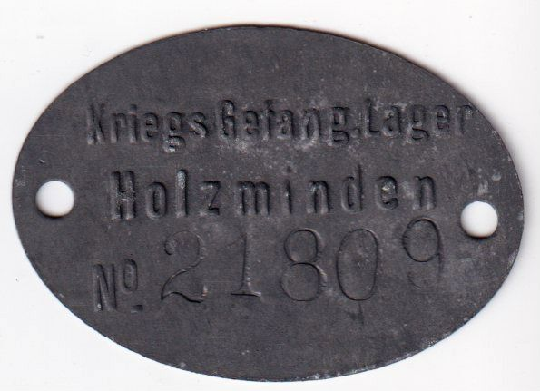

Claude Saint-Léger (1897-1944) a vingt et un ans en 1918. Évadé de Lille occupée en août 1915, il sert sous le nom d’emprunt de la Valette, d’abord au 32e régiment de dragons, puis comme élève aspirant à Saint-Cyr, enfin au 26e bataillon de chasseurs à pied. Cette page réunit dans l’ordre des dates cent soixante-six pièces. Soixante-quatorze sont de lui, presque toutes adressées à sa mère. Vingt-sept sont de sa mère, Marguerite Delemer (1876-1953), otage au camp de Holzminden de janvier à juillet, qui écrit le plus souvent sous le nom de ses compagnes de baraque, à ses enfants, à son mari André Saint-Léger (1870-1952) resté à Lille, à sa sœur Hélène de Lavalette et à Simonne Barrois. Les soixante-cinq autres viennent de la famille dispersée hors du Nord, des camarades du 32e dragons et de Saint-Cyr, d’amis comme Patrick Le Blan ou Monod ; deux seulement sont adressées à d’autres que lui. Les deux côtés de l’échange se conservent rarement ensemble. Après ses lettres des 21 janvier et 6 février, Claude se tait jusqu’au 24 août : on ne lit pendant six mois que les lettres qu’il reçoit et celles de sa mère. De la fin d’août à décembre, au contraire, presque toutes les pièces sont de lui, et les réponses de sa mère, qu’il accuse souvent, ne sont pas conservées.

Marguerite portait le numéro 21 809
Le contexte
L’année s’ouvre sur une seconde déportation de notables du Nord, après celle de novembre 1916. L’occupant les prend en otages pour peser sur le sort des Alsaciens-Lorrains internés en France : c’est une représaille collective, qui atteint Marguerite sans viser sa personne. Pendant des semaines, les lettres reçues par Claude se contredisent sur son sort, Holzminden, la Pologne ou pas de départ du tout. Puis un réseau familial se forme autour du camp. Simonne Barrois, à Versailles, tout près de Saint-Cyr, centralise colis et courrier ; Hélène de Lavalette veille sur Annie, pensionnaire à Lyon, et la reçoit à Rosières, en Ardèche, pendant les vacances ; Philippe vit à Pau avec Tine ; Lucien Delesalle, de Cannes, tient Claude au courant des affaires de Lille. André, seul rue Royale, ne reçoit de nouvelles que par la Suisse, en langage couvert.
Claude passe le printemps au centre d’instruction de Saint-Cyr, loin des grandes offensives allemandes. Il les suit par les lettres de son ancien peloton du 32e dragons, que la cavalerie engage à pied pour boucher les brèches : celles d’Henri Guérin, cavalier d’Ille-et-Vilaine dont les lettres gardent le tour de la langue parlée, de Christian de W., blessé, de la mère d’un camarade disparu. Ces lettres de simples cavaliers tranchent sur les correspondances de notables qui dominent le reste du fonds.
Rentrée par la Suisse le 24 juillet, Marguerite retrouve son fils pendant une longue permission. Fin août, Claude rejoint le 26e bataillon de chasseurs à pied, que la Ire armée pousse de Montdidier vers Saint-Quentin, puis vers Guise. Ses lettres quotidiennes suivent sa mère à Paris chez l’oncle Jules, à Lyon, à Rosières, à Pau, puis à Lille. Elles mêlent la guerre vue au ras du sol, la soif dans les abris de la ligne Hindenburg, les citations rédigées pour ses hommes, aux affaires de la famille : l’éducation de Philippe, l’avenir d’Annie, l’accord signé au printemps entre les filatures Agache, Descamps et Delesalle, où André reste administrateur de son usine.
Lille libérée, Claude ne peut s’y rendre qu’en novembre, après l’armistice ; il a retrouvé entre-temps l’oncle Émile et la tante Louise, à peine libérés. En décembre, cantonné en Flandre belge puis près de Bruxelles, il visite des filatures vidées de leurs machines et ouvre un livre sur la filature : l’après-guerre industriel commence dans ces lettres, avant même la démobilisation.
Dates repères, 1918
Entre le 8 et le 11 janvier : Marguerite Delemer est déportée de Lille comme otage (journal de guerre de Marguerite ; date arbitrée dans la base de faits).
18 janvier : première lettre conservée de Marguerite au camp de Holzminden, sous son propre nom (copie d’une lettre).
21 janvier : Claude apprend la déportation de sa mère par une voie indirecte, avant toute lettre de la famille (lettre).
Janvier : il passe sur sa demande des dragons aux chasseurs à pied pour suivre le cours d’élève aspirant (état des services).
10 février : élève aspirant au centre d’instruction de Saint-Cyr (état des services ; lettre du 6 février).
9 février : Hélène de Lavalette reçoit la lettre du 18 janvier et l’adresse du camp, baraque 21 (lettre).
5 mars : reprise de la correspondance conservée de Marguerite, désormais sous des noms d’emprunt (lettre).
21 mars : offensive allemande en Picardie (historique).
23 et 29 mars : premiers tirs du canon à longue portée sur Paris ; obus sur l’église Saint-Gervais (historique).
26 mars : conférence de Doullens, Foch chargé de coordonner les armées alliées (historique).
30 mars : le 4e escadron du 32e dragons combat à pied devant Montdidier, avec des tués, des blessés et des prisonniers (lettres d’Henri Guérin des 2 et 10 avril, de Christian de W. du 19 avril). Le même jour, le 26e B.C.P. tient devant Grivesnes (historique du 26e B.C.P.).
30 mars : Hélène de Lavalette arrive à Rosières avec Annie pour les vacances de Pâques (lettre).
8 avril : Claude est versé au 26e B.C.P., tout en restant à Saint-Cyr (état des services).
9 avril : offensive allemande de la Lys, en Flandre (historique).
12 avril : Clemenceau publie la lettre de l’empereur Charles transmise par le prince Sixte (historique).
Avant le 16 avril : Mlle Roussel, malade, quitte son Cours de Lyon ; Annie entre aux Ursulines (lettre d’Hélène de Lavalette du 16 avril).
26 avril : accords franco-allemands de Berne sur les prisonniers et les internés civils (Archives nationales).
3 mai : Lucien Delesalle expose à Claude l’accord industriel signé entre les sociétés Agache, Descamps-Longhaye et Delesalle (lettre).
22 mai : une centaine d’internées reçoivent l’ordre de partir, puis un contre-ordre (lettre de Marguerite du 15 juin).
27 mai : offensive allemande du Chemin des Dames, les Allemands sur la Marne (historique). Le 32e dragons reste douze jours en ligne (lettre d’Henri Guérin du 11 juin).
3 juin, 3 juillet, 3 août : Claude caporal, sergent, puis aspirant (état des services).
Mi-juin : la convention de Berne est affichée au camp (lettre de Marguerite du 15 juin).
14 et 15 juillet : convois de rapatriement des Alsaciens-Lorrains, puis des otages (Archives nationales). Marguerite n’est pas du premier (lettre de Madeleine Decroix du 21 juillet).
15 et 18 juillet : dernière offensive allemande en Champagne, puis contre-offensive alliée (historique).
23 juillet : le commandant du centre de Saint-Cyr juge excellentes les notes de l’élève aspirant de Lavalette (pièce).
24 juillet : Marguerite quitte Holzminden (lettre d’Annie du 25 juillet).
8 août : bataille d’Amiens (historique).
Août : longue permission de Claude, en partie à Rosières (cartes de M. Thiriet et d’Arnoult ; lettre du 25 août).
24 au 26 août : retour au front par la gare régulatrice de Sotteville, arrivée au Centre d’Instruction Divisionnaire de la 166e D.I. (lettres).
14 septembre : la 166e D.I. est détachée au 10e corps d’armée (lettre ; historique du 26e B.C.P.). Le 12 octobre, Claude écrit 9e corps (lettre).
20 septembre : affectation à la 1re compagnie de mitrailleuses (lettre).
24 septembre : assaut devant Francilly-Selency (lettre ; historique du 26e B.C.P.).
1er octobre : libération de Saint-Quentin (historique).
4 octobre : l’Allemagne demande l’armistice au président Wilson (historique).
7 et 8 octobre : passage du canal de Saint-Quentin, prise des dernières tranchées de la ligne Hindenburg (lettre du 11 octobre ; historique du 26e B.C.P.).
17 octobre : libération de Lille (historique). Citation de Claude à l’ordre de la 166e D.I., n° 231, pour l’assaut du 24 septembre (pièce).
24 octobre : première lettre directe de Claude à son père conservée depuis 1915 (lettre).
Fin octobre : courte permission, lieu non établi (lettre du 31 octobre).
4 novembre : prise de Lesquielles-Saint-Germain, au nord de Guise (lettre du 5 novembre ; historique du 26e B.C.P.). La citation de Claude porte le 5 novembre (pièce).
7 novembre : les plénipotentiaires allemands entrent dans les lignes de la 166e D.I., à La Capelle (historique du 26e B.C.P. ; historique).
9 et 10 novembre : Claude retrouve l’oncle Émile, libéré le 9, et la tante Louise (lettre du 11 novembre).
11 novembre : armistice ; Claude est à Anor, sa compagnie devait monter en ligne le matin même (lettre du 14 novembre).
18 novembre : citation à l’ordre de la 166e D.I., n° 241 (pièce). Claude part en permission pour Lille vers cette date (lettre du 16 novembre).
Début décembre : retour au bataillon après trente-six heures à Paris avec Annie (lettre du 5 décembre).
11 au 21 décembre : cantonnements en Flandre belge, près de Vichte puis à Sotteghem, où Claude voit des filatures de lin démontées (lettres).
24 décembre : Claude annonce que le 26e B.C.P. a reçu deux citations à l’ordre de l’armée et la fourragère (lettre ; historique du 26e B.C.P.).
27 décembre : la compagnie de Claude s’installe à Court-Saint-Étienne (lettres des 26 et 29 décembre).
Lausanne 10-1-18. - Mon vieux Camarade, Bonnes nouvelles à te donner de tous, enfants, famille et amis. Suis satisfait de la liquidation Deluge, tout en regrettant cette affaire montée si patiemment. Mon vieux cousin se tirera encore de la crise actuelle, mais c’est triste de le voir tant souffrir. M. Hatin ne veut pas se charger des affaires Mayer. Je crois qu’il faudra vendre les vieux matériaux l’an prochain, car ils ne peuvent plus servir. Nous reverrons-nous en 1918 ? C’est là mon grand souhait. Amitiés à Guitte et autour de toi. J’espère que tu as déjà reçu changement d’adresse, suis très content à Lausanne. Louis Barbet
Copie, de main non identifiée, d’une lettre de Marguerite Delemer à un correspondant non identifié, vouvoyé. Première lettre conservée du camp, écrite et signée sous son propre nom, sans nom d'emprunt ni numéro d'otage.
Parafe 91 (NDLR : marque du contrôle allemand, relevée par le copiste)
Je ne dois vs parler que de moi, ce ne sera donc pas long !
Si c'était long ce serait trop triste
Avoir pourri 3 1/2 ans à Lille pour échouer ici en abandonnant tout!...
Je vous laisse à juger. - Le sort de ceux de l'année dernière était un paradis à côté du nôtre
Donc si il y a quelque chose à faire je compte sur vs et votre entourage!!
Le nord a déjà bien souffert, vous le savez, et nous ne sommes guère en état de subir cette dure épreuve
Comme ravit! (NDLR : ravitaillement) Jean demande que Marie L. fasse pr moi comme Sr (lecture incertaine : pr ?) lui avec les dernières indications qu'il lui avait données. Veuillez le lui dire et vs en charger avec elle. J'ai le lit de Jean et comme nourriture je voudrais peu de viande mais surtout des légumes, des fruits, des pâtes de fruits pr des compotes des pommes séchées et si c'est possible des légumes frais préparés dans des boîtes de fer blanc. Des tablettes d'alcool pr faire du thé. Des épinards séchés des produits Heudebert et Manuel (lecture incertaine : Mamiel ?). Si j'ai besoin d'argent je vous en demanderai mais il n'y a rien à acheter ici
Notre seule consolation sera de recevoir de bonnes et nombreuses nouvelles de vs tous!!... L'hôtel est gratuit et sauf la nourriture et des cigarettes. Je n'ai besoin de rien pr le reste je m'en fiche!
Bien à vous
Signé M. St Léger (NDLR : mention du copiste ; la pièce est une copie de la lettre, non l'original)
De Claude à sa tante, certainement Hélène Delemer.
Ma chère tante
J’apprends d’une manière absolument indirecte mais pourtant très sûre que mère est partie comme otage à Holzminden. Je n’ai aucun détail mais j’ai écrit aujourd’hui à Madame Paul Le Blan qui arrive de Lille et qui doit être renseignée.
Je sais que Madame Gaston Le Blan est partie avec mère.
Je suis étonné que personne dans la famille ne le sache encore et d’avoir appris cela d’une façon aussi indirecte ? Je me demande même si l’on n’a pas voulu me le cacher.
Si vous avez des renseignements vous me ferez plaisir en me l’envoyant
Je vous embrasse affectueusement, ma chère tante
Votre neveu Claude
Ci-joint le bulletin d’Annie
De Cécile Saint-Léger à Claude.
Mon Cher Claude,
Vs savez sans doute déjà que ns avons eu ces jours-ci le chagrin d’apprendre que Votre Mère avait été envoyée par les ignobles allemands au camp d’Holzminden avec bien d’autres pauvres Lillois - Je n’ai pas besoin de vs dire que de tt cœur ns compatissons tt à fait à la peine qu’Annie et vs vs devez éprouver en sachant le triste sort réservé à votre Mère et combien ns souhaitons pr elle et pr vs que cette dure captivité dure le moins possible. - Je suppose, mon Cher Claude que vs avez eu déjà en avertir votre oncle Delemer et votre Tante Hélène, afin que ts ns fassions notre possible pr lui adoucir les rigueurs de cet internement - J’ai déjà envoyé à votre Mère un colis de vivres et je compte le faire à nouveau les jours ci. Comme je suis certaine que son frère et sa sœur tiendront également à la ravitailler, j’ai pensé qu’il vaudrait mieux peut-être que je m’entende avec eux afin que ns fassions ces envois chacun notre tour et très régulièrement, de façon à ce que les colis lui arrivent successivement et par cette organisation fréquemment aussi - Écrivez-moi, mon cher Claude ce que vs en pensez et soyez assez gentil pour me donner en même temps l’adresse de Mr Léon Delemer et de Madame de Lavalette, afin que je leur écrive si toutefois ma proposition vs convient. Du reste je me mets entièrement à votre disposition si vs désirez que je fasse quoique ce soit pour votre Mère. Si vs avez de ses nouvelles, j’espère que vs me les communiquerez -
Bob est près de ns en permission de dix jours - Il va bien et aurait été très heureux de vs revoir. Il me charge de vs assurer qu’il prend une large part à votre peine et à vs soucis. Dites-le aussi à Annie (dont j’ignore l’adresse) de notre part à ts
Au revoir, mon Cher Claude, j’attends votre réponse et vs envoie mon souvenir bien affectueux
C. Saint Léger (NDLR : Cécile Saint-Léger, tante de Claude et femme de Pierre)
De Simonne Barrois à Claude.
Carte Postale
Expéditeur : Simonne Barrois
Monsieur Claude Saint Léger
32e dragons, 3e Peloton - 4e Escadron, Secteur postal 4
Le 23 Janvier
Mon cher Claude
Tu as dû apprendre par ton oncle Pierre Saint Léger qui s’était chargé de t’en prévenir, ce que ces infects boches avaient encore fait à Lille. Ta mère a été emmenée avec M. et Mme Gaston Le Blan (NDLR : à vérifier) parmi les otages. On la pense à Holzminden. À tout hasard je leur ai envoyé un petit colis de victuailles, on n’a pas de détails précis malheureusement. Je vais leur faire une nouvelle expédition par la gare. Et je sais que la Fraternelle leur a déjà envoyé maintes choses. Enfin espérons qu’elles ne sont pas parties pour longtemps. Et même qu’elles sont déjà rentrées chez elles. L’abbé Descamps, l’abbé Pollet, l’abbé Delesalle. Léon Descamps, M. et Mme Maes Descamps, Mme Delesalle, Charles Bernard (le député) ont été pris comme otages aussi. Si tu veux que je fasse quelque chose pour ta mère, n’hésite pas à me le demander. Aff. - à toi
La petite Monique est très mal.
De Patrick Le Blan à Claude. Escadrille N 462.
Escadrille N.462 S.P. 23 le 24.1.18
Mon vieux Claude
Tu dois déjà connaître la triste nouvelle qui nous frappe tous deux puisque ta mère et la mienne ont été emmenées en Allemagne
Ma Tante Duval s’est occupée de suite de leur envoyer des vivres indispensables, mais on manque de détails. En tout dès que j’aurai d’autres nouvelles, je te les enverrai. Compte sur moi
Bien à toi
Patrick Le Blan
D’Hélène de Lavalette à Claude.
Mon cher Claude,
J’ai reçu cette lettre de Tine il y a q.q. jours ce sont des nouvelles relativement fraîches. Dieu veuille qu’elles soient toujours aussi bonnes. Par des évacués on en a de fort lamentables des Émile, emmenés en Allemagne. Un des garçons serait mort. L’autre huit mois dans un camp. L’oncle Émile on ne sait où ; d’un côté et Tante Louise seule avec Guy. Mais où ? L’oncle Paul vient d’aller à Berne, tenter des démarches pour tâcher d’obtenir des renseignements. On dit que pas mal de notabilités ont été emmenées de Lille et de Roubaix. Tante Angèle me dit que l’on s’attend à de l’enfoncement du front, dans les régions reconquises et à une nouvelle avance des allemands. C’est d’ailleurs l’avis de l’oncle Jos. Si l’on y met le prix, une attaque doit prendre les 1ères peut-être même 2e et 3e lignes. Il faut être prêt et les arrêter lorsque l’effort ne pourra plus être soutenu !
Que va être ce choc ?
Je suis contente de vos dernières nouvelles. Contente que la montre fasse votre affaire. C’est donc entendu pour le compte d’Annie. Je passe la somme à son compte. Je reçois de ses nouvelles ce matin. Vous savez qu’elle a été fortement grippée avec une bonne crise d’entérite. Elle dit aller mieux. Je l’ai vu d’ailleurs, il y a 10 jours. J’espère que son (illisible) marchera. Et voyez mère qui écrit qu’elle est si contente de la revoir, préparant un examen. Envoyez lui la carte, avec recommandation de la renvoyer à Tine et profitez en pour insister sur le mot de mère à son endroit.
Mille bons baisers affectueux de tous.
Tante Hélène
24 Janv. 1918 —
Il m’est impossible de plus rien insérer au Matin. Il y a six semaines que le commissaire de police enquête au sujet de ma dernière tentative d’insertion.
D’Hélène de Lavalette à Claude.
Mon cher Claude.
Je reçois votre lettre et m’empresse d’y répondre de suite.
La seule nouvelle qui me parvienne au sujet de mère m’est arrivée ce matin par ma Tante Angèle. Le renseignement aurait été rapporté de Suisse par l’oncle Paul Ternynck. Mais tante Angèle était si peu affirmative que j’ai écrit de suite, comme elle me le conseillait, à Mme Pollet Ternynck, à Lausanne. C’est pourquoi je laissais percer dans la lettre que je vous écrivais, un peu d’inquiétude, comme vous avez dû le remarquer. C’est donc par votre lettre que j’apprends avec une trop réelle apparence de certitude, le départ de mère. La carte du 20 Déc. que je vous envoyais m’a fait de suite m’exclamer : « ce n’est pas vrai », mais Tante Angèle dit fin Décembre.
D’ailleurs, je vous envoie la lettre qu’elle m’écrit. Je vous assure que je vous aurais prévenu ! et que suis bien douloureusement frappée par votre lettre.
Je suis d’avis que vous préveniez Annie. Les enfants à vos âges, doivent souffrir d’un pareil sort fait à leurs parents. Et leur avoir de la reconnaissance d’avoir tout fait pour leur éviter le sort de Henri, René & Guy.
C’est à moi de vous demander des nouvelles. Si Mme Pollet reçoit ma lettre et répond je vous écrirai ce qu’elle me dit, mais vous serez ainsi que Tante Angèle, plus vite renseignés que moi.
Je vais écrire à Tine, elle préviendra Philip tout doucement.
Nous vous plaignons beaucoup. et d’autant plus que votre tristesse est la nôtre.
Songez à ce que dit Tante Angèle. Les prisonniers n’écrivent plus. Ne pourrait on correspondre avec Holzminden ?
Nous vous embrassons tendrement et tristement.
Tante Hélène
24 Janv. 1918 —
De M. Madeleine Delemer à Claude. Saint-Germain.
16 rue Thiers Saint Germain
Mon cher Claude,
Je viens de recevoir ta lettre j’ai en effet entendu dire que ta mère était partie à Holzminden, mais je n’ai pu encore en avoir l’absolue certitude.
Quoiqu’il en soit, je comprends ta crainte au point de vue ravitaillement et je vais m’en occuper de suite. Figure toi qu’il y a 8 jours le bruit a couru que les anciens otages étaient aussi partis et j’ai immédiatement adressé un colis à ton oncle, par le Directeur français du camp que je connais ; je lui ai écrit à l’instant que mon mari n’étant pas parti il donne le colis à ta mère qui est ma cousine ; elle aura ainsi très vite quelques vivres. Sois donc rassuré je vais m’occuper de cette importante question.
Je viens d’apprendre par les deux religieuses de Pérenchies (rapatriées) qui habitaient chez moi à Lille, les meilleures nouvelles de ton père et de ta mère qu’elles n’ont quittés que le 26 Décembre. Ton père s’occupait toujours avec activité de La Madeleine dont il était en fait le maire, il croisait l’oncle Jean et lui remontait le moral ; ta mère allait aussi très bien et était toujours dévouée à toutes ses voisines.
La vie n’est pas gaie dans le Nord, le ravitaillement est insuffisant pour les malheureux et les allemands sont de plus en plus insupportables !
Ta tante de Lavalette est elle prévenue de l’internement de ta mère ?
A la minute tante Madeleine Descamps me téléphone qu’elle a fait tout le nécessaire pour ta mère ; il y a déjà plusieurs colis qui sont partis et la tante Saint Léger continue les envois. Tout est donc pour le mieux ! Je plains cependant ta pauvre maman de cette nouvelle épreuve que de souffrances pour nos envahis . . .
Au revoir mon cher Claude, je t’embrasse avec mon affection de vieille tante
Te croyant avec mes fils, je leur avais écrit pour savoir si tu étais prévenu de l’enlèvement de ta pauvre mère comme otage. Ils viennent de me répondre qu’ils ne peuvent te joindre et je m’empresse de t’écrire tout ce que je sais concernant ce triste événement et malheureusement malgré toutes les démarches que l’on fait auprès du gouvernement, du Ministère des affaires étrangères et de la Suisse, il nous est impossible d’obtenir jusqu’ici de la précision concernant ces otages.
J’ai lu une dépêche de Lausanne signée Thiriez et disant « Marthe Gaston et Marguerite Saint Léger emmenés comme otages ». Très probablement Holzminden. Faites nécessaire pour colis.
J’ai immédiatement été à la Fraternelle et ai fait envoyer des colis le jour même à ces deux dames. J’ai su aussi qu’à tout hasard, la Société avait fait envoyer 16 kg de vivres dans le camp d’Holzminden.
J’ai ensuite été prévenir ta tante Cécile qui immédiatement s’est préoccupée de l’envoi de colis, de t’écrire et d’avertir Madame de la Valette.
Depuis nous ne savons plus rien. Madame Catoire qui vient d’arriver, apportait de bonnes nouvelles de tes parents et ne connaissait rien des otages qui auraient quitté Lille le 7 Janv.
Je pense bien à toi, mon cher Claude et compatis à toutes tes angoisses et ta tristesse pour ta pauvre mère. Tu peux compter qu’aussitôt que je saurai quelque chose de plus, je te l’écrirai.
Je reste bien affectueusement et tristement en union de pensées avec toi.
J’ai appris avec tristesse le départ de ta mère, ainsi que celui de Mme Le Blan pour Holzminden. J’attends avec impatience des nouvelles. Mme Paul Le Blan qui est arrivé de Lille m’a dit qu’elle espérait en avoir bientôt.
Les trains de Lille arrivent et nos pauvres compatriotes ont fait route, dans des wagons de bestiaux. Dans ces conditions, ma mère ne pouvait partir !
Elle reste donc dans notre pauvre ville de Lille où la vie est de plus en plus triste. -
J’espère que tu vas bien et que tu n’as pas trop froid ! La vie du soldat est bien aussi d’abnégation et de sacrifices. -
Je te souhaite bon courage, mon cher petit et t’envoie mes meilleures amitiés. Tes cousines se joignent à moi.
L. Van de Weghe
De Madeleine Delemer à Claude. Angoulême.
Mon cher Claude
nous avons bien reçu votre lettre et nous savions déjà la triste nouvelle au sujet de mère. Il est bien malheureux qu’elle n’ait pas su se décider à revenir, car la voilà donc de même séparée de père. Enfin ce qu’il faut faire c’est la ravitailler, je lui ai déjà envoyé trois paquets, je compte en envoyer régulièrement deux par semaine. Tante Hélène aussi, et notre oncle Pierre Saint Léger en envoie ce sera largement suffisant je crois. Nous n’avons rien reçu de lui, il n’a qu’à faire des envois réguliers comme nous.
Comment allez-vous, êtes vous toujours dans la même région, vous devez avoir moins froid maintenant. Avez-vous besoin de quelque chose ?
J’ai eu des nouvelles de Philippe ces jours-ci, il va bien.
Nous nous réunissons pour vous embrasser très affectueusement. Baisers de Mamie
Madeleine Delemer
, date incertaine
De Françoise Le Blan à Claude. Paris, 55 quai d’Orsay.
Paris. 55 Quai d’Orsay. - Janvier 1918
Cher Monsieur,
ma mère de retour de Lille étant très fatiguée me charge de répondre à votre lettre et de vous en remercier - elle a quitté Lille avant le départ de Tante Marthe et de votre mère, mais étant en quarantaine à Enghien elle a appris que des otages étaient pris - pour Holzminden, croyait-on, mais ce n’était pas absolument sûr comme lieu d’internement - le gouvernement allemand a dit que cette fois il ne donnerait aucune liste, mais on sait quelques noms - la cause de l’arrestation est la même les Alsaciens-Lorrains que la France ne veut pas rendre, car ils seraient fusillés - Les familles de Lille prévoyaient ce départ en Allemagne - Tante Marthe et votre mère sûrement aussi, avait fait tous ses préparatifs pour ne pas manquer de vêtements chauds là-bas - et n’être pas prise au dépourvu - c’est certainement une grande douceur pour toutes deux d’avoir été emmenées ensemble - votre mère se porte très bien physiquement - mais elle trouve longues les trois années de cette horrible guerre, Tante Marthe la remontera et l’encouragera car elle a une énergie extraordinaire - Le cas des otages aussi bien les derniers que ceux de novembre 1916 est toujours en suspens - Maman depuis son retour a fait quelques démarches - l’insouciance du gouvernement est navrante - et je ne crois pas qu’on puisse espérer un résultat prochain.
Votre père se porte très bien - Maman voyait très souvent vos parents - l’épreuve qu’ils doivent tous supporter resserre beaucoup leurs relations.
Si vous voulez savoir quelles choses urgentes vous pourrez envoyer à notre mère dès que vous aurez son adresse, voici quelques-unes qui manquent absolument à Lille : Savon - élastique - laine - chaussures - bougies - Sirop, fruits, éponges - n’envoyer pas trop de boîtes de conserves toutes faites - si quelqu’un peut les empaqueter pour vous ! C’est cent fois meilleur préparé à la maison - et on est sûr de ce qu’on envoie -
J’espère que vous recevrez sans tarder des nouvelles de votre mère - vous verrez quelle consolation ce sera pour vous et pour elle de pouvoir écrire.
Je vous serre la main cordialement
Françoise Le Blan
, date incertaine
D’Hélène de Lavalette à Claude. Fin de lettre perdue. Date restituée : après le départ des otages de Lille, du 8 au 11 janvier, et avant l’entrée de Claude au cours de Saint-Cyr, le 10 février.
Mon cher Claude,
Ci-joint une lettre de mère reçue ce matin de Tine. C’est bien triste. Tante Aline avait écrit il y a qq jours que Lille subissait à son tour le triste sort subi par les pays de l’Aisne. Pauvre mère !
Je n’osais vous écrire. Annie nous (lecture incertaine : vous ?) attendant vers le 20. Elle me demandait si elle devait partir le 20 ou autres (lecture incertaine : ou attendre des ?) nouvelles de vous. Je lui ai dit qu’elle partirait sur un télégramme de vous et j’ai prié le Cours de lui faire rédiger le télégramme annonçant heure et jour de son arrivée chez Simonne et de mettre lui-même (le Cours) le télégramme à la poste le plus vite possible afin qu’Annie ne soit pas exposée à rester seule sur le quai de la gare à Paris.
Je suis contente d’avoir encore le temps de vous dire cela. Télégraphiez lui le jour de votre arrivée à Versailles dès que vous le pourrez ; je lui ai dit d’essayer de retenir une place : aller et retour en 2°.
Vous lui enverrez cette lettre de mère et elle devra (vous le lui direz) la renvoyer à Tine.
Vous devez à son compte 175 francs (NDLR : le détail totalise 165 francs) dont voici le détail :
le 8 Mai 50,00
réparation montres 20,00
a Rosière autos 45,00
argent 50,00
Puisque vous allez à Pau vous pourrez régler ceci : mais je désire que vous ne lui donnez pas d’argent.
Je lui ai envoyé 150 frs pour son voyage : le billet est de 57 frs environ. Elle dépenserait trop facilement et inutilement et a pas mal de choses à s’acheter et surtout à régler.
Je dois écrire à Monsieur Vermersch, mais je ne puis retrouver son adresse : je vais voir si je l’ai dans mon coffre du C. L. Sinon je la demanderai à Annie.
Pour son compte, elle est arrivée ayant envoyé 500 frs, j’ai reçu de M : V : 2000. Je vous envoie le relevé du compte des 2000.
Je voudrais ne pas craindre qu’Annie dépense un peu inutilement de l’argent que je lui envoie ? D’ailleurs, elle ne m’en demande plus si facilement sachant que je n’en ai plus. Elle m’a dit une fois « mais il faut en demander, à M : Agache ou ! » J’ai répondu que j’aimais autant parceque je trouvais que mère avait envoyé bien assez.
Prêchez lui la raison. Et ne lui envoyez pas la lettre où mère parle d’elle un peu sévèrement. Je regrette que Tine semble avoir parlé d’Annie avec trop de vérité. J’ai toujours désiré que mère compte que cela marchait bien.
Envoyez lui celle des lettres où elle est le moins mentionnée ? Je n’ai pas de (NDLR : la fin de la lettre a disparu ; attribution à Hélène de Lavalette d'après l'écriture)
D’Hélène de Lavalette à Claude.
Mon cher Claude,
Je vous envoie cette lettre reçue de mère par une rapatriée. À l’occasion je dirai à mère que vous étiez casé.
Vous me la renverrez pour que je la montre à Annie, puis je l’enverrai à Philip ; je le laisse pour la fin, car lui en a reçu une de son côté.
Annie est allée avec Mme Armandou, voir Mme Gillet Motte à Lyon. Mais, où pour finir serait mère ? Mme Gillet a dit que les déportées de Lille partagées en deux convois, un à Holzminden, le second n’y a passé que 24 heures après lesquelles il a été laissé libre ? ? ? Germaine Ternynck me dit que ce 2e aurait été envoyé en Pologne, au dire de Mme Gillet, mère serait dans le 2e.
J’ai été aussi grippée aussi n’ai-je pu aller à Lyon ; dès que je le pourrai, j’irai voir Mme Gillet. Il faudrait être sûrs de l’endroit où est mère. Puis si nous y arrivons je demanderai à Mme Gillet ses conseils et son aide pour demander le rapatriement de mère en France. C’est pourquoi c’est un peu ennuyeux d’envoyer beaucoup de colis, si l’on pouvait être sûr que d’autres prisonniers en profitent et non les allemands. Annie lui en a adressé un Jeudi sur mes indications.
Mais je pense que les démarches faites par l’oncle Paul Ternynck, sur Marguerite nous fixeront. Tante Angèle m’a écrit qu’elle avait vu Adolphe, parti ces jours-ci en Suisse, où ils s’occupera activement de mère. Puis j’attends que Mme Pollet me donne des renseignements aussi. J’espérais que Mme Georges Ternynck nous en donnerait. Elle vient de mourir à Évian, au seuil de la complète délivrance.
Donc, pour mère, en attendant une certitude, Philip m’écrit que M. Delesalle lui envoie des colis, Tante Delemer également, moi ; cela en fera plusieurs par semaine ?
Nous nous réunissons pour vous embrasser très affectueusement.
Tante Hélène.
3 Fév. 1918
D’Hélène de Lavalette à Claude.
Mon cher Claude
Un mot de Mme Pollet-Ternynck me dit : malgré nos démarches, nous n’avons encore pu obtenir aucune nouvelle officielle au sujet des otages. « À Berne, on croit encore à une fausse nouvelle, et les derniers rapatriés du Nord ont affirmé que les otages étaient déjà rentrés chez eux et que les dames n’avaient jamais été emmenées. Marguerite avait été désignée, paraît-il, mais André, faisant fonction de maire, n’aurait pas quitté son poste. »
Dès que j’aurai une donnée précise je me ferai un plaisir de lui envoyer des colis et de vous prévenir.
Donc, dès que je saurai qq. chose d’autre je vous le dirai ;
Je vous embrasse affectueusement, mon cher Claude
Tante Hélène
Mardi 5 Fév.
De Claude à sa tante.
Ma chère tante
J’ai reçu votre lettre ainsi que la lettre de mère que je vous renvoie.
Je me demande de quelle photo, mère veut parler.
Je regrette que mère base une opinion sur une chose aussi légère, il est vrai qu’ils ont si peu de détails sur nous à Lille que le moindre a une importance considérable.
Pour la première fois depuis bien longtemps je puis vous donner du nouveau à mon sujet.
Je suis désigné pour suivre le cours d’élève aspirant d’Infanterie qui commence à Saint Cyr le 10 Février.
C’est un changement d’existence total. Je ne regrette qu’une chose, c’est le souci que peut faire naître chez père et mère cet évènement.
Je me prépare à bûcher.
Enfin je vous écrirai dans le courant de la semaine prochaine pour vous donner quelques détails sur ma nouvelle existence.
Je vous embrasse affectueusement, ma chère tante,
Votre neveu Claude.
P.S. Toujours rien de neuf au sujet d’Holzminden.
Le bruit court que les otages n’auraient même pas quitté Lille.
Enfin je vais tâcher d’avoir à Paris quelques renseignements.
Je crois qu’il faut continuer l’envoi de colis à tout hasard.
De Patrick Le Blan à Claude. Escadrille N 462.
N. 462. S. P. 3 . Jeudi le 7. 2. 18
Mon cher Claude
Voici pas mal de temps que tu ne me donnes plus signe de vie. Qu’est-ce à dire ? J’espère que c’est par flemme et non par le cafard. Tu me ferais plaisir en m’envoyant un mot de temps en temps. Si tu as besoin de quelque-chose demande le moi. Je sais que tu es près de l’Isle Adam, quelle sorte de travail fais-tu et au moins n’es-tu pas trop embêté ?
Ne pourrais-tu pas te faire renvoyer à l’arrière à Versailles et la faire une demande pour entrer à Fontainebleau.
ici rien de neuf. J’ai un bon Spad (NDLR : chasseur standard de l’aviation française) et peu de travail à faire, néanmoins la vie est bien monotone et le temps dur à tuer.
Je pars en permission de détente dans quelques jours et compte passer moitié de ma perm. à St Ay, l’autre à Rouen où nous montons une filature de lin. Bonnes nouvelles de Jérôme qui a eu le ruban rouge au début de Janvier et qui j’espère ne va pas tarder à rentrer en France.
De nos pauvres parents pas beaucoup de nouvelles. Avant hier à Paris on m’a dit qu’on espérait que les otages n’étaient pas partis en Allemagne.
Rien d’officiel mais on peut espérer, d’autant plus que nous n’avons rien reçu d’Allemagne.
Comment va ce bon Max ? Qu’il m’écrive un mot. Dis lui bonjour de ma part et pour toi, mon vieux Claude, mes meilleures amitiés
Patrick
Amitiés au Brigadier Camille Bériot
D’Hélène de Lavalette à Claude.
Mon cher Claude,
Je reçois une lettre de mère du 18 Janv. de Holzminden
Ci-copie : (18 Janv.)
Ma chère Hélène,
Je poirotte ici ; sans trop savoir ici pourquoi. Ce n’est pas drôle, mais le plus dur, c’est toute la tristesse que j’ai laissée derrière moi ! Ma seule consolation sera de recevoir de vous de longues nouvelles détaillées, chose qui nous manque si cruellement !
Je ne suis autorisée à te parler que de moi, ne t’étonne donc pas de ce que je ne t’en dise pas plus long. Problème obligé ! Il faut me ravitailler, surtout en légumes et fruits, pâtes de fruits, tout ce qui rappelle ton régime auquel je suis condamnée, tu vois comme c’est commode. Dieu veuille que cela ne dure pas trop longtemps. Peut-être pourrais-tu me mettre en boîte de fer blanc, des légumes verts que tu m’enverrais 2 ou 3 fois par semaines, nouilles, légumes, enfin fais pour le mieux afin que je ne crève pas ici ?
J’embrasse mes gones et toi, je vous aime tous et vous engage à ne pas vous faire de bile. Ça s’arrangera, j’espère.
Baisers à toi
Marguerite Saint-Léger
Pour toi et Tine.
Par le même courrier, des nouvelles de tante Louise par Ch. (illisible). Elle est à Holzminden, où elle a retrouvé mère ; Thadée est mort le 4 Déc. d’infection, appendicite pleurésie malade 20 jours. L’oncle E. est toujours à Mondrepuis avec René et Guy. La lettre de tante Louise avait 4 jours de date. ! ! ! donc environ des 1ers jours de Fév. ! ! !
Nous allons tâcher de nous entendre pour envoyer des colis pour toutes les deux, avec l’oncle Paul, l’oncle Léon.
Je n’ai rien reçu de tante Pierre Saint Léger, nous allons en parler aussi à Germaine. Ainsi nous pourrons faire en colis presque quotidien, ceux des autres... ou Delesalle ou autres, pourraient arriver par surcroît.
Mille bons baisers. Écrivez donc à mère un mot vous même, au nom de Lavalette
De Lucien Delesalle à Claude. Cannes, hôtel Gonnet.
Carte-Lettre
Monsieur C. Saint Léger, du 32e Dragons, Élève aspirant école de St Cyr
Seine et Oise.
Mon cher Claude
J’apprends avec plaisir ta nouvelle destination car ton travail sera beaucoup plus intéressant et je souhaite que tu obtiennes rapidement ton premier galon.
J’ai reçu avant hier une lettre de ta Mère datée du 18 Janv. d’Holzminden. Elle se trouve là avec beaucoup de dames de Lille et sont toutes soumises à un régime des plus dur. Je lui fais expédier tous les deux jours des colis de victuailles, espérant qu’ils lui arriveront et qu’ils amélioreront un peu l’ordinaire.
Je plains beaucoup aussi ton Père, resté seul là-bas et je fais des vœux pour que nous puissions un jour nous venger de toutes les tortures subies par nos chers amis et compatriotes. Je ne pourrai pas te voir à Paris car je suis à Cannes encore au moins pour trois mois.
Bien cordialement à toi
L. Delesalle
Quelle est ta nouvelle adresse ?
De Camille Bériot à Claude.
14 Février 1918
Mon vieux Claude
Je Te dirai tout d’abord que Mardi dernier on disait chez moi qu’il était arrivé à Paris une lettre de Ta Mère. Je t’en avertis de manière que Tu puisses la réclamer si on ne te l’a déjà envoyée. J’étais en effet encore une fois à Paris Mardi dernier.
Mercredi, j’ai reçu ta charmante lettre et j’y réponds. D’abord, je sais qu’il est arrivé plusieurs lettres pour toi et le vaguemestre les a envoyées à St-Cyr.
Il est fortement question que je vais aller en permission Lundi prochain pour 20 jours après quoi je ferai immédiatement ma demande. J’irai peut-être Te dire un petit bonjour à St-Cyr ; indique moi soit le jour, soit l’heure où nous pourrions nous voir un moment.
As-Tu passé un examen d’entrée ? L’ensemble des études est-il très élevé comme moyenne ?
J’ai fait Ta commission au peloton et je t’avoue franchement que tu es très regretté. Tout le monde ne tarit pas d’éloges sur ton compte, je t’assure que je n’exagère nullement.
Au revoir et à Bientôt.
Bien à Toi
Camille Bériot
32e Dragons
4e Escadron
2e Peloton
S.P. 4
Le Régiment d’Artillerie où Gérard ira est le 270e (art de campagne) il est depuis peu attaché à la nouvelle division formée par 4.9.11 Cuirassiers
S.P. 104
D’Henri Guérin à Claude. Survilliers.
Mon vieux Claude
je t’envoie quelques mots pour te parler un peu de ma situation, je t’assure que le moral est plutôt bas en ce moment je suis partit ce matin à 10h.10 de l’Isle-Adam et je suis arriver a Survilliers devers 2 heures
quand on arrive on nous dit que les trains était supprimer le soir que lon en avait pas avant 7 heures demain matin alors on a laprès midi a passer là et la nuit il y a bien des baraques mais il ny a pas de lit je mattend pas avoir très chaud cette nuit il y a déja 3 ou 4 jours que les trains sont supprimés et au régiment il ne save encore rien tu voit que cest bien organiser enfin ils on timbrer nos permissions a la date du 18 cest déja quelques choses
eh toi mon vieux Claude aujourd’hui Dimanche j’espère que tu as trouver de l’amusement
j’espère que tu doit aussi commencer a t’habituer, et aussi j’espère que tu as prit ca avec goût et que tu en gette un coup
je vas te donner mon adresse et j’espère recevoir de tes nouvelles pendant ma permission
Guérin Henri au Jarrier
Erbrée, Ille-et-Vilaine
je ne connait pas de neuf a te raconter, il est question que la division remontrait un peu Barthon doit partir en perm Demain
j’attend de tes nouvelles
bon courage
A fin ma lettre en te serrant une cordiale poignée de main
Bien a toi
Guérin Henri
De Camille Bériot à Claude.
Mon vieux Claude
Ce sera un très grand plaisir que tu me feras Dimanche de venir déjeuner à la maison
C’est je crois la manière la plus simple d’arranger la chose.
Je te remercie beaucoup de ton invitation à Versailles, mais je t’expliquerai que le Dimanche étant le seul jour où je verrai toute ma famille, je tiens assez à le passer ici.
J’ai passé la journée à Rambouillet à la chasse au gros gibier dans les bois de la duchesse d’Uzès-
Un dîner de chasse des plus plantureux et une société des plus amusantes ; je t’assure qu’on ne manquait de rien-
Énormément de gibier- J’ai raté un double de biches par pure maladresse et aussi par inexpérience mais je crois en avoir blessé une-
Je t’expliquerai Dimanche pourquoi mes projets pour l’Artillerie et Fontainebleau ont été réduits à néant par le Capitaine Thureau-Dangin dont je t’ai déjà causé et que j’ai vu avant d’aller en permission-
Au revoir mon vieux Claude
et à Bientôt
Camille Bériot
D’un correspondant à la signature illisible à Claude.
Mon cher Claude
C’est avec un peu de retard que je fais réponse à ta missive, qui m’a bien fait grand plaisir. Très heureux de te savoir en bonne santé. Pour moi, elle est toujours à merveille. Pour le métier, pas de changement : nous sommes toujours dans le même cantonnement. Il court une décision que l’on doit quitter le cantonnement mardi.
Pour les nouvelles du peloton, il y en a pas, l’officier nous fait toujours faire de grande promenade au frais.
Maintenant passons a se honorable fusil mitrailleur.
Nous sommes entrain de nous entraine pour un concours qui a lieu Lundi. Il y a un seul prix pour la brigade Le concours s’agit de partir l’équipe complète d’un but a la charge a cheval parcourir 400 mètre a toute vitesse finir a terre et se mettre en batterie du plus vite possible. Tiré 2 chargeur couché et 2 en marchant en suite remonté a cheval et refaire le même trajet passé entre 2 piqué en suite ! Voila dont ils consiste le Concours. Fais de compte qui est comme 27 fourragères.
Et bien j’espère que ton (illisible). Je te souhaites bonne continuation et surtout bonne réussite !
Rien de plus a te dire pour aujourd’hui. Je termine en te serrant Cordialement la main
(signature illisible)
De Léon Delemer à Claude. Angoulême.
Mon cher Claude,
Nous avons été bien contents de recevoir de vos nouvelles après longtemps ; et je suis très heureux de vous féliciter de votre changement de position qui vous fait grand honneur.
J’espère que vous réussirez bien à Saint Cyr où dans tous les cas vous ferez quelque chose de beaucoup plus intéressant. C’est déjà très bien d’y être entré et cela prouve que vos chefs étaient contents de vous. La première fois que je passerai un dimanche à Paris je ne manquerai pas de vous faire signe, ou bien je tâcherai d’aller vous voir en semaine.
Nous avons été très peinés de savoir votre mère à Holzminden, enfin cela rassure d’avoir de ses nouvelles ! Pour les colis à lui envoyer nous lui en envoyons deux par semaine, tantôt d’un kilo tantôt de cinq, mais je pense que les Barrois et d’autres lui en envoient aussi pour qu’elle en ait environ un par jour.
Il faudrait bien qu’elle puisse être évacuée quand elle ne sera plus otage !
Je vous embrasse affectueusement mon cher Claude. Ma femme se joint à moi et nous serons toujours heureux de vos nouvelles.
Votre oncle affectionné
Léon Delemer
De Cam à Claude.
Mon vieux Claude,
J’ai beaucoup regretté de t’avoir quitté si brusquement Dimanche dernier, et en somme d’avoir si peu profité de ta présence durant la journée - Toutefois j’ai été très heureux de te revoir et j’espère bien qu’à ma prochaine permission, j’aurai encore le plaisir - A propos, ton accrochage avec cet officier d’artillerie, a-t-il eu des suites désagréables ? J’espère pour toi que cela passera au bleu et qu’il n’y aura pas de conséquences pour l’avenir -
J’attends Patrick incessamment, il n’attend pas sa permission de détente avant 4 à 5 jours - A part cela rien de neuf.
Bon attendant de tes nouvelles je te serre cordialement la main.
Ton ami, Cam
N.B. : je pars Vendredi
De Christian de W. à Claude.
Mon cher Claude
Je suis arrivé ce matin de permission. J’ai retrouvé ta lettre avec un bien vif plaisir. J’ai aussi reçu celle que tu m’adressais à la maison. Je t’avais écrit la veille.
Merci de tes bons conseils. Ils me réconfortent un peu. D’ailleurs ma permission m’a légèrement relevé le moral. De Boissieu a même écrit à mon père à ce sujet. Car comme tu le sais je lui avais parlé de mon changement et ma demande pour l’A.S. (NDLR : Artillerie spéciale, c’est-à-dire les chars d’assaut). Il me promet de m’aider et de hâter ma nomination, dans son possible. Cependant je n’espère pas avant 2 ou 3 mois.
Je n’ai pas de peine à te croire que le deuxième peloton te manque. Cela je l’avais toujours envisagé avec peine lorsque je pensais faire une demande. Si je parvenais à atteindre la sardine blanche cela me serait infiniment plus agréable quoique, comme tu le sais, les sous-officiers ne sont pas des gens à m’intéresser.
Hubert espère arriver à permutter pour l’armée Américaine comme interprète.
Je te promets mon vieux Claude de ne jamais manquer de t’écrire. C’est avec plaisir que j’ai vu que tu ne demandais qu’à continuer nos bonnes relations.
Je t’enverrai aussi les photos que Hubert est encore en train de révéler, car il est resté 2 jours de plus. Tu connais sa citation.
Toujours à toi mon vieux Claude
Christian de W
, date incertaine
D’Hélène de Lavalette à Claude. Date restituée : après la lettre du 6 février où Claude annonce son entrée au cours de Saint-Cyr, dont Hélène a attendu l’adresse, et avant la lettre du 3 mars, qui annonce le brevet manqué d’Annie.
Mon cher Claude
Je suis très en retard avec vous ; mais la raison en est que j’ai d’abord attendu votre adresse à St Cyr, puis j’ai été assez vivement grippée avec de très douloureuses névralgies à la tête, peu de loisir pour écrire.
Je suis assez partagée dans mes sentiments au sujet de votre nouvelle position. Contente de vous voir sortir de la médiocre vie où vous étiez, mais préoccupée que ce fut pour le métier d’officier fantassin. Que diront père et mère ? Cette dernière surtout va paniquer (lecture incertaine : penser ?) que nous ne vous avons pas assez défendu contre vos sentiments ! Seulement, il faudra, maintenant, prévenir Mère. L’avez vous fait ? ou ne le ferez -vous que lorsque vous aurez fini. Pour combien de temps en avez-vous ? Êtes-vous content ? Cela vous intéresse-t-il ?
J’ai vu Tine, il y aura lundi 15 jours ; nous avons passé la journée ensemble. J’ai été contrariée de la trouver souffrante, maigre et pâlie ! Elle souffre d’intestin et vous savez qu’elle est peu raisonnable lorsqu’il s’agit de se soigner. J’ai recommandé à Mme Armando d’aller la voir à ma place ; et je l’ai un peu raisonnée, pour qu’elle soit raisonnable.
Les colis à mère sont bien organisés, Tante Denise a correspondu avec Mme Pierre Saint Léger. Puis, nous nous sommes entendues tous ensemble avec l’oncle Paul ; Th. Béchade, il part un colis de 5 kilos à peu près journellement. Tante Pauline Huet envoie des douceurs dattes, oranges, fruits. Votre oncle Lucien Delesalle envoie beaucoup de petits colis. Mère en recevra aussi de temps en temps des uns ou des autres : Mme Ed. Ternynck, Mme Aug. Dormeuil me dit tante Angèle. Mme (illisible) doit tâcher de voir Mme Gillet-Motte puis peut-être M. Eugène Motte retour d’un camp de concentration, pour avoir des renseignements pour tenter des démarches. Elle fera cela avec Annie. Mon Annie ne m’a pas parlé de votre petite attrapade. Elle était fort nerveuse - m’a-t’elle dit - mais c’est un peu de faiblesse car elle mange presque rien. La leçon de Simonne lui a fait un gros effet. Elle a été fort attrapée, elle pensait - m’a-t’elle dit - que Tine ne vous le réclamerait pas. Je pense qu’elle n’aura plus rien demandé à personne, car je lui ai dépeint l’effet, si mère recevait une fois libérée, q.q. petits comptes de genre.
Tante Hélène
D’Hélène de Lavalette à Claude.
Mon cher Claude,
Je rentre, sans grande certitude. Je dois encore attendre, je n’ai que l’espoir de voir le 17 mars la Supérieure des Dames Ursulines qui ont une maison à (illisible) en Italie : et lui exposer ma requête. Prendre Annie, puisqu’aux grandes vacances, quand ce ne serait que par blâme de n’avoir pu prendre sur elle et poursuivre un effort dans le but de satisfaire mère.
Comme je suis contrariée de ce brevet manqué !
J’ai presque envie de dire à mère que je ne la laisse pas à Lyon à cause de sa santé ? Si elle était plus constante, que je puisse faire fonds sur elle, je vous dirais si la ferai travailler à Rosières où les demoiselles de l’école préparent le brevet. Mais je n’obtiendrai rien, puis ce sont de braves filles sans chic. Puis il faut que j’aille à Vichy en Juin, peut être même revienne ici !
Je ne dissimule pas ce qu’est Annie, je voudrais qu’on tâche de lui former un peu une conscience. Il y a là une trentaine d’élèves. On aurait le temps de s’attacher à elle au point de vue moral.
Donnez-moi votre avis.
Approuvez-vous ? Je crois qu’on me la prendrait ne s’engageant pas au-delà des vacances.
Je monte à Rosières le 28 d’ici.
Affectueux embrassement
Tante Hélène
De Marguerite Delemer à sa fille Annie, au château de Rosières (Ardèche). Écrite sous le nom de Cécile Boogaert, n° 16.396, baraque 12.
Adresse: via Suisse
Mademoiselle Chint Léger
Château de Rosières
par St Félicien (Ardèche)
Lyon, Rhône, France
Ma chère petite Annie,
Votre colis m'a fait très grand plaisir, il était fort bien composé pour moi, et je serais contente que vous m'en envoyiez un dans le même genre tous les mois, je voudrais aussi des colis de pommes de terre, et des colis d'oranges et bananes tout à fait vertes, veuillez m'envoyer un chapeau, très simple, canotier en velours noir bordé, dans le genre de celui que vous aviez rapporté, pas trop grand mais en bonne qualité et avec une très grande entrée de tête, 0m 60 environ. Veuillez remercier beaucoup de ma part T. Aline et T. Angèle et leur dire que nous allons bien ! Écrivez à mon oncle Gustave dites-lui que je le remercie, sa bonne lettre m'a fait un immense plaisir, qu'il m'écrive souvent et m'explique surtout tout ce qu'il fait et qui nous intéresse tant père et moi. A-t-il l'espoir d'arriver à faire rentrer Marguerite chez elle ? Je remercie aussi Simone et je compte sur eux tous pour moi et pour Claude ; j'envoie à Geno toute mon affection et prends une vive part à son grand chagrin, pauvres petites si terriblement éprouvées déjà !! Écrivez moi de longues lettres dans lesquelles vous me donnerez bien des détails sur Claude, envoyez-moi ses photographies, dites lui qu'il m'écrive et me dise ce qu'il pense ? Je voudrais six pantalons blancs tout unis de votre taille, 12 mouchoirs de poche et du tissu blanc pour me faire des blouses d'été. Dites moi si vous avez de bons professeurs, si vous espérez réussir votre examen et si vous faites des progrès en piano ? Je suis contente que père aille bien.
De Jean-Charles Fels à Claude. Hôpital Jean-Macé, Château-Thierry.
(NDLR : date en partie masquée par la mention « Paris » écrite en travers ; lire 5/3/18 ou 5/9/18. Mars est retenu d’après le contenu de la lettre.)
Tu t’obstines à te retrancher dans un silence farouche. Que fais-tu ? Pour moi, je commence à en avoir tout à fait marre, et comme j’étais depuis le mois de juillet sur le front, je viens de me faire évacuer. J’ai eu beaucoup de veine et après 2 hôpitaux je suis actuellement à Château-Thierry. J’ai une vie assez calme, je suis surtout occupé à boire du lait et à lire la collection de la Revue Hebdomadaire. Inutile de te dire que ma santé n’est pas essentiellement compromise et qu’il est inutile de t’en faire à ce sujet. Je compte passer ici encore quelques jours puis aller en convalo de 10 j. + 10 j. = 20 j., ce qui vaut toujours la peine. Après ce sera l’été et je pourrai repartir sur le front. Si je vois que la guerre doit encore durer pendant l’hiver 1918-19, alors il faudra aviser sérieusement. Que fais-tu, vraiment tu n’arrives pas à te débarrasser de ce maudit 32e. Je serais très heureux de te voir. Quand seras-tu à Paris et à quelle adresse ? Il paraît qu’avec ce maudit Clemenceau il est impossible (lecture incertaine), qu’il faut saluer les officiers et qu’il n’y a absolument pas moyen de sortir en cols ouverts. Plus de fantaisie (lecture incertaine). Que deviennent les (illisible) Je suis très inquiet de l’état de Paris. Enfin, je voudrais que tous les civils meurent de faim pour qu’on fasse la paix, car pour nous, la guerre étant passée à l’état chronique, on est habitué à nous voir mourir.
Je ne sais guère où nous allons actuellement et me demande si on pourra vivre en France après la guerre ; les questions sociales et autres vont être terriblement aiguës. Je me demande si on pourra rester et en tous cas si les capitaux pourront rester. Espérons que nous aurons le temps de toucher les indemnités et de les faire filer.
Tu sais que j’ai eu la très grande veine de rencontrer Aubry dans mon secteur, ainsi que Mac-Avoy (lecture incertaine). J’ai été très heureux des contacts fréquents que j’ai eus avec Aubry. Je le connaissais peu et mal ; j’ai été surpris de voir que quoique nos vies militaires aient été très différentes, nous avions les mêmes opinions sur nombre de points. Aubry a dû être engagé dans l’affaire de la Pompelle et je suis assez inquiet. Personnellement, j’ai eu la chance de quitter le secteur au moment où il devenait mauvais.
Que fais-tu ? Que fais-tu ? Que fais-tu ? Être insaisissable, donne-moi de tes nouvelles ! Que lis-tu ? Que fait Le Blan ?
Me voilà rentré depuis 5 jours et ma foi j’ai repris mon petit turbin sans mal ni douleur. J’ai trouvé en arrivant, Ton colis contenant mes éperons, je te remercie. Ton bouquin de Philo et tes éperons sont à la maison a un endroit jusqu’à présent connu - Passe les prendre sans trop tarder, car il pourrait se faire que dans le remue-ménage de la maison ils se trouvent égarés -
Les officiers nous encouragent de plus en plus à jouer au ballon ; ils ont payé à l’équipe représentant le 4e Escadron une tenue, c.a.d. maillot rouge et blanc, assez joli et caleçon noir - Dimanche dernier dans la neige, nous avons fait un match contre l’Isle-Adam Sport et nous l’avons battue 3 à 2. C’était la première équipe, ce qui prouve que nous ne sommes pas si mauvais - Voilà la composition de notre équipe :
Heimburger, Manceau, Martin, Christian, Charpentier Cerdonsy - Hubert de V. - Cottin Barton - Sanné Savouré
Martin a quitté momentanément l’escadron car il est allé à Blérancourt passer un examen de chauffeur d’auto, car il a fait une demande pour passer dans les autos mitrailleuses. Je crois que sa demande aboutira -
Figure-Toi que Bob vient de perdre son Père il y a 3 jours et il a perdu son Grand Père il n’y a pas un mois !
Au peloton il n’y a pas beaucoup de nouveau si ce n’est que de Boissieu est en perm et qu’il rentre demain -
Legendre, Castillon, Jules etc te souhaitent le bonjour - Je suis sur les dents avec Marius (quelle crapule). Quel trouble fête !
A bientôt de Tes nouvelles
Bonne réussite sincères amitiés
Camille Bériot 32e Dragons 4e Escad. 2e Pel. S.P. 4
De C. Monod à Claude. 4e zouaves, secteur postal 131.
Mon cher ami,
Je trouve malheureusement votre mot, au retour de ma permission de détente - Et voilà notre rencontre bien compromise - D’ailleurs, j’ai dû aller dans le Midi voir ma Mère, et je n’ai passé que 24 heures à Paris - Ce n’était pas un Dimanche
Tout donc s’est trouvé être contre nous - Pourtant, j’aurais été si heureux de vous voir. Envoyez-moi votre photo pour que je vous retrouve - Et parlez-moi davantage de vous - Par suite de quelles circonstances êtes-vous dans l’Infanterie ?...
Au lieu de ce 110e d’Infanterie, que n’êtes-vous affecté aux 4e Zouaves - Nous serions débarrassés de cette affreuse correspondance, où l’on ne dit rien, et par laquelle on ne comprend rien, et nous saurions peut-être un peu qui nous sommes, l’un et l’autre, après ces quatre années -
Bien souvent je pense à vous, à tous les envahis, à tant de souffrances plus grandes que les nôtres, et qui ont tout supportées noblement - pour ne pas dire plus - Je ne m’étonne pas que votre mère ait été emmenée comme otage -
Pouvez-vous avoir d’elle quelques nouvelles ? Et votre père, votre frère... ? - Tout cela est poignant, et je devine que vous en devez avoir la force, que dans la certitude que vous êtes actuellement à votre place, et que vous avez fait - tout ce qui est en votre pouvoir -
Pour moi, j’accepte tout le destin, car je sens que ce sont mes raisons d’être personnelles qui sont en jeu –
En ce moment, nous attendons les événements avec le plus grand calme - Nous nous savons destinés à des coups durs - mais l’habitude est prise, et l’honneur engagé - et contre ceci il n’est pas de cafard qui puisse prévaloir.
- Vous avez su certainement la mort de Thierry Faure - Je n’arrive pas à réaliser ces mots, tant son souvenir est vivant en moi - Aux Roches, et pendant la guerre, nous nous étions beaucoup liés - C’était un cœur pur.
Tout cela est affreusement dur - Écrivez-moi bientôt - Vous avez plus à me dire que moi qui ne fais plus beaucoup de découvertes -
Mon courage, mon cher ami - et puisque de longs mois nous séparent encore, ne les laissons pas passer sans nous rejoindre un peu par lettre -
Bien affectueusement à vous
C Monod 4e Zouave S.P. 131
De Christian de W. à Claude.
Mon cher Claude
Comment va cette petite santé
J’espère qu’on s’habitue à St Cyr
Camille et moi parlons souvent de toi. Nous couchons ensemble maintenant. Je ne sais jusqu’à quand nous resterons ici. La date du 13 ou 15 court vaguement de bouche en bouche
Nous avons formé une équipe de football. Elle n’est pas encore fameuse mais elle promet beaucoup je crois
Comme couleurs nous avons pris la culotte noir, le maillot blanc avec large bande rouge formant ceinture et passant à la même hauteur sur les manches. Le bas de celles ci est aussi également bordée de rouge
Comme tu vois je n’oublie pas de t’envoyer les photos de quelques anciens camarades. C’est la seule virée du 2e peloton.
Mon frère Jacques va probablement à Fontainebleau le 5 Avril. Et peut être Hubert en fera-t’il autant s’il n’arrive pas à passer interprète dans l’USA
Au revoir mon cher Claude. J’ai bien des choses à te dire de la part de tous ceux qui sont ici ainsi que de la part de Schumann
Toujours sincèrement à toi
Christian de W
De Marguerite Delemer à son fils Claude, sous couvert de Simonne Barrois, à Versailles. Écrite sous le nom de Jeanne Vermaesen, n° 22.247, baraque 12.
Adresse: via Pontarlier
Madame Barrois
21 Rue Mansart
Versailles, S. et Oise. France
Bonne fête et merci de votre lettre, mon cher grand garçon,
écrivez moi souvent, donnez moi beaucoup de détails. Je suis ravie de vous savoir à l'école près de Simonne. Vous savez combien mon esprit vous suit et la joie que j'aurai de vous voir réussir ! Votre cher papa sera bien heureux, il aura tant besoin de vous et a tant souffert ! Il pense toujours à l'avenir, et combien je suis partagée entre l'immense bonheur de vous revoir et le désir d'adoucir pour lui les difficultés qui nous restent à traverser ! Jamais, vous ne saurez, mes chers petits combien mon cœur est partagé ! Je vais assez bien, et maintenant que je vous sais en bonne voie et Lélé se fortifiant, je retournerai près de père avec plus de paix en attendant le beau jour de notre réunion ! Merci ma bonne petite Simonne de tout ! Je bénis vos légumes et vous en demande très souvent ainsi que farines lactées, sucre, gruyère, sardines. Mille tendresses à Geno et tous.
De Marguerite Delemer à son fils Claude, sous couvert de Simonne Barrois, à Versailles. Lettre écrite sous le nom de Léonie Evens, n° 21.569, baraque 12.
(NDLR : ce recto, expédié par Marguerite sous son propre nom et adressé à « M. C. Saint Léger, chez Mme Barrois », figure dans le dossier sans lettre correspondante ; il est rapproché ici de la seule lettre adressée à Claude chez les Barrois. La lettre elle-même porte le nom de Léonie Evens.)
Adresse: M C. Saint Léger, chez M-me Barrois
21 Rue Mansart, Versailles, Seine et Oise, France
Evens (Léonie)
Lager Holzminden
Nr. 21.569
Bar. 12
Mon grand Claude,
Combien votre chère écriture et celle de Simonne (NDLR : Simonne Barrois) et de son beau père m'ont fait plaisir, écrivez moi souvent et longuement. À quelle époque pensez vous avoir fini vos nouvelles études et dans quel métier comptez vous travailler ensuite ?...
Vous savez mon chéri combien ma pensée vous suit tous les trois, et vous ne sauriez croire combien ma tête et mon cœur sont arrachés à la pensée que Guitte pourrait avoir à prononcer un choix de déplacement entre père et vous ! Vous devinez son immense désir de vous revoir et à quel point elle doit être lasse de la vie si cruelle dont vous n'avez connu qu'un tout petit début... Hélas, comment cette malheureuse se décidera-t-elle tant qu'elle vous sait bien portants à abandonner dans sa si pénible solitude le pauvre Sagan qui a fait tant de sacrifices et est si malheureux ?... Qu'en pensez-vous, mon cher petit, je ne voudrais pas que l'avenir me fasse de mon côté regretter ce que je fais, et je ne sais plus ce que je dois faire ?
Faites venir Annie à chacune de vos vacances, et allez voir votre cher petit frère, soyez bien pour eux le frère aîné sur lequel je puis compter, qu'ils aient comme moi confiance en vous ! Vous avez prouvé que quand vous vouliez, vous pouviez !... Faites bien comprendre à Annie que je suis heureuse qu'elle travaille et occupe son temps et son intelligence ; j'aime beaucoup Simonne et ses beaux parents, et je suis sûre qu'ils respecteront et comprendront mon désir qu'Annie ne voyage pas de l'un chez l'autre, qu'elle ne passe pas d'une main dans l'autre en prenant une indépendance et une liberté qui lui feraient plus tard un très grand tort ! Que Simonne lorsqu'elle l'aura chez elle pense que je suis loin, que j'ai tant d'autres chagrins et d'autres soucis, que j'ai un besoin absolu que celui-là me soit évité ; qu'en dehors de vos permissions Annie reste complètement dans les mains de Tante Hélène ! Que Philip ne travaille pas trop et que sa santé passe avant tout, j'espère bien le retrouver avant l'hiver prochain, et nous verrons s'il ne vaudrait pas mieux qu'il aille en pension, mais pour le moment que la bonne Tine le soigne le surveille, ainsi que ses professeurs et ses camarades et ne pense qu'à le fortifier ! Je crains pour lui l'été à Pau jusqu'en Juillet si il faisait chaud il vaudrait mieux qu'il aille à la mer, Tante Pauline m'offre de le prendre chez elle quand elle quittera Cannes !
Je remercie Simonne de ce qu'elle fait pour moi, ses épinards et endives me font un plaisir extrême, j'en voudrais le plus souvent possible, pourrait-elle aussi m'envoyer des colis de 5 k. de p. de terres, cela me manque beaucoup ! Tout ce qu'elle m'a envoyé est parfait, et nous sommes dans un tel dénuement que j'accepte de très grand cœur ! Je manque terriblement de brosses à ongles et à dents, de crochets et élastiques à jarretelles, de mercerie, des souliers et bas jaunes d'été, taille 39 à talons plats genre Golf très solides, je n'ai pas besoin de pharmacie sauf 250 grammes de graine de lin ; je voudrais des graines de plantes et fleurs de pleine terre, pois de senteur, capucines, etc. etc. pour planter et égayer notre terrain ! Tout ce à quoi elle pensera me fera bien plaisir et je la remercie !...
Je suis heureuse des bonnes nouvelles de Max et d'Élise, j'embrasse la pauvre petite Géno !
Je suis heureuse que votre petit père aille bien et qu'il ne manque pas de nouvelles des siens, surtout soignez le bien ! Je voudrais une vraie jolie photo de vous en buste, avec et sans chapeau ! Je compte sur Simonne pour la faire faire.
Mille tendresses, mon cher grand garçon, mon oncle Gustave m'a bien intéressée avec les sinistres arrangéz-vous pour que Geoffroy m'écrive une bonne lettre ! Je vous embrasse tous.
Je voudrais des graines de plantes et fleurs de pleine terre, pois de senteur, capucines, etc. etc. pour planter et égayer notre terrain
D’Henri Guérin à Claude. Blérancourdelle.
Mon vieux Claude
je fait réponse a ta lettre recu hier qui ma fait bien plaisir. tu me dit que tu croit que je tai oublier eh bien tu te trompe beaucoup par ce que au contraire je pense beaucoup a toi et en ce moment je couche avec camille dans une petite cabane.
et on a beaucoup parler de toi on est très bien installer jetait avec préau mais il est parti hier matin en perm on est parti depuis Dimanche de Parmain on a fait 2 étapes et on est a Blérancourdelle
on a pas repris le Mesnil mais on est aussi bien. pour le moment on est tout a fait tranquille on fait la promenade le matin et laprès midi quelques petites corvées mais personne nous embête Charpentier est toujours chique type
pour le moment on a que notre officier par ce que il y a que le premier et 2e peloton le 3 et 4 sont rester a Parmain pour rassembler tout les permissionnaire de la Division
ils doivent rentrer dici une huitaine mon sous-off. est a suivre un court a Blérancourt il partait le même jour que Préau et c’est moi qui a hériter de tamponner Charpentier mais il est facile a tamponner
notre commandant est parti de ce matin dans une Etat Major. il nous en vient un autre du Maroc. Sultan et Bertha ce porte bien. il sont plus beau que cet hiver. comme le bureau du 4e est rester a Parmain on est en subsistance au 1er escadron et Barthon travaille au bureau du 1er comme fourrier. c’est lui qui nous lit la décision tous les soirs. sur ta lettre tu me disait que tu était un des meilleurs et que tu travaillait beaucoup. ca ma fait bien plaisir
au revoir Claude bon courage et bonne chance. je te serre cordialement la main
Guérin Henri
De Marguerite Delemer à Simonne Barrois, à Versailles. Écrite par Marguerite sous son propre nom, otage n° 21.809, baraque 21.
Adresse: via Suisse, Madame J. Barrois
21 Rue Mansart
Versailles, S. et Oise. France
Ma chère petite Simonne,
Vos colis me font un très grand plaisir ils sont parfaits, les légumes frais font mes meilleurs repas, ne pourriez vous pas m'envoyer à chaque occasion des blocs de chauffage, dont je vais avoir très grand besoin tous les jours, du savon et cristaux, un tube vaseline, 3 pantalons blancs très unis ! Des pommes de terre crues en colis de 5 kilos arrivent bien et seraient les bienvenues une fois par semaine, 2 ou 3 blouses d'été blanches ! Merci de tout ce que vous faites pour mon grand fils et Annie, embrassez Geno et vos chers beaux parents, que Gustave m'écrive, il me fait tant de plaisir, j'espère que Max est tout à fait remis ainsi que sa maman ! Nous allons bien, malgré que le temps est long, je suis contente des bonnes nouvelles de Cagan, de votre papa, et du Cobl, elles sont très rares, mais bonnes ! Je mange volontiers du poulet rotis, du jambon, du thon, les abricots secs et pruneaux sont excellents, mais il faut du chauffage pour les cuire. Baisers Cla.
D’Henri Guérin à Claude.
Mon vieux Claude
je fait réponse a une de tes lettres recu ce matin qui était datter du 9. je ne comprend pas comment que ca peut mettre tant de temps a parvenir c’est vrai que beaucoup de nos lettres vont encore a Parmain ce qui leur donne du retard
enfin ca va être fini les deux pelotons doive partir lundi pour nous rejoindre. je t’avait envoyer une lettre il y a 4 ou 5 jours j’espère que tu as du la recevoir. tu me fait souvent des reproches que je ne t’écri pas. je t’assure que si je ne t’écri pas c’est pas pour ca que je t’oublie, au contraire je pense, et il y est souvent question de toi
tu as bien du voir les journaux. c’est pas mal agiter en ce moment. ca nous empêche même de dormir un peu par moment. malgré ca ce n’est pas encore nous les plus malheureux. les pauvres bougres qui se trouve dans des mêlées pareil ce n’est pas rigolot
pour moi je vait toujour bien. je mange toujours avec Barthon et Tavernier en ce moment qui est revenue de permission sans passer a Parmain. il est en subsistance aux 2e, on est pas fort de monde au peloton. il y a beaucoup de permissionnaires je t’écri il est 8 heures et quelques choses et les boches sont encore en dessus nous pour aller nous rendre visite c’est sale cochon
envoie moi de tes nouvelles. au revoir Claude bonne chance
Guérin Henri
De Marguerite Delemer à sa fille Annie, chez sa tante Hélène de Lavalette, à Rosières. Écrite sous le nom de Louise Valmé, n° 21.887, baraque 30.
Adresse:
Mademoiselle Annie, chez M-me de Lavalette
Rosières. St Félicien
Ardèche, France
Ma chère Annie,
je vous remercie de votre lettre du 4 Avril. Je ferai tout ce que je pourrai pour revenir en France et je suis contente de voir que vous avez fait des progrès en Français ! Faites un bon effort pour votre examen, nous passerons ensuite de bonnes vacances avec Claude et Philip ! Vous pourrez ensuite vous intéresser à bien des choses, cet examen est une base qui me prouvera votre effort et votre bonne volonté ; je compte que vous surveillerez aussi beaucoup votre tenue afin que je vous retrouve une jeune fille bien élevée et comme il faut à laquelle je pourrai donner toute mon affection. Soyez bien sûre, ma chère petite Annie que c'est pour vous plus encore que pour moi, j'étais si triste d'être restée jusqu'à maintenant sans nouvelles de vous !... Je vais mieux et l'air d'ici avec ce grand repos forcé m'ont beaucoup remonté la santé !... La tristesse et l'inquiétude morale de notre avenir à tous est une source de grande fatigue qui ne se terminera malheureusement qu'avec la guerre ! Veuillez demander à Tante Hélène qu'elle remercie le docteur Aussut de sa bonne lettre qui m'a bien rassurée pour Philip, merci des colis, continuez et envoyez moi du pain d'épice et des pruneaux. Baisers.
De Marguerite Delemer à Simonne Barrois, à Versailles. Écrite sous le nom de Bertha Janne, n° 21.511, baraque 12.
Adresse: via Suisse, Madame J. Barrois
21 Rue Mansart
Versailles, Seine et Oise. France
Ma chère Simonne, je reçois enfin de vos nouvelles à cause de la fermeture de la frontière, vos légumes et colis me sont très bien arrivés et me font un immense plaisir, pourriez-vous me continuer souvent les légumes et m'envoyer des colis de pommes de terre de 5 kilos. Je voudrais aussi et surtout du combustible, vous ou Tante Mimi avez envoyé des blocs solidifiés à mon oncle Jean, et je suis très inquiète parce que quand il fera beau temps je serai réduite à ce chauffage ! Je compte donc sur vous. Embrassez mon grand garçon, je pense tant à lui, et voudrais tant que les événements nous réunissent bientôt. Je vais bien mais voudrais de longues nouvelles de tous. Je vous embrasse bien, bien tendrement ma chérie et suis contente des bonnes nouvelles d'André.
De Marguerite Delemer à son fils Claude. Écrite par Marguerite sous son propre nom, n° 21.809, baraque 21.
Marguerite Saint Léger
Lager Holzminden
559 Nr. 21.809
Bar. 21
Mon cher grand fils,
Je lis et relis les quelques bonnes lignes reçues de vous et de Philip avec une profonde émotion ; je voudrais sur toute votre vie tant de détails que je n'ai pas !... Il me semble que ces années passées loin de vous ont creusé dans ma vie un grand vide qui ne se remplira pas, puisque j'ignore tout de vous et que j'ai dû me contenter pendant de si longs mois de l'assurance que vous étiez bien portants... Ces courtes nouvelles ne faisaient que me calmer mon impatience et me rassurer mon esprit et mon cœur, mais vous ne saurez jamais mes chers enfants, la tristesse que je ressens et l'immense sacrifice que j'ai fait en perdant pendant si longtemps tout contact avec vous !... Vous savez, mon cher Claude tout le désir que j'ai eu de vous voir grandir, travailler et vous fortifier, moralement et physiquement, et vous voilà grand maintenant, sans que j'ai la joie de profiter de vous dans ces heures tragiques !.. Je ne m'en plains pas, puisque chacun me dit que vous avez une bonne santé et un bon moral, continuez à faire ce que vous dictera votre bonne volonté, vous aurez besoin plus tard de toute votre énergie pour aider votre père qui a beaucoup souffert... Peut-être le bonheur de nous retrouver nous sera-t-il donné cette année, et nous serons d'autant plus heureux de nous revoir que chacun de nous aura courageusement rempli son devoir !... – Je suis terriblement inquiète et impressionnée, vous en devinez la raison, et mes lectures ne sont malheureusement pas réconfortantes !.. Écrivez-moi chaque fois que vous le pouvez et dites à Annie que je n'ai encore rien reçu d'elle ! Je remercie Géno de sa gentille lettre, je prends une vive part à sa douleur qui éclate dans chacune de ses lignes ; pauvre petite je lui souhaite une belle petite fille qui ne remplacera pas la petite Monique, mais sera un dérivatif à son chagrin ! – J'embrasse Simonne et la remercie de me gâter, j'en ai bien besoin étant dans une purée noire. Je voudrais des jarretelles, de l'élastique et des crochets à jarretelles blancs, un corset très bas taille 44. Busc et baleines de rechange. Des souliers jaunes genre Golf et des bas de fils assorties taille 39 talons plats. Du coton ou fil pour les raccommoder des gants dame jaune lavables. Un chapeau feutre mou genre Golf. Des épingles à chapeau et de toutes sortes, des aiguilles, des cordons, du fil, des ciseaux, un coussin oreiller, des tabliers bleus de cuisinière, deux grandes blouses me couvrant toute entière, des lacets de corset du savon de lessive et de toilette, des bâtons de savon Gibbs à raser (une douzaine). Je voudrais des tricots de coton blancs sans manche faisant cache corset. 3 pantalons blancs tout unis. Je la remercie pour le ravitaillement qu'elle m'envoie les légumes sont parfaits qu'elle y joigne des sardines du poulet du thon, du jambon, des fruits séchés de chez Hédiard 21 Place de la Madeleine, j'ai des farmies pour deux mois. Je vous embrasse tous, tous que mon oncle Gustave m'écrive ce qu'il pense. Pourriez-vous me donner des détails sur l'association Donat et Delesalle. Mille tendresses et merci à tous –
D’Hélène de Lavalette à Claude. Datée « Samedi » seulement : la veille de Pâques 1918, Pâques tombant le 31 mars. Hélène annonçait le 3 mars qu’elle monterait à Rosières le 28.
Mon cher Claude,
Nous arrivons et je trouve votre lettre au débarquée ! Annie va bien ; et, naturellement a été assez déçue de ce contre-temps qui l’empêche de vous voir vous et Simonne. Mais elle a pris la chose très raisonnablement, sans la moindre mauvaise grâce, et les vacances s’annoncent comme devant se passer très bien. Nous n’avons eu votre télégramme d’Annie qu’hier vendredi. Retourné de Lyon par poste ce qui explique une excessive surabondance de télégrammes.
Nous sommes angoissés des événements qui se déroulent ! J’avoue que, d’après les journaux, j’espère que cela va bien tourner pour nous ; mais je suis fort contente de vous sentir à St Cyr.
Moi aussi, je serai contente de vous revoir, mon cher grand. Mais ne vous faites pas de soucis au sujet d’Annie, qui est avec moi, et d’ailleurs très gentille ! Il y a, à cela, encore un certain mérite, car je suis un peu berbère (lecture incertaine : sévère ?).
Aussi, aimerais-je bien que Mère revienne. Savez vous que les Demoiselles paraissent espérer qu’elle arrivera à un brevet ? Elle a fait de sensibles progrès et travaille.
Je vous quitte assez occupée à l’(illisible).
Tous nous vous embrassons très affectueusement.
Ne m’oubliez pas auprès de Simonne et tâchez qu’elle n’ait pas de moi trop mauvaise opinion.
Tante Hélène
Samedi.
D’Henri Guérin à Claude. Près de Saint-Just.
Mon vieux Claude
je fait réponse a ta lettre recu hier. jen profite ce matin pour t’écrire par ce que en ce moment nous font pas mal de mouvements. nous sommes venu coucher a côté de St Just. et ce matin nous repartons a 11 heures je ne cest pas pour aller de quel côté
envoie moi de tes nouvelles ca me fait plaisir
Mon vieux Claude
j’ai une triste nouvelle a t’apprendre c’est que le pauvre Barthon est blesser et prisonnier moi je ne l’ait pas vut mais il paraitrait qu’il serait blesser assez dur. C’est malheureux je vas te citer ceux qui sont mort ou blesser : Demaret M. d. l. et Clavier sont mort sur le coup, le chef Truffau a une jambe es quinter et prisonnier. Margollies les 2 jambes couper et prisonnier. Gascouin prisonnier
Christian blesser au bras
Milet au bras
Dupré a la main
Lalheue blesser
Hassart blesser
Jannin =
Bareth =
Cormier =
tu voit que pour une fois le 4 a été éplucher nous avont eut beaucoup de félicitations notre capitaine a été épatant. M. Leconte va avoir la légion d’honneur tous les blesser vont être citer en plus il en a 3 par peloton au 2e. les voilà : Legendre, Brochard, Guilochet
pour les citations c’était embêtant par ce que tout le monde a fait son devoir. forcément tout le monde n’est pas content. en plus on a depuis qui a été evacuer Launay qui a passer par dessous les roulante qui est evacuer. aussi alors tu voit on ne reste pas beaucoup nombreuse au peloton. il y a encore du changement Charpentier fait fonction d’adjudant. c’est de Van (illisible) qui a le peloton mais ca ne vaut pas enfin ca yra quand même
Mon vieux Claude
cest peut-être cette fois que tu laurait décrocher aussi. mais je souhaite pour toi que tu est la place que tu est ce nest pas toujours rigolot cest principalement les fusils mitrailleurs qui ont écoper.
Mon vieux Claude. je ne cest ci tu as des tuyeause mais pour nous surtout les premiers jours cetait bien drôle tu voyais tout qui ce sauvait artillerie
fantassins civil personne nauffrait de résistance. ci tu avait vut le gaspillage militaire et le gaspillage civil dans les pays évacuer. cest incroyable pour celui qui ne la pas vut. enfin mon vieux Claude je termine ma barbouille en te serrant une cordiale poignée de main. hier on a fait la fête un peu. lofficier a donner 30 ₣ et des poules lapins cochons veau que lon cest emparer par ou quelon passe alor tu voit cest la fête. au revoir bonne chance
Guérin Henri
De Marguerite Delemer à Simonne Barrois, à Versailles. Écrite sous le nom de Léonie Evens, n° 21.569, baraque 12.
Adresse: via Suisse, Madame Joseph Barrois
21 Rue Mansart
Versailles, Seine et Oise. France
Ma chère petite Simonne, J'espère que tous nos enfants continuent à se bien porter, mais avec quelle angoisse je pense à eux tous et combien je voudrais des nouvelles. Vos colis me font un très grand plaisir et je remercie votre cuisinière en même temps que vous, car je vais avoir de plus en plus besoin de vous n'ayant guère de combustible car il ne fait plus froid et dans un mois, nous n'aurons plus besoin d'être chauffés, tout ce que vous m'enverrez de cuit me rendra un énorme service, avec l'aide d'un bloc Rép, je pourrai donc en sortir ! Quelle misère morale et physique, je ne me doutais pas que rien puisse en approcher, veuillez expliquer à Augustine comment vous préparez le bouchage éclair afin qu'elle m'en envoie aussi deux fois par semaine. Je voudrais du porridge et des fruits séchés de la maison Hédiard 21 Place de la Madeleine. Embrassez Gustave, Élise, Max, la chère Géno, je voudrais savoir son baby né. Donnez moi des nouvelles de mon grand fils auquel je pense tant, embrassez-le de ma part, et faites moi envoyer un caoutchouc beige de sport car je n'ai pas de manteau d'été et du savon Gibbs en bâton à raser et surtout du savon pour ma toilette et mon linge ; faites moi un compte de tout cela pour plus tard ! Qu'espère Gustave pour son amie Marguerite ! Je vous embrasse tendrement et caresse vos chères petites et mon grand fils. Du chauffage surtout ! Baisers.
De Marguerite Delemer à son fils Philippe, à Pau. Verso d'une carte dont le recto manque : le nom de l'expéditrice n'est pas connu.
Mon petit Philip chéri, Vos lettres me font un bien grand plaisir, je suis très heureuse que vous achetiez une bicyclette pour vos vacances et je vous charge de demander à la tante ou à Simonne 50 frs de ma part pour que je vous donne aussi une partie de la bicyclette ! Je serais bien bien heureuse aussi de vous revoir, et j'ai bien envie de revenir vous voir si je le peux puisque vous me le demandez si gentiment pour soigner votre vieille merotte !... Merci de vos colis. Les sandales sont trop petites car je mets de gros bas de laine pareils aux vôtres pour qu'ils soient faciles à raccommoder "Je voudrais de la laine mélangée verte et de la marron pour les repriser !... Je voudrais aussi du bon savon et cristaux pour mes lessives, j'ai assez de farines pour deux mois, mais les pruneaux et fruits séchés me font bien plaisir et Line devrait me faire et m'envoyer des boîtes de légumes comme le fait Simonne au moins 2 fois par semaine, car l'été je ne pourrai rien cuire. Jouez bien, mon Lili chéri et continuez à me donner vos places qui m'intéressent beaucoup, mais s'il fait trop chaud à Pau il ne faut pas y rester jusqu'en Juillet – merci Line et bons baisers mon Lili –
D’Henri Guérin à Claude. Au repos près de Gisors.
Mon vieux Claude
je vient de recevoir encore une de tes lettres et tu me demande toujours quest ce que lon devient. oh bien je te dirai que je te lai expliquer déjà sur 2 lettres différentes. mais je cest que un moment donner les lettres ne marchait pas. jespère que tu les auras recu quand même
on a eut 7 permissionnaires du peloton. en piste Préau a été 26 jours parti. il sont tous rentrer. parle moi un peu de ta situation. au revoir Claude
je te lexplique encore par ce que je cest que tu nest pas un type sans coeur, tu pense a nous Mon vieux Claude. voila je te le répète mais surement que tu le sait a présent, ce pauvre Barthon qui a été blesser et prisonnier, blesser asser grave daprès les types. moi je ny etait pas. jetait rester aux chevaux voila la liste des types or combat : chef Ruffau, Marsollin, Gasgouin, Barthon blesser et prisonnier, Demareth et Clavier mort et rester aux boches
blesser revenus Christian, Cormier, Bareth, Jannin, Patreau, Dupré, Millet, pour une fois le 4e etait pas mal éplucher. la division etait commander par Robillot. nous sommes citer je crois à larmée dici peu tu vas voir, le 32 avec la fourragère
en plus il ya eu pas mal de citation au peloton : Brochard, Guillocho, Legendre, et les blesser. on a recu beaucoup de félicitations. comme tu connait la famille Barthon, je cest que ca ne te réjouit pas de les avertir mais tu pourras te rappeler que camille a été blesser et prisonnier Le samedi saint. il etait estimer au 2e peloton. pour nous autres ca va pour le moment on est au repos tout prêt de Gisors mais je ne croit pas pour long temps
ca ne va pas encore bien pour le moment dans daucuns endroit. on a eut aussi des nominations : Debelvilles, sous-offres Tavernier, Caporal et Levreuxe chef. on a recu aussi du renfort au peloton il en a 5 : Blottière et 4 bleus. le peloton est fort en ce moment
et toi mon vieux Claude quest ce que tu devient. jespère que tu ne ten fait pas
Mon vieux Claude Bien a toi
Guérin Henri
D’Henri Guérin à Claude. Au repos.
Mon vieux Claude
je vient de recevoir ta lettre ye te fait réponse aussitôt. en ce moment on a le temps décrire. ce nest pas le boulot qui nous gène depuis que lon est au repos. ca y a toujours été promenade et comme on a toucher pas mal de bleus il promène nos chevaux et nous on nécrase. on a pas mal de revue mais pour des vieux lascar comme nous ca ne nous émotionne pas beaucoup
ca va bientôt faire une semaine que lon est au repos. je nest pas encore monter a cheval, alors tu voit que ca peut aller
sur ta lettre tu me demande ou que on nest passer. cest a Rollot, Départ. (Aisne)
Daprès les types, Barthon était blesser dans la cuisse mais il devait être blesser ailleurs par ce que il perdait du sang par la braïette de ca culotte probablement quil devait être blesser aussi dans le ventre
Lelièvre la ramener un peu et Durand. Lelièvre a la croix de guerre avec palme. pour ca Legendre la ramener aussi et puis un peu tout le monde. tu sait comme ca fait il ne tirait pas au fusil mitrailleur cetait christian
ils on dit quil avait eut du sang. tu me demande ci jy etait non je ny etait pas. jetait rester aux chevaux pour une fois ce nest pourtant pas mon abitude. tu me dit que tu pourrait avoir de lavance pour ton départ. je le croit bien. il va avoir des trous a boucher. on a eut des nominations au 4e. je ten avait déja citer. je ne cest ci tu as recu ma lettre : Levieux, chef Debelvilles, sous-offres Tavernier, Cabot. aujourdhui encore 2 nouveaux Abias et Peltier du 2e peloton. et Samson est parti au 1er escadron. on dit quil va passer chef au peloton. il ya eut de lambrouille entre Jacottin et Bouchez est videz. Cest Guillochon qui le remplace. il en a beaucoup de content que Bouchez est videz. moi pour le premier
Guérin Henri
De Maurice Aubry à Claude. 6e génie, secteur postal 82.
Carte-Lettre
EXPÉDITEUR : Aubry Maurice, Sergent, 6e Génie, 11e compagnie, Secteur postal n° 82
ADRESSE : Monsieur Saint Léger, Elève Brigadier, Dépôt du 32e Dragon, Versailles, Seine et Oise
Mon cher Claude
Que deviens-tu ? As-tu reçu ma lettre d’il y a environ un mois ? Je n’ai pas eu de tes nouvelles depuis déjà longtemps. Es-tu toujours à Versailles ?
Pour moi il n y a rien de bien nouveau, je suis toujours dans le même pays. J ai reçu des nouvelles de Marc avant qu’il sorte au moment de la formidable offensive boche.
Au revoir mon cher Claude. Reçois mes meilleures amitiés, et ne me laisse pas trop longtemps encore sans faire parler de toi.
Bien cordialement à toi.
M. Aubry
De Marguerite Delemer à Simonne Barrois, à Versailles. Écrite sous le nom d'Augusta Ladrière, n° 21.568, baraque 12. Le post-scriptum est porté en tête de la lettre.
Ladrière (Augusta)
Lager Holzminden
Nr. 21.568
Bar. 12
P.S. Veuillez envoyer 50 frs de ma part à Philip pour sa bicyclette ?
Ma chère Simonne
Vos légumes m'arrivent bien, mais combien j'ai hâte d'avoir des nouvelles de tous les nôtres. Je me tourmente beaucoup, et c'est si triste d'être si loin en ce moment ! J'espère que Claude est toujours dans son école, je vous charge de bien l'embrasser car je ne puis écrire qu'à l'un de mes enfants tous les 6 jours. Je vous écris bien mal étant mal installée ! Vos colis me font un bien grand plaisir et surtout tout ce qui est cuit, il fait déjà chaud dans les baraquements et d'ici peu de temps nous n'aurons plus de charbon ; je compte donc sur vous pour m'en envoyer et m'envoyer le plus possible de plats à réchauffer ou vite préparés ! Les légumes de la marque Brevet Chollet séchés en enveloppes sont très bons, de même toutes les conserves Appert sont de 1er ordre, les fruits séchés de chez Hédiard place de la Madeleine. Je voudrais aussi un caoutchouc de sport pour pouvoir sortir quand il pleut car je n'ai que des manteaux d'hiver et pas de parapluies. Si notre séjour ici se prolongeait je voudrais aussi une grande ombrelle de bain de mer et du coutil pour faire des stores extérieurs ; il m'en faudrait 6 ou 8 mètres ! Faites moi, ma chérie un compte de tout cela ! – J'ai écrit à ma sœur, afin qu'elle vous confie Annie si vous pouvez la prendre pendant les vacances, surtout si elle réussit son examen ! – Je me tourmente beaucoup d'être sans nouvelles d'Augustine qui ne m'écrit guère, je voudrais tant des lettres d'elle bien détaillées et être exactement fixée sur la santé de mon petit Philip, je suis affreusement partagée entre le désir de revoir mes enfants et le chagrin de laisser André à la triste vie qu'il mène seul ! Qu'en pense Claude ! Si je ne rejoignais pas mes enfants avant l'hiver prochain, peut-être mettrai-je Annie dans une pension sérieuse dans le genre du Sacré Cœur ou de l'Assomption à Paris et je voudrais qu'elle soit principalement avec des jeunes filles très bien élevées et de bonnes familles afin de l'habituer à avoir une bonne tenue et pas trop de laisser aller ! Vous chargeriez vous dans ce cas d'être sa correspondante afin de la faire sortir aux vacances, ma sœur étant trop éloignée, dites-le moi très simplement, ma chère Simonne, afin que je puisse donner les indications nécessaires ! Annie est très bonne enfant, mais elle est très indépendante et je ne puis la laisser passer à sa guise de l'un chez l'autre, elle a besoin d'être surveillée et comme elle vous aime beaucoup, je suis sûre que vous pourriez avoir sur elle une très bonne influence ! Je ne sais guère ce qu'il y a comme pension qui prenne des jeunes filles, les conduise dans des cours et les traite comme des jeunes filles sorties de pension ! J'en ai parlé à madame L. Del. qui pourrait aussi s'en occuper ! Dites moi ce que vous en pensez ? Si je rentre la question ne se posera pas, mais je ne sais malheureusement pas ce que me réserve l'avenir ! – Que pense de nous votre beau père et s'occupe-t-on même de cette malheureuse question en ce moment ? – Tous vos colis me font grand plaisir et je ne puis assez vous en remercier car, en somme nous en vivons entièrement ! Donnez-moi des détails sur vous, ma chère Simonne, sur vos chères petites, Géno a-t-elle son baby, embrassez la bien de ma part ainsi que votre belle mère et tous ceux qui vous entourent ! Quand aurons nous la joie de vous revoir tous dans votre pauvre village ? Claude voudrait-il demander à Geoffroy qu'il m'écrive une bonne longue lettre, j'en voudrais aussi une de votre amie Lyna ! Surtout faites moi faire de jolies photographies de mon fils, j'en voudrais une en buste et une en pieds. Les photos de vos petites sont bien mignonnes et j'ai été si contente de voir mes deux grands avec votre excellent beau père ; Géno m'a fait aussi bien plaisir en m'envoyant ses chers petits et sa belle petite fille ! Quel chagrin de l'avoir perdue, embrassez la bien de ma part surtout, et dites lui que je ne puis lui écrire mais le ferai bientôt. Faites nos amitiés à tous ceux qui vous entourent ! Je vous embrasse, ma grande chérie ainsi que Claude, ses lettres me font tant de plaisir ! Envoyez moi des systèmes de jarretelles, de l'élastique et si vous ne l'avez pas encore fait 3 pantalons blancs unis et solides, et surtout souvent du savon et cristaux pour laver mon linge.
J’ai été bien touchée de ta lettre reçue ce matin et m’empresse de te répondre pour te rassurer sur tes deux cousins : René a été légèrement blessé au pied on a du lui amputer petit doigt, mais il est maintenant en bonne voie de guérison dans un hôpital à Niort d’où il voudrait bien sortir au plus tôt pour venir passer ici son congé de convalescence. Max est indemne et cantonné pour le moment entre Mantes et Gisors. Il vient de m’écrire en m’en envoyant le texte de sa citation que je te transcris sachant combien tu t’intéresses à ton vieux compagnon d’épreuve :
« Les 25, 26, 27, 28, 29 Mars 1918 dans la région de B. L. G. et P. au cours de la puissante offensive de l’ennemi, s’est offert comme volontaire pour plusieurs missions dangereuses qu’il a accompli avec succès, faisant preuve de la plus belle bravoure et d’un mépris complet du danger. »
René a également la Croix de guerre avec citation, mais je ne la possède pas encore.
En pensant à tes pauvres parents je ne puis m’empêcher de me réjouir de te savoir momentanément à l’abri ; je sais que tu ne penses pas comme moi, mais rassure-toi il reste encore bien de la besogne à accomplir et tu auras certes encore l’occasion de montrer ton courage, comme tu l’as déjà si bien fait. Voici l’adresse de Geffroy, à qui, du reste, je vais donner celle de ta mère :
81e R. A. L. 64e batterie
C. O. A. L. Moret (Seine et Marne)
Je t’embrasse bien affectueusement, mon cher Claude
Demandant de m’écrire de temps en temps un petit mot car je pense souvent à l’ami et au compagnon de mes fils et au petit cousin pour lequel j’ai beaucoup de sympathie.
D’Hélène de Lavalette à Claude. Datée « 16 avril » sans année.
16 avril
Mon cher Claude,
Ci-joint la lettre reçue hier. Il me semble que le ton est bon ; je le désire, car la tâche est un peu ingrate. J’ai écrit à Mère hier longuemet, lui demandant ce qu’elle pense que fera Annie après le brevet, qui aura été pour elle un très gros effort qui lui aura au début beaucoup couté. Car je trouve que je lui fais mener une vie un peu dure, en dehors de toutes ses habitudes et de toutes ses affections. Car j’estime qu’il est difficile qu’elle reste en pension à 20 ans, que je trouve que le devoir de mère aurait été d’être un centre d’affection pour vous trois.
Puis, à la réflexion, je lui ai dit une partie de la vérité au sujet d’Annie. Mlle Roussel très malade obligée de partir et la difficulté en ce que Annie reste au cours où cela n’aurait pas marcher avec les remplaçantes. Je lui dis qu’elle est aux Ursulines et partie en excellente dispositions d’esprit, qu’elle ait soin de l’encourager dans son effort par son affection. Et finalement ! je ne lui ai pas donné l’adresse. C’est idiot. Je la lui enverrai, mais je suis fort prise ni (lecture incertaine : ici ?) et je suis toujours en trombe. Ne faites pas de défaitisme ! Il me semble que la situation est un peu moins mouvante, un jours (lecture incertaine : ces jours-ci ?) : . L’oncle J. (NDLR : probablement Joseph de Lavalette, mari d'Hélène) est du côté de Verdun, commandant de 19e Bataillon de mitrailleuses de position S.P. 218 !
Affectueux embrassement
Tante Hélène
De Patrick Le Blan à Claude. Escadrille N 462.
Carte-Lettre
Monsieur Claude Saint Léger ou De lavalette
Elève Aspirant 6e Compagnie . Centre d’Instruct. Saint Cyr
N° 462. S. P. 28. 6, le 17 Avril 1918
Évidemment, mon vieux Claude, ton silence est fort respectable mais il est de trop longue durée et si tu as un peu de temps à toi en dehors des exercices pourquoi pas un mot de temps en temps ?
Hein !
J’ai eu des nouvelles du 32e : 25% de pertes, me dit Camille. Ici rien de neuf. Je suis maréchal des logis depuis 2 jours. Pas fâché.
Bonnes nouvelles d’Holzminden de la fin Mars.
Bien à toi Patrick
De Christian de W. à Claude. Hôpital 128.
Hôpital 128 Avre s/ Aisne (lecture incertaine : sur Oise ?), Le 19/4/18
Mon cher Claude
Tu diras que je t’oublie, non, ne me crois pas fait ainsi, mais que veux-tu, il s’est trouvé que j’ai été stupidement blessé aux 2 bras. C’était le 30 devant Montdidier. Aussi maintenant peux-tu t’expliquer mon retard envers toi.
Enfin je ne me plains pas, je suis heureux dorloté et choyé par de gentilles infirmières dans une petite villa sur l’Oise. C’est honteux tu vois, je t’écris au lit. Aussi excuse mon écriture au lit et mon bras ne me permet d’écrire que depuis 2 jours.
Je n’ai pas encore eu des nouvelles de mon frère ni de Camille et les autres. Je suis pressé de les avoir car je sais par ma mère que c’est le 4e C. A. qui a le plus souffert. Il me semble que lorsque j’ai été blessé j’ai cru apercevoir ce pauvre Claviers étendu, mais je ne voudrais te l’assurer, j’étais tellement étourdi.
Et toi mon vieux Claude, que deviens-tu ? Tu es peut-être parti de St Cyr. Écris-moi vite, j’ai hâte d’avoir de tes nouvelles.
Et l’offensive, qu’en dites-vous ? Ici nous n’avons que peu de nouvelles.
Quelle victoire notre ligne (lecture incertaine : Tigre ?) vient de remporter. Quelle tête Guérin doit faire.
J’espère apprendre ma nomination un de ces jours, quoique n’étant plus au régiment. Ma mère me dit que Hubert me laisse entendre que j’aurais au moins une belle citation et une autre belle récompense.
As-tu des nouvelles des familles et de Tavernier ? Je n’ose plus leur écrire, j’ai tellement peur d’apprendre que l’un d’eux est tué, aussi j’attends si Hubert m’écrit. Sa lettre ne doit pas tarder
Je te quitte mon vieux Claude, car il faut que j’aille à la salle des pansements. Écris-moi vite de tes nouvelles.
J’ai appris il y a quelques jours que mes deux sœurs se faisaient religieuses. Vraiment je ne m’attendais pas à celle-là. Mon autre sœur va revenir d’ici un mois pour ses couches (NDLR : accouchement). Elle ramènera peut-être son mari. Tu sais que Jules Daudin était en Suisse.
Toujours à toi mon vieux Claude,
Christian
De Marguerite Delemer à Simonne Barrois, à Versailles. Carte écrite sous le nom de Philomène Vinoy, otage n° 22.054, baraque 32.
Adresse: via Suisse,
M-me Jacques Barrois
21 Rue Mansart
Versailles, Seine et Oise. France
Ma chère Simonne, Votre longue lettre du 26 Mars m'a fait bien plaisir. Combien je comprends votre immense chagrin. ! Je vais bien mais je trouve le temps long et bien triste ; vos colis me font grand plaisir, surtout les boîtes de légumes, sardines, thon, jambon. Je voudrais bien des pommes de terre. Les lettres de Claude me font grand plaisir ; je me contrarie beaucoup pour ma fille. Dites-moi s'il y a des pensions comme le Sacré cœur ou l'Assomption, afin que je puisse l'y mettre si je ne pense pas retourner, et voudriez-vous me servir de correspondante. Je ne puis plus la laisser à sa tante qui en est si fatiguée.
Bons baisers.
De Marguerite Delemer à Simonne Barrois. Formulaire d'accusé de réception de colis, rempli par Marguerite sous son propre nom.
Adresse: via Suisse,
M-me J. Barrois
21 Rue Mansart
Versailles. S. et Oise.
Accusé de réception de paquet
Ma chère petite Simonne.
J'ai le plaisir de vous accuser réception de votre colis
Nr. divers arrivé le 22 Avril 1918.
Je vous prie d'agréer mes remerciements.
Marguerite Saint Léger
Holzminden, le 25 Avril 1918.
D’Hélène de Lavalette à Claude. Rosières.
Mon cher Claude,
Ci-joint la dernière carte reçue de mère. Voudriez-vous vous occuper de cette question chauffage, et vous pourriez en charger régulièrement Mme Pierre Saint Léger. Je tâcherai d’en faire mettre dans mes colis à Lyon, mais ici je ne puis rien faire.
Je quitte Rosières dans 10 jours, je vais à Villefranche du 7 au 16 Mai, puis à Vichy et rentrerai ici vers le 10 Juin.
J’ai de bonnes nouvelles des cousins, qui paraissent se faire à l’internat, je pense donc pouvoir les laisser livrés à eux même, et m’installer ici pour l’été.
J’ai de très bonnes nouvelles d’Annie, elle paraît fort contente, et travaillant de tout son cœur.
L’oncle Joseph ne me parle pas beaucoup de son service, il est fort préoccupé des événements du Nord. En sortirons-nous ? ? ?
Je vous embrasse bien affectueusement, mon cher grand.
Tante Hélène
Rosières 26 Avril 1918
De Max Descamps à Claude. En route vers la Champagne.
Carte-Lettre
S. et O. - C. dep.
E. A. de Lavalette
6ème Compagnie
C. J. des E. A. Saint-Cyr
Mon vieux Claude
Oui je suis un affreux flemmard, mais ma flemme a une égale et est... la tienne. Quoique cependant c’est tout de même toi qui m’as écrit le premier. Mais je vais te donner une excuse : c’est que tu me dis m’avoir envoyé ton adresse et que je n’ai jamais rien reçu de toi. Tu es parti du 32 sans rien me dire et c’est par hasard que j’ai appris que tu étais à St Cyr, quelques jours après ton départ.
Voilà les faits rétablis dans leur exactitude, juge maintenant et vois si je n’ai pas droit à ton indulgence.
Je ne te parlerai pas de nos exploits : ils se sont bornés à 9 jours d’actions ; mais 9 jours très durs, 9 jours et 9 nuits sans aucun repos, combat. Tout toujours à pied et ne nous servant de nos chevaux que pour nous transporter rapidement d’un point à l’autre de la bataille.
Tu sais que René a été blessé d’un éclat d’obus au pied. Il est en ce moment dans un hôpital des environs de Bordeaux. On lui a coupé un doigt mais il est maintenant en bonne voie de guérison.
Nous, nous reprenons notre vie monotone. Nous faisons en ce moment étapes sur étapes, nous dirigeant vers la Champagne. Mais personne ne sait exactement ce que nous allons y faire.
Ne te moques pas trop de moi et de notre avancement « rapide » dans la cavalerie. Je serai encore le premier à te féliciter prochainement de ton galon d’aspirant que je te souhaite pour bientôt.
As tu des nouvelles de tes parents et du Nord ? Que devient Patrick, est-il toujours au camp retranché ?
Mon vieux Claude, j’espère que tu continueras à m’écrire souvent : je m’engage à faire de même et crois à ma vive amitié.
Max Descamps
De Lucien Delesalle à Claude. Cannes.
Mon cher Claude
J’ai bien reçu ta lettre du 28 Avril et m’empresse d’y répondre, mais n’ayant pas ton adresse exacte, je crains que ma lettre ne me revienne comme la précédente, il y a un mois. Tu as dû apprendre que les otages allaient être libérés et je ne doute pas que tu ne fasses des vœux pour que ta pauvre Mère se décide à revenir de ce côté de la terrible barrière. Nous souhaitons tous la revoir bientôt car elle serait bien utile pour Annie et Philip - En deux mots voici la combinaison conclue entre la Sté Agache de Pérenchies d’une part, la Sté Descamps Longhaye et S. Delesalle, P et C Delesalle d’autre part :
Toutes ces différentes affaires ont pris des actions des autres et toutes sont maintenant en Société anonyme. Pour une période de dix ans, et probablement plus, les différents établissements ne formeront qu’un seul bloc - Les Descamps Longhaye se chargent de l’achat des lins et de la vente des fils - Émile Delesalle est le premier administrateur de toutes les affaires et les autres tels que ton Père, Donat, Pierre et Charles Delesalle et moi restons les administrateurs de nos usines respectives. Il n’y aura donc pas grand-chose de changé sauf que nos intérêts seront communs et qu’au lieu de se concurrencer, notre bloc représentera une puissance industrielle qui mènera le reste des filatures.
Ceci entre nous car tout cela est signé, mais ne prendra exécution qu’à la fin de la guerre. Je crois inutile d’entrer dans plus de détails, mais si tu le désires nous en causerons à Paris au mois de Juin, car je compte séjourner quelques semaines chez Émile Delesalle 24 rue Ste Sophie (NDLR : à Versailles) à partir du 31 Mai et me ferai un plaisir de t’y revoir.
J’espère qu’Annie s’habituera à sa nouvelle pension et qu’elle saura s’y tenir convenablement ; quant à Philip j’ai de très bonnes nouvelles de santé. Toujours à ta disposition mon cher Claude, je te prie de croire à ma profonde sympathie.
L. Delesalle
D’Henri Guérin à Claude. Nogent-l’Artaud.
LE FOYER DU SOLDAT - Union Franco-Américaine (Y.M.C.A.)
Mon vieux Claude,
je fais réponse à ta lettre reçue ces jours derniers qui m’a fait plaisir d’apprendre de tes nouvelles surtout qu’elles sont bonnes.
pour moi ça va toujours aussi. on vient d’hériter d’une assez grande veine. la division vient de faire mouvement ce matin soi-disant pour aller du côté de St Ménéoult et nous 1er et 2e peloton. nous sommes restés comme centre de ralliement pour resserrer les permissionnaires. comme le 3 et 4 avait déjà resté à Parmain alors tu vois c’est une veine, ci on peut rester une quinzaine, surtout qu’il est question qu’ils doive prendre les tranchées en arrivant.
ca fait une quinzaine, de, passer la, à Nogent-l’Artaud, on a fait 5 étapes pour y venir, et l’on dit qu’il en aurait encore 3 ou 4. et on prendrait un secteur en venant ici. on a coucher une nuit à Lagny pays qui m’a rappeler beaucoup de choses. on a été bien reçu.
eh toi mon vieux Claude tu me dis que tu dois partir en manœuvre et après suivre un cours de mitrailleurs. probable que après ça tu vas en sortir avec les galons. si tu as occasion de venir nous voir un jour tu serais bien de venir ça me ferait bien plaisir et à beaucoup de copains.
on a mis Jean et Postaire élève cabot. on a eut pas mal de nomination : Chapuis, Pelot sous-off., Jasson et J. Gattine cap., Le Couteux est sous-offes, tu dois le savoir.
Christian va probablement passer en revenant aussi.
Tu me parle de ton cheval, il est beau comme il sont à peu prêt tous. Pour le moment Rigal est tampon de Savouré. il est chef de peloton.
Je te serre la main bien cordialement.
Guérin Henri
De Mme C. Bériot à Claude. Salies.
Mon cher ami,
Vous êtes tout ce qu’il y a de plus gentil de prendre part à nos angoisses quant à votre camarade Camille. (illisible) de longs jours sans nouvelles, puis samedi dernier M. Du Buisson père a eu de son fils une lettre relatant de terribles combats à pied au cours desquels Cam aurait été grièvement blessé au genou, puis qu’il n’a pu (illisible) reculer avec les nôtres, qui n’ont pu l’emporter, les Boches étant là. Cam ne put que leur faire signe d’adieu de la main. Le village repris par les Boches l’aurait été ensuite par les nôtres ; on n’a plus trouvé trace de Cam. A-t-il été achevé ? ou emporté ? Le champ est ouvert aux hypothèses et nous sommes bien angoissés (lecture incertaine). Nous attendons de Du Buisson les jour, heure et lieu de la bataille pour faire toutes les démarches que nous pourrons pour retrouver trace de Cam. Merci de votre bonne amitié pour lui. Je vous tiendrai au courant de ce que nous saurons. Quand vous quitterez St-Cyr, vous me ferez bien plaisir en me donnant votre nouvelle adresse. Je vous envoie mes meilleurs souvenirs et mille mercis encore.
Mme C. Bériot
Hôtel Biarritz, Salies (lecture incertaine)
(NDLR : en marge) Envoyez-moi l’adresse de votre père, s.v.p.
De Marguerite Delemer à Simonne Barrois et à son fils Claude, sous une enveloppe adressée à Pau. Le recto porte le nom d'Augusta Ladrière, n° 21.568, baraque 12 ; la lettre est signée du nom de Jeanne Thieffry, n° 22.051, baraque 5.
Adresse: via Suisse, M. P. Leroy
23 Rue Bayard
Pau, B. Pyrénées, France
De Thieffry (Jeanne) N° 22.051 - Lager Holzminden, Bar. 5
Ma chère Simonne et mon petit Claude,
Vous m'avez gâtée et vos lettres et vos colis m'ont fait bien plaisir je vous assure ; grâce à tous les bons légumes de Simonne je vais beaucoup mieux qu'à mon arrivée ici et je dors très bien ce qui ne m'arrivait plus depuis de longs mois !
Je crois d'après les journaux que nous ne resterons plus bien longtemps ici, et je me déciderai je pense à aller vous retrouver tous !.. Malgré mon regret de laisser ce pauvre père, il me semble que je ferai mieux de rentrer près de vous et ce sera pour moi une grande joie en même temps qu'un grand chagrin !
Je suis contente aussi des bonnes nouvelles de Reine et Lélé, il me semble que je ferai bien d'aller tout de suite passer quelques jours auprès d'eux après être passée à Lyon puis j'irai m'installer quelques semaines avec vous mon cher grand fils ; pour profiter de vous pendant vos mois de classes. Je rejoindrai ensuite Lélé à Vichy dont j'aurai aussi grand besoin !
Je viens d'apprendre la naissance du petit garçon de Geno, j'espère qu'elle va bien et je l'embrasse en la félicitant de tout mon cœur !
J'ai reçu aussi de bonnes nouvelles par Tante Célina qui a écrit à ma Tante Louise ; quand vous le pourrez, allez la voir mon petit Claude, cela lui fera tant de plaisir..
Dites à ma Tante Jules Lemaire que je viens enfin de recevoir un corset, mais je crains que ce soit le second et que le premier ne soit perdu ! Je la remercie beaucoup ainsi que des pantalons ; je pense qu'elle n'aura plus rien à m'envoyer !.
Je voudrais beaucoup avoir des nouvelles de Roger Masse et le savoir prisonnier ; une lettre nous disait qu'on était inquiet de lui !
Je voudrais bien savoir mon cher Claude, dans quel métier vous sortirez de l'école ; j'aurais tant aimé vous savoir dans le même métier que Louis et André Cern, mais peut-être ne pourrez-vous pas choisir !.. Comme je serai heureuse de vous embrasser mon grand chéri !
Et vous ma petite Simonne, soyez bien assurée de l'affection reconnaissante que j'ai pour vous ; je vous remercie de tout mon cœur de tout ce que vous avez fait pour moi et pour mes enfants ! Je serai contente de vous revoir et de voir vos petites qui sont si gentilles d'après leurs photographies ! Je vous embrasse tous les deux de tout mon cœur et je vous charge de toutes mes amitiés pour votre cher beau père, pour Élise, et ceux qui vous entourent. Bons baisers à vos petites et à la chère Geno.
Votre vieille Tante qui vous aime bien. Jeanne
D’Henri Guérin à Claude. Près de Vitry-le-François.
LE FOYER DU SOLDAT
Union Franco-Américaine
Mon vieux Claude
Je fait réponse a ta lettre parti du 19 pour moi ca va. on a parti de Nogent-l’Artaud, lundi. on a fait 4 étapes et on a retrouver le régiment asser a 10 k de Vitry-le-François. il est question de partir ci loffensife commence. on va partir. il avait été question que lon devait prendre les tranchées. on en parle plus pour le moment moi je suis rentrer chez le colon hier pour une guinzaine encore
sur ta lettre tu me demande cilon a cantonner a Blangy ce nest pas Blangy cest Plagny. ci tu avait la chance de venir au 26e on pourrait ce voir. Christian a la médaille militaire. il doit sauter a la dernière étape. Brochard et Ciron leurs chevaux ce sont détacher. il les ont retrouver que le midi a 10 km. Filidor était prêt a pleurer. on a des nouvelles du chef Truffau, il espère sauver ca jambe. on entend pas parler de Bériot un sous-off. du 3 e qui est casser, no blet il est passer au 2e
Je ne vois plus rien a te raconter pour aujourd’hui.
Je te serre la main
Guérin Henri
De Marguerite Delemer à Simonne Barrois, à Versailles. Écrite sous le nom de Philomène Vinoy, otage n° 22.054, baraque 32.
Adresse:
Madame J. Barrois
21 Rue Mansart
Versailles
S. et Oise, France
Ma pensée Simonne, j'ai reçu avec un grand plaisir malgré leur retard, les photos de Claude et de vos petites, elles sont très mignonnes ; j'aimerais de Claude une jolie photo en buste bien faite dans le genre de celle de Pierrot Cob !.. Votre longue lettre du 13 Avril m'a fait plaisir, je vois que vous me comprenez si bien, j'aime votre franchise et votre simplicité, ma chère petite, et vous pouvez être sûre que je ferai le nécessaire pour rentrer en France ! Nous en avions le ferme espoir il y a trois jours, 100 personnes devaient être rapatriées dans les régions occupées et partir aujourd'hui !.. Qu'est-il arrivé ? nouveau contre ordre !.. manque d'accord entre les gouvernements et tout le monde reste ici !... C'est long et triste !... Votre ravitaillement m'arrive bien, vous seriez gentille de revoir mes premières cartes afin de m'envoyer les détails de ménage savon cristaux ! Je voudrais des sardines, surtout soignez très bien les emballages et mettez dans le colis la liste de ce qu'il contient et numérotez les colis, ces mesures sont nécessaires ! Combien je voudrais être près de mes enfants pour les vacances de Claude, je l'embrasse tendrement ! Je remercie Tante Marie-Louise de son colis Corcelet et j'embrasse Geno et ses gosses ! Embrassez mon grand fils pour moi et merci ma chérie de ce que vous faites pour lui, que Gustave pense à nous !
De Marguerite Delemer à son fils Claude. Écrite sous le nom de Louise Valmé, n° 21.887, baraque 30.
Valmé (Louise) N° 21.887 - Lager Holzminden, Bar. 30
Mon cher grand Claude, Votre dernière lettre me fait un très grand plaisir ; je vois combien vous profitez de ces mois d'école et je sens que vous y formez votre volonté et votre jugement. Vous avez bien fait de prendre ce chemin et je m'en félicite tous les jours, c'est une grande satisfaction aussi pour votre père de sentir que vous lui reviendrez en état de l'aider, et après avoir rempli courageusement tout votre devoir ! Vous sentirez chaque jour davantage, mon cher, cher enfant, combien je vous ai désiré énergique et courageux, combien j'ai cherché votre santé morale et physique..! Je ne pensais, certes pas, que vous devriez passer par la terrible école de courage et de renoncement à laquelle nous sommes tous soumis depuis quatre ans.!!...
Espérons que vous ne vous trompez pas et que nous verrons bientôt la fin de tant de misère et de chagrins !... Nous avons eu une grande déception la semaine dernière, 100 otages avaient été désignés pour un premier rapatriement en pays occupé, les autres devaient suivre et nous espérions notre prochain retour en France, lorsque de nouveaux ordres nous ont appris que des difficultés survenues entre les deux gouvernements retardaient encore notre libération ! Nous espérons que ce ne sont que des questions de détails et que notre situation ne s'est pas aggravée !.. Je serai bien heureuse de vous revoir tous les trois et j'ai un grand désir de vous retrouver avant les vacances que vous m'annoncez. Nous les passerons ensemble à Rosières où nous retrouverons Annie. ! Je voudrais arriver avant la saison de Vichy, ayant moi-même très grand besoin d'une cure dans cette ville ! Rassurez-vous pour ma santé ; je suis arrivée ici dans un état assez lamentable, mais la vie toute de repos que je mène depuis quatre mois, l'air qui est excellent et le ravitaillement que vous m'envoyez tous m'ont bien remise ; j'ai engraissé, je dors et vivais toute la journée dehors. J'ai repris bonne mine, et sauf pas mal de cheveux blancs, vous ne me trouverez pas changée !...
Je suis contente de savoir que père va bien malgré les terribles ennuis qui l'accablent et ce pauvre oncle Lucien qui avait été bien fatigué s'est aussi plutôt remis. Je suis heureuse de voir Tante Marthe Lyco et les trois filles toujours gaies et bien nourries et bonne maman ne change vraiment pas ! J'ai reçu une bonne lettre de mon oncle Léon qui me parle du départ d'Annie pour l'Italie ; j'espère que Tante Hélène n'aura pas eu de nouveaux ennuis avec elle ! Faites mes amitiés à Mr Monod, j'ai gardé de lui un souvenir très sympathique, j'espère qu'il se remettra et serais contente de savoir ce qu'il a ? Donnez-moi de ses nouvelles ? – Je remercie Simonne qui m'a beaucoup gâtée, si notre séjour se prolonge, j'espère qu'elle continuera, je l'aime beaucoup, c'est une femme pleine de cœur et qui a été malheureuse ! Je suis si heureuse que vous ayez trouvé chez elle l'affection et le foyer qui vous me manquait ! Avez-vous des nouvelles de votre camarade Bériot, et a-t-on une lettre de Roger ? Je vous remercie des quelques détails sur l'association Donat Delesalle. Je comprends à quel point ces détails intéressent père et mon oncle Jean pour l'avenir. – Je vous embrasse mon cher Claude, avec la meilleure tendresse de mon cœur ainsi que Simonne et les petites, j'ai enfin reçu les photos ! Avez-vous les miennes
De Marguerite Delemer à sa sœur Hélène de Lavalette. Écrite sous le nom de Jeanne Chieffray, n° 22.051, baraque 5, et signée « Jeanne ».
Chieffray (Jeanne) - Lager Holzminden, Nr. 22.051, Bar. 5
Ma chère Hélène,
Nous attendons impatiemment le jour de notre départ puisque la raison qui nous retenait ici semble arrangée, d'après les journaux! J'espère que je serai renvoyée près de vous, mais jusqu'au dernier moment on n'est jamais sûr de rien, et combien de temps cela peut-il encore durer!... – Je reçois vos colis et il faut continuer à me les envoyer jusqu'à ce que vous me sachiez arrivée d'un côté ou de l'autre! Je suis bien contrariée de te savoir si fatiguée et de penser que Annie t'a donné bien du mal. Léon me disait dans sa dernière lettre que tu l'envoyais en Italie, je n'en ai pas confirmation puisque d'autres lettres me disent que tu l'as changée de maison à Lyon! Si je reviens tout s'arrangera pour toi, mais si je ne pouvais pas revenir, il faut que tu t'arranges pour l'envoyer ailleurs! Tu pourrais la confier à Simone Barrois pendant les vacances, et pour l'hiver prochain tu jugeras ce qu'il y a de mieux, surtout d'après le genre de pension que tu trouveras à Paris; comme tu le dis il faut qu'elle soit enrégimentée et occupée; je ne suis plus non plus partisante de la Croix rouge. Annie a dû te le dire, et je ne vois pas bien comment son temps pourrait être employé par de la comptabilité et œuvres ou de l'hygiène en œuvres enfantines! Tu es plus à même que moi de juger, mais la lettre de Léon a fait naître dans mon esprit une idée qui a peut-être du bon! Je ne sais de quelle pension il parle en Italie, mais je sais qu'il y a à Rome un couvent du Sacré Cœur dans lequel pas mal de jeunes filles ont passé un an après leur sortie de pension. On y prend des jeunes filles qui suivent des cours de littérature et d'histoire et on leur fait visiter Rome! Tu aurais les renseignements par Marie Lucie ou directement par Madame Donat Agache car sa sœur y est allée! Naturellement tu ne prendrais cette décision que si Simone ne pouvait pas se charger d'Annie et que vous ne trouviez pas à Paris une maison qui vous donne toute satisfaction! J'espère d'ailleurs d'ici là être rentrée et pouvoir m'en occuper moi-même. – Je serai bien heureuse de passer les vacances de Nicolas avec lui, et ses lettres me font un grand plaisir par la formation de son esprit! J'ai été aussi bien heureuse de la bonne lettre du docteur de Lelé – Ces pommes de terre et le miel de Rosières m'ont fait un immense plaisir! Tu ne peux te figurer ce qu'est maintenant pour nous une pomme de terre!... Si mon séjour se prolonge envoie m'en toutes les semaines, et surtout du savon blanc et des cristaux! Je vais bien et me suis bien remontée depuis que je suis ici! Le temps est superbe et l'air excellent. J'embrasse Tante Aline, Angèle, mon oncle Théophane; mon courrier est si restreint que je ne peux leur écrire. Je vous embrasse tous bien fort et je pense au bonheur de vous revoir. Bien à toi. Jeanne.
De Marguerite Delemer à sa sœur Hélène de Lavalette, à Rosières. Écrite sous le nom d'Irma Stuby, otage n° 22.063, baraque 32. La lettre répond à une lettre du 30 avril : elle lui est donc postérieure de quelques jours.
Adresse: Madame De Lavalette
Bosières par St Félicien, Ardèche, France
Ma chère Hélène, Ta longue lettre du 30 Avril m'a fait bien plaisir, j'ai enfin reçu une carte et une lettre d'Annie ; je ne m'explique pas si elle est à Lyon ou en Italie ; Léon m'ayant annoncé que tu l'y envoyais. Enfin je te remercie car je suis sûre que tu as fait pour le mieux, et je suis désolée de te savoir si fatiguée ! Je suis contente que tu me dises qu'Annie travaille et s'occupe. Je t'ai écrit longuement plusieurs fois déjà au sujet de l'hiver prochain si j'étais empêchée de rentrer auprès des enfants, j'en ai parlé à Simonne et à Pauline Lemaire ; Je crois que pour l'avenir d'Annie il vaut mieux qu'elle retourne dans ce milieu que de faire à Lyon les études dont tu me parles et si Simonne veut s'en charger et lui trouver avec ton aide et ton conseil et celui d'Adeline une pension où elle suivra à Paris des cours, leçons, musique, visites de musées, etc... avec sorties chez Simonne et sa marraine, le résultat sera meilleur, Pauline Lemaire la ferait habiller. Merci pour Cl. et Ph. je désire beaucoup être là, mais nous sommes inquiètes et déçues car nous devions être parties et, sentons que notre situation n'est pas encore nette. Mille bons baisers et remerciements.
D’Henri Guérin à Claude.
CORRESPONDANCE DES ARMÉES DE LA RÉPUBLIQUE
CARTE EN FRANCHISE
Mon vieux Claude
Je fait réponse a ta lettre reçu ces jours derniers tu me demande cil on a été engager eh bien oui on l’a été comme jamais on ne lavait été. aussi il y a eut pas mal de casse a l’escadron le même obus a tuer le pauvre Leconteux, le jeune Gouffreteau et blesser Jean. il était 7 ou 8 a parler ensemble, les autres n’en retiennent que la peur. Dubuisson tuer. J. Bourget blesser prisonnier. Bériot, Desflandres blessé. et 2 ou 3 nouveaux arriver (officier Lecantable 1er tuer, le jeune des Chapuis blesser, Mathéus aspirant au 3e blesser, et 2 sous-offes du 3e, 3 sous offes du 1e blessé aussi
au Regiment il doit l’avoir 73 or combat ça commence. il ont rester 12 jours en lignes. il avait du pinard, ça leur remontait le moral. On me dit que le régiment va être citer a l’armée. moi j’ai eut de la veine pour une fois. j’ai toujours été chez le colon. Jen sort ce soir pour retourner au 2e peloton
Ecri moi en arrivant à St Cyr
Guérin Henri
De Marguerite Delemer à son fils Claude. Écrite sous le nom de Philomène Vinoy, n° 22.054, baraque 32.
Vinoy (Philomène) N° 22.054 - Lager Holzminden, Bar. 32
Mon cher grand fils, Le temps me semble plus long encore depuis que je me suis décidée à retourner auprès de vous ! J'aurais tant voulu profiter de vos vacances ! Certes le manque de liberté me pèse cruellement et le tour de notre propriété fait en sept minutes sans se presser est un peu monotone, mais tant que je n'avais envisagé que l'obligation de rester dans le même cercle, je regardais passer les jours en n'attendant que la fin de ces années terribles et en tâchant d'avoir de la patience et du courage ! – Maintenant, il me semble que j'ai moins de patience et moins de courage ; peut-être l'idée de rentrer en France, de vous revoir et de reprendre part à la vie commune, a réveillé chez moi le sentiment d'une vie autre que cette affreuse demi-mort dans laquelle nous vivons depuis 3 ans et demi !.. J'espère d'un jour à l'autre l'annonce de notre départ ; la convention de Berne a été affichée ces jours-ci dans le camp et notre départ ne doit plus être qu'une question de jours !... Si pour une raison que je ne puis prévoir, je ne retourne pas près de vous, soyez bien sûr, mon cher grand garçon, que mon cœur et ma pensée vous suivent dans toutes les étapes que vous traversez, j'ai une bonne confiance en vous et dans l'avenir ! Je sais que vous ferez tout ce que vous dictera votre cœur et votre courage ! Nous vivons une époque, dans laquelle nous devons tous à une grande et belle idée, je suis sûre que l'école dans laquelle vous êtes vous a affermi dans la voie que vous avez si bravement suivie la dernière fois que je vous ai embrassé ; vous réussirez là, comme vous avez réussi alors, mon chéri ; combien je voudrais pouvoir passer quelques bonnes heures avec vous, pour causer longuement.... Je suis heureuse que Roger soit retrouvé et désolée de la disparition de votre camarade Bériot ! J'admire le courage de tous ces jeunes soldats qui savent tant souffrir et font abstraction si complète d'eux-mêmes !
Remerciez Simone, mon petit Claude, de la tranquillité qu'elle me donne pour Annie ! – Je lui en suis reconnaissante à un point qu'il m'est impossible de lui expliquer par lettre. ! Je désire qu'Annie soit très simplement mais bien habillée et Tante Jules Lemaire s'en chargera ; que Simone lui fasse quelques observations sur sa toilette et sa tenue pour lutter contre son laisser aller ! J'embrasse les bébés de Simonne et Geno, et je voudrais que Simonne s'arrange pour que père ait des nouvelles régulières toutes les semaines si possible, réunissez-vous si c'est nécessaire à 3 ou 4, et je suis sûre que Madame Vermersch s'occuperait aussi de la chose. ! C'est là-bas notre seule consolation ! Je vous embrasse tous deux, mon cher Claude et Simonne et soyez sûr, mon cher grand garçon que père et moi sommes fiers de vous. Mille tendresses.
De Marguerite Delemer à « Gustave », par l'intermédiaire de Simonne Barrois. Écrite sous le nom de Zoé Hourdeau, otage n° 21.720, baraque 32. C'est la lettre la plus détaillée sur la vie du camp.
Hourdeau (Zoé) otage Lager Holzminden, Nr. 21.720, Bar. 32
Mon cher Gustave,
J'ai reçu hier la gentille lettre de Simone du 25 Mai, je la remercie de tout cœur et malgré tout mon espoir de revenir auprès de mes enfants, c'est une grande tranquillité pour moi de penser qu'elle voudra bien veiller sur Annie si mes projets étaient modifiés. – J'espère, mon cher Gustave, que votre crise de goutte est terminée, le laps de temps entre le départ d'une lettre et l'arrivée de la réponse est certes suffisant pour que vous soyez rétabli!!... Je ne m'explique guère étant donné les lettres que nous recevons, et ce qu'il m'a été donné de lire dans les journaux que notre sort ne soit pas encore décidé!
Le 22 Mai une centaine de personnes avaient reçu l'ordre de faire leurs bagages et devaient repartir pour les régions occupées, nous pensions que notre départ suivrait aussitôt; mais brusquement elles ont reçu un contre ordre et ont été invitées à écrire en France que les difficultés faites par le gouvernement Français retardaient leur départ. Puis, quelques jours après, 25 des nôtres, qui avaient demandé leur rapatriement en France, ont été invitées à écrire à leurs familles qu'elles étaient libérées, et seraient rapatriées le jour où les Alsaciens Lorrains seraient amenés à la frontière! – Depuis, plus rien! et je n'ai pas besoin de vous dire, mon cher Gustave, que la démoralisation règne dans le camp! Nous avons lu la convention de Berne, il nous semble que nous ne pouvons pas ne pas faire partie de cette entente, mais vous savez que la vie de camp n'est pas précisément réconfortante!... En outre, les lettres et les colis sont rares, hier il en est arrivé quatre pour le camp, et on va revoir les jours de disette du début!... Ne vous inquiétez pas pour moi, mes provisions me permettent d'attendre ainsi que toutes mes amies, des jours meilleurs, mais que de misères et de tristesses! J'espère que d'ici à ce que cette lettre vous arrive, nous aurons retrouvé notre chère liberté, mais je pense que dans le cas contraire, il serait bon que vous connaissiez la situation.
En somme il y a ici bon nombre de paysannes, et de femmes qui ont chez elles une bonne aisance, n'ont pas de relations en France libre et sont de ce fait terriblement malheureuses ici, où l'argent est peu utile! – Je pense qu'il est bon aussi d'attirer votre attention sur la question des colis qui arrivent lamentablement délestés! Il est regrettable de constater que les colis venant de Suisse sont beaucoup moins éprouvés que ceux venant de France!.. La conclusion est malheureusement facile à tirer!...
Merci, mon cher ami, de l'intérêt que vous m'avez porté, vous savez ma vieille affection, dites-là et répétez-là à Élise! Je serai bien heureuse de vous revoir tous, et j'espère que vous voudrez bien vous charger de faire dès maintenant les démarches nécessaires pour me réclamer à mon arrivée en Suisse afin que je ne sois pas obligée d'y séjourner!
Embrassez mon grand fils de ma part. Je suis contente des bonnes nouvelles d'André, mais combien de temps encore doit se prolonger la terrible situation que vous connaissez. Je lis les journaux avec intérêt et angoisse et je vis de cœur avec tous ceux que j'aime et qui souffrent. Mille bonnes amitiés mon cher Gustave et à bientôt j'espère, vous aurez ma première visite et je vous télégraphierai!...
P.S. Les dernières nouvelles m'engagent à demander à Simone et ma famille qu'on recommence à me ravitailler... Hélas... Pommes de terre, sardines, thon, beurre, légumes, pâtes, savon, cristaux!! Merci.
De Mme C. Bériot à Claude. Saint-Lunaire.
Mon cher ami,
Je pense que Madame votre mère serait peut-être sur le retour en France libre, puisque Madame Gaston Le Blan est annoncée. J’espère fermement pour vous et pour les siens qu’elle est près de finir sa vie de servitude et sera sous peu rendue à l’affection des siens. Nous avons eu des nouvelles de votre ami Cam (NDLR : Camille Bériot) : une lettre du 8 mai, seule reçue, 5e écrite, partie du camp le 30, copieusement censurée. Il était en pays envahi, et est il me semble très mal arrangé. Il parle d’une plaie toujours suppurante au bas-ventre, ses jambes lui refusant tout service ; cheveux de 2 mois, barbe idem (lecture incertaine), se disputant avec sa vermine, muscles (lecture incertaine) … au talon, coliques, furoncles. Enfin, malgré que sa lettre soit débordante (lecture incertaine) d’affection et de bon moral, elle nous produit un effet lamentable. Mais un évacué inconnu nous a fait savoir d’Évian que le 1er juin, Mr T(illisible) mon beau-frère, un des otages de Lille en Lithuanie, aurait vu au lazarett de Rastatt un de ses neveux grièvement blessé, ayant une plaie grave (lecture incertaine) au bas-ventre entre la hanche et la cuisse. D’après ce que nous savons, Rastatt est souvent une des dernières étapes avant le rapatriement. Nous espérons que Cam y est comme tel, comme grand blessé, et nous faisons maintes démarches par la Suisse pour qu’il soit rapatrié le plus vite possible. Puissions-nous réussir sans trop tarder ! Avez-vous su (lecture incertaine) que le régiment avait trinqué formidablement à Château-Thierry en défendant un pont. Les compagnons de Du Buisson affirment qu’il a été tué dans une ruée terrible. Ses parents sont au désespoir ; mon mari les a vus. Gérard va bien ; il a passé aussi des heures tragiques il y a quelques jours. Il m’écrit qu’il n’avait plus rien à faire, n’ayant plus d’instruments de travail, mais il a pu avec les sous-off. de la batterie tout démolir avant de les abandonner, c’est déjà quelque chose. Je vous ferai savoir ce qu’il en sera de notre pauvre Cam. En attendant je vous envoie, mon cher Claude, mes meilleurs souvenirs.
Mme C. Bériot
De Lucien Delesalle à Claude. Paris, Grand Hôtel.
Carte-Lettre
De Mr Delesalle, Grand Hôtel, Paris
Mr C. de Lavalette
Elève aspirant 6e Cie, St Cyr
Mon cher Claude.
Mon brave Luco a été terriblement blessé le 9 juin, à la cuisse. Nous l’avons trainé à l’hôpital du Panthéon N° 20 en bien triste état. Enfin il se remonte et on espère lui conserver la jambe car il est admirablement soigné. Je logerai au Gd Hôtel du 20 au 28 et si tout va bien je partirai ensuite pour Vichy laissant ma femme à Paris car elle ne quitte presque pas Luco. Si donc tu veux me voir, écris-moi un mot au Gd Hôtel et nous pourrions peut-être déjeuner ou dîner ensemble dimanche 23. J’espère que ta santé est toujours bonne ainsi que celles d’Annie et Philip. Quant à ta pauvre Mère, je déplore ce long retard apporté à sa libération, mais ses dernières nouvelles la disaient en très bon état.
A bientôt et cordialement à toi.
L. Delesalle
De Marguerite Delemer à son mari André, 107 rue Royale à Lille, en France occupée. Carte écrite sous son propre nom, otage n° 21.809, baraque 21.
Je me demande toujours si c'est la dernière fois que je t'écris; j'ai tant de chagrin de te laisser seul!... Surtout va souvent chez nos amis, et invite-les beaucoup et fais mes amitiés à tous! Je te renverrai le lit de Jean avec mille remerciements. Je suis contrariée des mauvaises nouvelles de M. Hattin, et comment remplacer ce complaisant messager! Enfin je suis sûre que Guitte mettra tout en œuvre. Tu peux être bien tranquille! Les nouvelles des enfants m'ont fait bien plaisir, et ils semblent heureux et bien portants, tous les trois. Je suis contente que Simone se charge en grande partie d'Annie, si je ne retourne pas auprès d'elle et je suis sûre que tout ira bien. Fais mes amitiés à mère et aux Bréhy; les lettres de White me font un très grand plaisir; je remercie Palmyre et Suzanne de leurs cartes et j'espère qu'elles m'écriront encore. Mille baisers de ta Guitte.
De Marguerite Delemer à Simonne Barrois, à Versailles. Écrite sous le nom de Louise Valmé, otage n° 21.887, baraque 30.
Adresse: Madame J. Barrois
21 Rue Mansart, Versailles, S. et Oise, France
Ma petite Simone,
nous sommes toujours ici, et cela me fait un singulier effet de recevoir toutes vos bonnes lettres si convaincues de ne plus m'y trouver! Nous espérons que ce n'est plus pour longtemps!.. J'éprouve une grande douceur et une grande tranquillité en pensant que vous voudrez bien veiller sur Annie! Je pense que nous ignorerons jusqu'au dernier jour si nous pourrons rejoindre nos enfants! En tous cas, je vous remercie de tout cœur et si pour une raison quelconque, vous ne trouviez pas à Paris l'institution qui convienne, je crois qu'Annie tirerait un bon profit et passerait très agréablement l'hiver prochain au Sacré Cœur de Rome!.. Je ne voudrais pas que vous vous laissiez aller à la garder avec vous, ce qui n'est pas possible, et je sais que le Sacré Coeur dont je vous parle est organisé pour de grandes pensionnaires. Vous aurez les renseignements par Agnès Agache. Sa sœur y était! Les dernières photos de vos petites sont ravissantes. Embrassez Claude. Mille tendresses.
De Mme C. Bériot à Claude. Saint-Lunaire.
Carte-Lettre
E. A. Claude de Lavalette
6e C ie
C. I. C. A.
Ecole d’application
Saint Cyr l’Ecole
(Seine & Oise)
Mon cher Ami
Vous êtes bien gentil de penser à écrire à Cam, cela lui fera grand plaisir. Pas d’enveloppe doublée, et n’oubliez pas de mentionner que c’est un envoi à prisonnier de guerre.
Brigadier Bardon Charles, 32e Dragons, 4e escadron
Lazarett de Rastatt (Baden), Allemagne
J’ai eu un télégr. rassurant du Dr suisse qui a été le voir. On me dit : « État général satisfaisant, plaie en voie de guérison. » Il a eu la hanche traversée par une balle. On lui a assuré des soins excellents et on manœuvre pour le faire arriver en Suisse, ce qui est très difficile. Enfin le bien que me font ces nouvelles réellement bonnes ! Je pense avec joie au réconfort que doit éprouver ce cher fils en sentant qu’on s’occupe de lui, qu’on fait quelque chose pour lui, c’est énorme cela. Gérard a eu un épanchement de synovie ; il est évacué, je ne sais où encore. J’attends de le savoir pour partir le voir. — Le pauvre Du Buisson a été tué en défendant un pont à Château-Thierry. C’est navrant pour ses parents, terriblement éprouvés par la guerre. Je vous tiendrai au courant de ce qui se passera pour Cam. Je vous envoie mille bonnes amitiés.
Mme C. Bériot
De Marguerite Delemer à son fils Claude, à l'école de Saint-Cyr, adressée sous le nom « De La Valette ». Écrite sous le nom de Marie Herbin, otage n° 22.054, baraque 39.
Adresse: Monsieur Claude De La Valette
Elève aspirant d'Infanterie, 5e Cie, École de Saint-Cyr l'École, S. et Oise, France
Mon cher grand garçon,
Je ne reçois plus de nouvelles de vous et je suppose que vous avez tous cru à notre prochain retour! J'espère qu'on ne nous oublie pas et que mon oncle Gustave a pitié de nous! Espérons qu'on trouvera enfin une solution!... J'aurais été heureuse de profiter de vos vacances, et je vous assure qu'il faut une solide philosophie pour ne pas mourir d'ennui! Le moral ici est lamentable. Si cela se prolonge, je compte que Simone continuera à me ravitailler car nos provisions diminuent!.. Sardines, thon, légumes, les légumes séchés, conserves de Brevet et Chollet se cuisent très bien. Pas de bloc d'alcool surtout! Les bonnes nouvelles de père me font bien plaisir! J'espère vous être reçu à votre examen de sortie... Je pense bien à vous mon chéri et il me semble que tout s'améliore car mes lectures m'ont bien remonté le moral ces jours-ci. À bientôt j'espère, et je vous embrasse ainsi que Simone et Annie
De Marguerite Delemer à son fils Claude. Le recto de la carte manque : le nom de l'expéditrice n'est pas connu.
Mon cher grand fils,
Je suis triste de ne plus rien recevoir de vous, et je pense que vous vous êtes attendu à mon retour plus rapproché; hélas nous ne savons rien et nous trouvons le temps bien long! J'aurais tant aimé profiter de vos vacances! Peut-être ne faut-il pas encore désespérer, et serai-je bientôt près de vous?...
les bonnes nouvelles de Père me font plaisir, quoiqu'il se plaigne de ce grand ennui dont il souffre tant!.. Je me demande si vous avez reçu ma dernière lettre, et je crains que non. Quelle joie j'aurai, mon cher grand garçon à vous serrer dans mes bras!! Il me semble que ce jour n'arrivera jamais, et j'espère que le beau-père de Simone aura fait les démarches nécessaires pour envoyer dès maintenant les papiers nécessaires à Evian, comme cela est fait déjà pour plusieurs de nos amies! Vous avez pu avoir tous les détails sur Guitte par ma gentille compagne de 106 Avenue des Ternes! Je sais par mon oncle Lemaire que vous avez déjeuné chez lui, il me propose aussi que sa femme et lui s'occupent de votre sœur l'hiver prochain; tout s'arrangera donc bien pour si jamais je n'étais pas encore rentrée à cette époque, ils recevront votre sœur à la fin des vacances, s'occuperont de sa toilette et la garderont le temps nécessaire. Puis avec Simone ils lui serviront de correspondants si elle est à Paris, si on ne peut la laisser à Paris, je crois qu'il sera bon de l'envoyer au Sacré Coeur de Rome qui est parfait pour les jeunes filles qui ont fini leur éducation! Je remercie de tout mon cœur Simone de ce qu'elle fera pour vous deux, mais j'espère plutôt la remercier directement moi-même en vous arrivant bientôt! Vraiment, nous en avons par-dessus la tête, et ici le moral baisse beaucoup.
Je vous embrasse tendrement tous les deux ainsi que les petites et Élise et Gustave! Je voudrais savoir que vous avez réussi votre examen! Bon courage, mon cher fils et croyez à ma grande, très grande tendresse –
, date incertaine
De Christian de W. à Claude, d’un hôpital. Date restituée : postérieure à sa lettre du 19 avril, où il espère « une belle citation et une autre belle récompense » pour le combat du 30 mars devant Montdidier ; placée en fin de fourchette.
Mon vieux Claude
Je suis en retard, excuse moi mais je suis surchargé de correspondances aussi je me presse.
D’ailleurs je t’en donne instantanément d’explications.
Il y a deux jours devant tout l’hôpital on m’a remis la M. M. (NDLR : médaille militaire)
J’étais très ému. Le capitaine m’a fait une superbes citations. J’en suis fier, mais je n’en fais pas orgueil. Cependant je te la fais connaître car je sais que tu me la réclameras
« Brigadier fusilier mitrailleur, exemple remarquable de bravoure et de sang-froid. A provoqué l’admiration de tous en se portant en avant avec son arme sous de très violentes rafales ennemies. Est resté debout pour mieux ajuster les colonnes allemandes qui débouchaient à moins de 100 mètres, arrêtant net leur progression. N’a cessé de tirer que lorsqu’il fut grièvement blessé. »
Je t’assure que lorsqu’on l’a lue publiquement et ne la connaissant pas, j’étais vraiment très ému. D’ailleurs toutes mes infirmières m’ont dit que j’étais très pâle. D’ailleurs je t’enverrai une photographie
Je me presse mon vieux Claude
Écris moi vite et dis moi ce que tu deviens. As-tu des nouvelles de famille (lecture incertaine : un nom propre ?) ? Je vais écrire à sa mère.
Je compte partir vers le 5 en convoi.
Au revoir mon cher Claude
Toujours bien à toi
Ton ami bien sincère Christian
De Marguerite Delemer à son mari André, à Lille occupée. Carte écrite sous son propre nom, otage n° 21.809, baraque 21.
Mon Dré chéri,
nous attendons toujours notre départ, et nous sommes empoisonnées de cet état d'attente énervant au possible. J'espère que tu reçois toutes mes cartes, je suis contente que Lucien et Marie Lucie ne m'oublient pas et je les remercie de m'affirmer que le mariage Deles-Périn réussit à merveille et que le petit Vaganay est gâté et a une bonne place dans la maison qui marche fort bien! Tu peux être tout à fait tranquille; et les deux jeunes mariés ne t'oublient pas d'après ce que je vois! Je me tourmente de la santé du vieux cousin, mais cette mauvaise crise sera peut-être la dernière. Je t'aime bien mon Loup chéri et te prie de bien soigner ton neveu Eugène et Marguerite. Amitiés à tous les amis, et à la famille. Je t'embrasse. Marguerite
De Marguerite Delemer à son fils Philippe, chez sa tante Hélène de Lavalette, à Rosières. Écrite sous le nom de Philomène Vinoy, otage n° 22.054, baraque 32.
Adresse: Monsieur Philip
chez Mme de Lavalette, Rosières, Saint Félicien, Ardèche, France
Mon cher petit Philip,
je ne reçois plus de lettres de vous ni de Cécile; je pense que vous avez tous pensé que j'allais rentrer; j'espère toujours que ce sera pour bientôt, mais je m'ennuie beaucoup de vous tous; je pense que Tante Hélène m'a fait renvoyer mes colis de Lyon car je ne reçois plus rien, et mes provisions ne dureront pas long temps! Je n'ai plus de savon pour laver mon linge, et seulement un tout petit bout pour ma figure! Je voudrais de la pâte dentifrice et des cristaux et surtout des fruits séchés et des légumes, un peu de beurre, du thon et des sardines!! On est bien misérable ici quand on ne reçoit rien et les gens autour de nous sont bien malheureuses! Je suis triste de ne pas être en vacances avec vous, mais heureusement Pérot va bien!... J'aurais tant aimé profiter des vacances de notre grand Nicolas! Je vous embrasse tous bien fort ainsi que Tante Hélène et les Vaquette; Cécile voudrait-elle écrire à Charline pour la remercier des œufs de sa mère.
De Marguerite Delemer à son mari André, à Lille occupée. Dernière carte conservée avant le rapatriement du 24 juillet. Écrite sous son propre nom, n° 21.809, baraque 21.
Mon cher loup chéri,
nous continuons, c'est du long, comme on dit à Lille! Je vais bien, mais je m'ennuie de toi et des enfants; j'espère avoir bientôt de tes nouvelles! Je suis contente de la lettre de Mimi; elle semble si satisfaite du mariage Deles-Périn! Et la confiance de Lucien sur l'avenir bien assuré de Vaganay me fait espérer que tu dois être satisfait; la villa Linière semble bien prospère et je te remercie des bonnes nouvelles de Nicolas, Annie et Lélé. Mimi semble très fière de la santé et du travail des enfants et je suis contente pour Jean que tout ce petit monde aille très bien. Mille tendres baisers mon Dré chéri, je t'aime bien!
De Patrick Le Blan à Claude.
Mon cher Claude
Merci de m’avoir écrit.
Il est un peu réconfortant, je ne te le cache pas, de sentir les bons amis vous soutenir dans un chagrin pareil.
Je n’ai guère le courage d’écrire car plus je fais, plus je me révolte contre l’injustice d’une telle mort.
J’attends de te voir pour te dire combien vraiment je souffre.
Maman va revenir, je n’ose pas y penser —
Excuse-moi, mon vieux, d’écrire si peu.
Bien à toi
Patrick
De Madeleine Decroix à Claude, avec un mot de Mme Re Decroix. Alençon.
HOTEL DU GRAND CERF
ALENÇON, (Orne)
Téléphone 0.51
Monsieur,
Je reviens d’Holzminden où j’ai passé 6 mois avec votre mère et nous avons eu une grosse déception quand elle ne s’est pas trouvée comme nous sur la liste de départ.
Je me représente facilement combien la vôtre, de déception, doit être grande, mais j’espère qu’elle sera vite remplacée par la joie d’une prochaine arrivée dont cette fois, votre mère fera partie.
Il est resté à Holzminden une quinzaine de dames, inscrites comme votre mère, pour la France libre, et qui ne se sont pas trouvées sur la 1re liste du départ. Pourquoi, nous l’ignorons, mais nous en avons parlé sur notre parcours en Suisse à des gens compétents, tels que le Csse de Malleville, femme de l’ambassadeur de Berne, nous avons chaque fois donné le nom de Mme Saint-Léger et tout nous fait espérer qu’elle sera bientôt rapatriée. Mme Gabriel Crepy était comme elle, parmi les restantes.
Il faut donc prendre patience, et M. Louis Marin, député de Nancy à qui j’en parlai hier encore m’a assuré que la question s’arrangerait, d’autant plus que beaucoup des otages (hommes) de Russie sont aussi dans la même situation.
Je ne saurais vous dire à quel point votre mère a été courageuse au moment de notre départ, qui était pour elle une réelle déception puisqu’elle espérait naturellement faire partie du premier convoi. Nous étions navrées Mlle Le Blan et moi de la laisser seule. Elle nous a aidées jusqu’au dernier moment avec sa bonté et sa complaisance habituelles et n’a pas montré un instant sa déconvenue. Je ne vous étonnerai d’ailleurs pas en vous disant que je me suis beaucoup attachée à elle pendant cette longue captivité et que j’ai béni l’heureux hasard qui nous a réunies dans une petite chambre, elle, Mme Gaston Le Blan et moi.
Je lis tous les jours les journaux avec impatience dans l’espoir d’apprendre l’arrivée à Evian du 2e train des otages car je ne me console pas de cette absurde manière de faire des Boches, dont votre mère a été victime. C’eût été vraiment trop simple de nous faire partir toutes à la fois !
Le désir de votre mère était que vous continuiez à envoyer des colis jusqu’au jour certain de sa libération — je ne vous l’ai pas écrit plus tôt sachant que Mme Le Blan le devait faire, et croyant à tout instant la voir rentrer en France.
Mme St-Léger a résisté admirablement au physique et au moral à ce séjour au camp, elle va très bien et je suis persuadée que vous lui trouverez très bonne mine ; j’aurais aimé écrire à votre sœur Annie mais je n’ai pas son adresse, vous seriez bien aimable de lui communiquer ma lettre et de lui envoyer mon meilleur souvenir ; j’espère beaucoup Monsieur que vous aurez bientôt la joie de revoir votre mère, en attendant de pouvoir vous féliciter de cet heureux retour, je vous envoie l’expression de mes sentiments distingués.
Madeleine Decroix
Mon cher Claude — Je m’empresse de vous envoyer cette lettre de ma belle sœur.
Je ne sais où vous êtes en ce moment, votre régiment vient encore de donner et je pense bien à vous.
Mille bons souvenirs.
Mme Re Decroix
Du lieutenant-colonel Picard, commandant le centre des élèves aspirants, au chef d’un secrétariat particulier. Saint-Cyr.
Le Lieutenant-Colonel Picard
Commandant le centre des élèves aspirants de St-Cyr
Monsieur le Chef du secrétariat particulier
J’ai l’honneur de vous faire connaître, en réponse à votre lettre du 22 juillet, relative à l’élève aspirant de Lavalette que les examens ne sont pas encore commencés, toutefois les notes excellentes qu’il a obtenues pendant la durée du cours permettent d’espérer qu’il quittera le centre de Saint-Cyr avec le galon d’aspirant obtenu dans un bon rang.
Je vous tiendrai d’ailleurs au courant des résultats de ses examens.
Veuillez agréer, je vous prie, l’expression de mes sentiments les plus dévoués.
Picard
D’Annie Saint-Léger à Claude.
De Annie Saint-Léger
Mon cher Claude,
Mère est partie d’Holzminden hier.
J’ai reçu hier soir le télégramme du docteur de la Croix-Rouge de Genève, auquel sous la direction de Madame Gillet j’avais écrit, m’annonçant cette bonne nouvelle, je l’attends donc ces jours-ci.
Autre bonne nouvelle qui j’espère te fera plaisir, je suis admissible à l’écrit de mon brevet. Nous sommes dans mon académie 108 reçue contre 440 qui s’étaient présentées. Je suis bien contente je t’assure ; cette après-midi je passe la couture et le dessin et demain après-midi l’oral pourvu que je sois reçue cela me fera tant de plaisir de donner ce cadeau à mère à son arrivée.
Depuis que je suis ici je travaille auprès de bébés rapatriés ; et Mme Gillet et l’infirmière voudraient beaucoup me garder. Quant à moi cela m’intéresse beaucoup et je m’y sens très utile, ce sont des bébés de 5 mois à 3 ans. Enfin je t’en reparlerai et nous verrons si je pense rester l’année prochaine — il y a là énormément de travail et je suivrai des cours de puériculture.
Je t’embrasse de tout mon cœur, mon Claude chéri.
Écris-moi tout de suite le résultat de ton examen.
Ta petite sœur qui t’aime tendrement.
Annie
D’un correspondant à la signature illisible à Claude.
Carte-Lettre
Claude St-Léger
6 compagnie C J G d, St Cyr
Mon cher Claude
Mais que deviens-tu donc ! Je n’ai plus de tes nouvelles, je t’ai pourtant envoyé une carte dès que je suis arrivé ici. Depuis nous avons été tout le temps dans l’action, aussi m’excuseras-tu. Figure-toi que quand je suis revenu, je voulais aller te voir à St-Cyr, mais il était un peu tard, les trains ne s’arrêtant qu’à Versailles ; il était 8 h du soir, j’ai eu peur de ne pas t’y trouver. J’aurais pourtant aimé te revoir, crois bien que je suis sincère. Que deviens-tu, quand et où pars-tu ? Écris-moi, mon vieux Claude, j’aime bien avoir de tes nouvelles. Dis-moi pour combien de temps tu es à St-Cyr.
... car le corps ayant attaqué (lecture incertaine), nous les reconduisons (lecture incertaine) vers (illisible)
... aussi j’espère que nous aurons des permes pour (illisible). Mon Dieu, je crois que nous l’aurons bien mérité. Jean est arrivé hier (illisible). Le frère de l’adj. (lecture incertaine) chef a été tué l’autre jour (lecture incertaine) Épernay. Nous comptons une cinquantaine de blessés et 19 tués pour le régiment (escadrons à pied, le nôtre étant en réserve à cheval).
au revoir mon vieux
toujours bien sincèrement ton
C (illisible)
D’un ami signant J. à Claude. Marseille.
Carte-Postale
Bien cher petit de Lavalette,
Avant de quitter cette chère terre de France, je tiens à te faire part d’une pensée (presque un remords) qui vient de m’envahir. J’ai le regret de t’avoir trop longtemps tenu rancune d’une petite dispute qu’occasionna une baïonnette (c’est peu sympathique (lecture incertaine)) et je crains que cela ait suffi pour effacer chez toi le souvenir d’une amitié qui m’est chère, crois-le. Rejetons, si tu le veux bien, toute la faute sur la baïonnette ! Dis-moi dans ta prochaine lettre que tu ne m’en veux pas pour un fifrelin !
Crois à ma sincère amitié.
Puis-je me permettre de te prier de présenter mes hommages respectueux à ta Mère.
Reçois d’un ami de bahut ses plus affectueuses pensées.
J (illisible)
Hôtel de la Poste - Cours Belsunce - Marseille
De M. Thiriet à Claude. Saint-Nazaire.
Carte-Lettre
De M. Thiriet, Aspirant, 36e (illisible) Confolens (Charente)
Monsieur de Lavalette, aspirant à Rosières par Saint-Félicien (Ardèche)
Bon souvenir, amicale poignée de mains
Bon amusement pendant ta permission.
M. Thiriet
St-Nazaire 12.8.18
D’Arnoult à Claude. Colombes.
Carte-Lettre
Mon Bien cher Ami,
Merci de ta charmante carte qui me dit que tu veux bien ne pas oublier le zèbre Antonin. Je garde un excellent souvenir des moments passés en ta bonne compagnie à la Maison (illisible) Spéciale !
J’espère que ton séjour se passe dans les meilleures conditions et que tu es complètement remis des fatigues que le travail de St Cyr t’avait occasionnées. Pour moi, tout va bien, je pars, ce soir, en Normandie ; car j’ai la chance, inadmissible d’ailleurs, de jouir de 30 jours de liberté.
Bonne santé, mon cher Ami, et bonne chance.
Fais attention à tes « petits petons » dans ce pays de montagnes. Ce serait fort dommage de leur retirer de leur beauté en les blessant au contact du roc !...
Crois, mon cher Claude, à mes affectueux sentiments auxquels je joins mes vœux les meilleurs à tous égards.
Arnoult
P.S. Un petit mot me disant tes impressions une fois au 26e B.C.P. (Vivent les chasseurs !) Me fera grand plaisir.
Moult Amitiés
De Claude à sa mère, depuis Sotteville. Nuit d’arrivée à la gare régulatrice, au retour de permission.
Ma mère chérie
Je suis à Sotteville depuis 3 h. du matin et il est actuellement 9 h.
Je ne sais pas encore où je vais être dirigé par cette gare régulatrice.
J’ai vécu cette nuit la vie normale du permissionnaire rentrant :
Arrivée au milieu de la nuit ; dans les baraquements, des gens couchés dans tous les sens par terre et même sous des hangars à tout vent.
Enfin j’ai heureusement trouvé une table assez confortable pour terminer ma nuit.
Je suis sorti dans Sotteville d’où je vous écris.
Je dois rentrer à la gare à dix heures pour connaître l’heure de mon départ, et ma destination. J’aurai en même temps mon secteur Postal, que je vous enverrai de suite.
En débarquant du train hier soir, j’ai retrouvé ma clef après ma cantine.
Je pense que vous trouverez ma lettre à votre retour de chez la famille Agache, et que vous serez satisfaite de votre voyage.
Vous pourrez dans votre prochaine lettre me donner les détails intéressants que vous avez eu.
Je vous embrasse tendrement, ma mère chérie,
Votre fils qui vous aime Claude
De Claude à sa mère. En route vers le dépôt divisionnaire ; première adresse militaire au C.I.D.
Ma mère chérie,
2ième jour de voyage, j’espère arriver à destination demain dans la journée.
Je ne pense pas d’ailleurs que je resterai longtemps au dépôt divisionnaire.
Je suis arrivé ce matin à 3 heures dans un petit village dont je repars cette après midi à 3 h.
Le voyage a été horriblement long : 10 h pour faire environ 100 km.
Ce soir je pars à destination de M., une ville, paraît-il, que les Allemands ont détruit de fond en comble en se retirant il y a quelques semaines.
C’était alors le début de ma permission, et je puis vraiment dire que j’ai eu de la chance d’avoir une aussi longue permission à l’occasion de votre retour.
Les dernières semaines de Juillet, je me faisais vraiment de la bile, à l’idée de remonter au front avant de vous avoir revu, et nous avons vraiment eu une chance extraordinaire.
Je déjeune à midi dans une maison de ce charmant village où nous passons la moitié de la journée.
J’ai retrouvé un de mes camarades et nous faisons pour aujourd’hui popotte ensemble.
Je vous donnerai demain mon impression sur la ville de M. ce doit être curieux de revoir cette ville traversée déjà plusieurs fois par moi.
Faites toutes mes amitiés à l’oncle Jules.
Je vous embrasse tendrement
Votre fils qui vous aime Claude
De Claude à sa mère. Arrivée au dépôt divisionnaire, dans l’attente d’une affectation.
Ma mère chérie,
J’ai atteint le dépôt divisionnaire sans aucune difficulté, et j’ai même eu beaucoup de chance d’arriver en aussi bon état, quelques uns de mes camarades ayant mis 7 jours pour l’atteindre, et étant arrivé dépourvus de leur cantine, je n’ai mis au contraire qu’une quarantaine d’heures pour arriver ici.
Contrairement à ce que je vous écrivais dans ma dernière lettre, je crois maintenant rester assez longtemps ici.
En effet, quoique la division ait progressé dans les dernières attaques d’une vingtaine de km, il y a eu excessivement peu de pertes et on n’a encore eu à envoyer aucun renfort.
Il y a d’ailleurs ici un nombre considérable d’aspirants (6 à ma compagnie), or arrivant le dernier, je suis le dernier à partir ; certains de ces aspirants sont là depuis plus de trois mois.
Il est vrai que nous pouvons avoir à partir tout d’un coup.
Cependant le 26 a des renforts en cadre particulièrement considérables mais étant toujours en ligne il peut fortement écoper d’un moment à l’autre.
J’attends avec impatience de vos nouvelles ici.
L’adresse que je vous ai envoyé hier est la bonne,
Asp. de Lavalette du 26ème B.C.P. C.I.D. S.P. 210.
Je vous donnerai tous les détails demain sur la vie que nous menons ici, et qui semble fort calme.
Depuis que je suis parti j’ai déjà écrit 14 cartes et lettres. On ne se plaindra pas que je n’écris pas.
Et la pouponnière d’Annie, a-t-elle dépassé ses 375 enfants. Elle doit être très occupée avec tous ces gosses.
Nous avons eu une chance énorme en arrivant ici. On nous avait dit d’aller jusqu’à M. une ville assez loin d’ici mais heureusement on nous a arrêté à la gare de G., d’où on nous a rendus à un petit patelin, G… qui est charmant, très disséminé dans la campagne.
Toutes mes amitiés à mon oncle Jules,
Je vous embrasse tendrement
Votre fils qui vous aime Claude
De Claude à sa mère. Emploi du temps et vie quotidienne au dépôt divisionnaire.
Ma mère chérie,
J’espère recevoir aujourd’hui de vos nouvelles.
J’ai pris part aujourd’hui à tous les divers exercices.
Voici l’emploi du temps : Lever : 5 h ½ Exercice de 6 ¼ à 10 h environ : manœuvres diverses, gymnastique etc. déjeuner à 11 h ½ L’après midi, rassemblement à 2 h ½ pour des exercices divers ou conférences, masques, revues etc. Appel = 4 h ½ Souper = 5 h ½
Nous mangeons ici on ne mange pas mal.
Je ne pourrai encore vous donner mon opinion sur mes divers camarades, étant depuis trop peu de temps avec eux ; cependant, il semblent fort gentils.
Les hommes ne sont pas non plus de mauvais types, mais ils ont plus ou moins soupé du métier, et on a beaucoup de peine à les secouer et à en obtenir quelque chose.
On vient de me prêter mon tampon.
Il semble d’ailleurs parfait.
Vous pourrez m’envoyer des livres, quand vous en lirez d’intéressant; en attendant j’écris à Tine de m’envoyer mon bouquin de philo.
Nous avons en somme pas mal de temps libre.
Seulement on est plus ou moins obligé surtout au début de le passer en compagnie des autres sous-officiers.
Les nouvelles continuent à être bonnes.
L’opinion ici, est que nous passerons l’hiver sur la ligne Hindenburg.
Avez-vous parlé de Louis Ternynck ?
Avez-vous revu Madame G. Le Blan ?
J’ai écrit une longue lettre à Patrick pour lui dire que ce qu’il voulait faire est ridicule.
Je vous embrasse tendrement, amitiés à l’oncle Jules et à tante Pauline.
Indiquez-lui le marchand de glaces.
Bien tendrement à vts. Claude
De Claude à sa mère. Au dépôt divisionnaire ; demande d’objets laissés à Paris chez l’oncle Jules.
Ma mère chérie
J’ai toujours rien de vous, et je suis très impatient d’avoir de vos nouvelles.
Je pense que votre séjour à Paris commence à tirer sur sa fin.
Pourriez-vous m’envoyer mes léghins qui se trouvent dans l’armoire où j’ai mes affaires chez l’oncle Jules.
Avez-vous trouvé sur la carte, ce que je vous demandais.
Si la paire de léghins pèse plus d’un kilo, envoyez-les, chacune séparément.
Pourriez-vous m’envoyer aussi mon livre sur l’électricité qui se trouve également dans cette armoire.
Je pense que vous avez bien reçu mon adresse que je vous ai déjà envoyée plusieurs fois. En tout cas, la voici :
Aspirant de Lavalette du 26ème B.C.P. C.I.D. S.P. 210
C.I.D. signifie Centre d’Instruction Divisionnaire; c’est le nouveau nom qu’on donne au dépôt divisionnaire.
C’est incroyable ce que le 26ème B.C.P. a de cadres tant en officiers, adjudants, aspirants etc. aussi on y pourrit véritablement comme aspirant. Certains y sont depuis près de deux ans.
Pourriez-vous aussi m’envoyer 100 francs par mandat-carte ou mandat postal.
Je vous embrasse tendrement.
Toutes mes amitiés à l’oncle Jules et à tante Pauline.
Votre fils qui vous aime Claude
De Claude à sa mère. Au dépôt divisionnaire ; prend contact avec le commandement d’hommes.
Ma mère chérie,
J’ai toujours rien de vous, enfin je pense que cela ne peut plus guère tarder.
Il est vrai qu’on retarde peut-être notre correspondance étant donné les opérations actuelles.
Les nouvelles sont vraiment excellentes et j’espère que bientôt Roye et Chaulnes seront re-conquis, et que vous pourrez vous mettre à la recherche des bijoux de tante Louise.
Nous continuons à mener l’existence plutôt monotone dont je vous ai donné l’emploi du temps dans une de mes dernières lettres.
Cependant je suis assez heureux de prendre contact et d’avoir à commander des hommes avant d’arriver au front; c’est si différent des camarades qu’on commandait à Saint Cyr et qui d’ailleurs exécutaient d’eux-mêmes tous les mouvements.
Ici au contraire il faut remuer un monde pour faire faire un mouvement, si petit soit-il.
Puis il y a quantité de détails.
Commander des reprises de gymnastique, d’escrime, des feux etc. toute chose qu’on ne refait pas à Saint Cyr.
Se rendre compte aussi de ce qu’on peut demander à un homme, apprendre à faire des observations etc.
Enfin je pense qu’un mois ou 2 ici me feront le plus grand bien à ces quelques points de vue. Cette période me donnera l’aplomb nécessaire vis-à-vis des hommes.
Je pourrai aussi beaucoup mieux prendre en main, la section qui sera à moi, en arrivant là-bas.
Je vous embrasse tendrement, ma mère chérie, amitiés à l’oncle et à tante Pauline.
Votre fils qui vous aime Claude
De Claude à sa mère. Étapes vers un nouveau cantonnement ; prend en main une section du C.I.D.
Ma mère chérie
Nous sommes partis assez brusquement avant-hier pour 2 étapes.
Aussi n’ai-je pas eu le temps de vous écrire hier.
Les étapes se sont fort bien passées et nous sommes arrivés ce matin à 10h en excellente santé ici.
Cette marche a été cependant assez pénible aux hommes qui arrivent la plupart de convalescence et sont fort peu entraînés aux marches avec le sac.
Aussi en est-il resté pas mal en route à la première étape.
J’ai une section en consigne, et je prends contact peu à peu avec tous ces types qui sont réellement délicats à manier, surtout qu’ils ne sont absolument pas encadrés : 2 caporaux et un sergent qui ne s’en occupe presque pas, pour une quarantaine de types, qu’on connaît à peine par leur nom, et dont pour ma part j’ignore tous les noms.
En plus ce C.I.D. est lamentable, il ne reçoit rien directement au point de vue linge vêtements chaussures équipements etc.
On lui envoie juste ce qu’il reste des compagnies du Bataillon après les distributions d’effets.
Or, il ne reste jamais rien.
Quand par hasard tout à fait extraordinaire, il reste quelque chose, ce sont des vêtements pour des gens de 2 m ou de 1 m 40 enfin inutilisables.
J’ai des types qui sont là depuis plus d’un mois; ils sont arrivés n’ayant comme linge que la chemise et le caleçon qu’ils avaient sur eux.
Ils n’ont toujours que cette malheureuse chemise et que ce maleureux caleçon.
Aussi quand ils lavent leur linge ils doivent s’en passer tant qu’il n’est pas sec.
Ils le lavent évidemment le moins souvent possible, et je les comprends. Cependant, je suis étonné de la propreté de tous ces types et de la façon dont ils tiennent leurs affaires et leurs chambres. Nous sommes dans un patelin, qui était à un km des Allemands il y a un mois, aussi il n’y a pas d’habitants et il est très pillé. On fouille pour trouver tout ce dont on a besoin et on fait parfois des découvertes curieuses.
Enfin on dit que les habitants vont le réintégrer.
J’ai reçu votre première lettre hier soir, cela m’a fait bien plaisir. Vous ne me dites pas ce que Donat Agache vous a dit de cette nouvelle association.
Partez vous pour Vichy ?
Je vous écris encore à Paris à tout hasard ?
Je vous embrasse tendrement
Amitiés à l’oncle et à tante Pauline
Votre fils qui vous aime Claude
, date incertaine
D’Henri Guérin à Claude.
Correspondance des Armées de la République
Carte en franchise
mon vieux Claude,
au revoir
Bon courage
je ne cest si tu pourras déchiffrer ma barbouillée
Je te récrirai ces jours
le pauvre Leconteux qui a eut le malheur de perdre son frère qui étant dans l’infanterie il y a une quinzaine a vut son autre frère transporter au cimetière la tête en bouillie il pleurait comme un enfant ca m’a fait beaucoup de peine aussi parce que c’est du bon monde
au peloton il n’y a eu que Jean de blesser. Castillon a eut une balle dans le bas des reins une rafflure. Brochard son bidon et ses cartouches traverser. Préau a eu ca tunique et ca chemise bruler a l’épaule par un éclat dobus cest la veine. Le Bataillon Cailleuse a été beaucoup féliciter. Préau, Lemesle, Castillon sont proposer pour avoir la croix de guerre. Préau a fait du bon travail
Guérin Henri
De Claude à sa mère, chez l’oncle Jules à Paris. Objets à envoyer ; villages pillés de la région.
Ma mère chérie,
Je n’ai encore rien reçu de vous, les courriers étant en retard par suite de l’étape.
Je voudrais que vous m’envoyez ; une cuvette en caoutchouc pliante tenant très peu de place qui se met dans un petit sachet, je crois que vous trouverez cela dans les articles militaires d’un grand magasin quelconque.
Il me faudrait aussi une petite trousse avec fils et aiguilles pour recoudre des boutons etc. Aussi petite que possible.
Qu’a dit le docteur de votre état de santé, vous envoie-t-il à Vichy ? En attendant confirmation de votre cure je vous écris chez l’oncle Jules.
Vous me dites avoir écrit 430 lettres à papa depuis notre retour, espérons qu’il lui en arrivera au moins le 1/4.
Enfin vous ne battez pas le record de tante Veuve de W. qui en était je crois à 355.
Vous n’avez toujours rien de papa depuis mon départ.
Tous les villages de cette région-ci sont dans un état lamentable, pillés complètement ; un de mes camarades qui est allé hier à L....... petit village à quelques km au Sud de celui-ci, me disait que tous sont dans le même état.
Enfin, aujourd’hui, on recommence à opérer de grands nettoyages. Nous nous installons comme si nous devions rester longtemps ici ; il est vrai que ce n’est pas une raison.
Je vous embrasse tendrement ma mère chérie,
Votre fils qui vous aime Claude
De Claude à sa mère. Question financière ; identité militaire reçue.
Ma chère petite mère,
J’ai reçu hier soir deux lettres de vous qui m’ont fait bien plaisir.
Je suis étonné que vous soyez restée plusieurs jours sans nouvelles de moi, car à part le jour où nous avons fait une étape, je vous ai écrit tous les jours. Ceci tient à l’irrégularité des courriers.
Je crains même de vous donner de mauvaises habitudes en vous écrivant si régulièrement, car quelquefois les lettres sont retardées de 8 ou 10 jours, et vous vous ferez de la bile de rester aussi longtemps sans nouvelles.
Je suis heureux que la question financière s’arrange bien.
Comment avez vous trouvé l’oncle Léon ?
Croyez-vous que les médicaments qu’on vous donnera, feront le même effet qu’une cure à Vichy.
J’ai reçu ma plaque d’identité qui est vraiment très bien. Remerciez pour moi l’oncle Jules.
Pourriez vous m’envoyer une brosse à dents. On n’en trouve pas ici. Joignez la au prochain colis que vous m’enverrez ; par ex. avec la grammaire anglaise que je vous ai demandé hier.
J’ai reçu une très gentille lettre de Tante Simonne reste-t-elle encore longtemps à Versailles.
Surtout ne m’envoyez jamais de colis de plus d’un kilo, il leur faut un temps infini pour arriver.
Vous n’avez toujours pas de nouvelles de père ?
Le canon s’est de nouveau fort rapproché de Lille.
Je vous embrasse tendrement ma mère chérie,
Amitiés à l’oncle et à tante Pauline
Votre fils qui vous aime Claude
De Claude à sa mère. Cours d’anglais rudimentaire pour les gradés.
Ma chère petite mère,
Je vais peut-être, être chargé de faire des cours d’anglais assez rudimentaire pour les grades,
Vous me feriez plaisir en m’envoyant ici le plus vite possible une grammaire anglaise simple mais avec des exercices à la fin de chaque paragraphe. Et que cela soit très simple.
Je vous embrasse tendrement
Votre fils qui vous aime Claude
De Claude à sa mère. Visite d’un champ de bataille de mars 1918.
Ma chère petite mère,
J’ai reçu votre seconde lettre hier,
Je suis heureux de savoir que pour les affaires tout s’arrange très bien. Et pour l’oncle Jean qu’est-ce que dit Germaine !
Son mari est il toujours à Cazeaux ?
Pourriez vous m’envoyer un sac de couchage, pas trop encombrant, mais un peu chaud tout de même.
Avez vous trouvé une cuvette en caoutchouc.
Nous sommes en train de travailler à la reconstitution de ce village : les habitants commencent à arriver.
J’ai fait hier une promenade très curieuse, Je suis allé jusqu’au fameux château de Gr. où on s’est tant battu quand on a arrêté les Allemands en fin Mars. Justement mon Bataillon s’est alors battu tout à fait dans ces parages.
Le parc du château, le moulin et le cimetière de Gr. sont réellement une curiosité au point de vue bouleversement.
J’en ai pris des photos.
Il y a aussi des tanks complètement démolis, restés là depuis fin Mars.
Et ce qui rend très réelle, c’est que rien n’a encore été remis en état.
C’est même incroyable de penser qu’il y a plus de trois semaines que les Allemands ont quitté cette région.
Les dépôts de munitions, boîtes de fusées, obus, cartouches, grenades, vêtements, tout est là, à la même place.
Même, détail plus cru et qu’il faut avoir vu, pour le croire, il y a des hommes morts en fin Mars qui ne sont pas encore enterrés. Et les Allemands sont partis d’ici depuis 3 semaines. Personnellement j’en ai vu que peu de chose, mais les hommes de ma compagnie ont reconnu des hommes du Bataillon tués en Mars.
C’est incroyable comme incurie, et au lieu de faire faire des choses utiles par les hommes, le matin on nous envoie toute la matinée manœuvrer.
Le château de Gr...... est réellement très joli et il est suffisamment en bon état pour qu’on puisse le retaper ; en effet il n’a pas sauté et on n’y a pas mis le feu, aussi n’a-t-il que des trous d’obus en grand nombre évidemment, et la toiture qui est abîmée.
J’ai grimpé dans un des tanks et évidemment quand il s’effondre, il doit y avoir mieux.
Je vous embrasse tendrement, ma mère chérie,
Amitiés à l’oncle et à la tante.
Votre fils qui vous aime Claude
De Claude à sa mère. Nouvelles de l’offensive vers la ligne Hindenburg.
Ma chère petite mère,
Les nouvelles sont bonnes, et je pense qu’on doit être très optimiste à Paris en ce moment.
Surtout qu’on semble dès maintenant s’acharner sur cette fameuse ligne Hindenburg. Espérons que nous aurons obtenus un résultat autre que la situation telle qu’elle était au début de Mars.
D’après les gens que je vois, ces progressions se font en général avec des pertes très minimes, si bien qu’il n’y a pas de raison pour qu’on ne continue pas.
Où faut-il vous écrire après le 10 Septembre ?
Avez vous trouvé les quelques objets que je vous demandais de m’envoyer.
Nous avons visité, encore ce matin, des coins dans lesquels le bataillon s’est battue en Août, cette année, c’était très intéressant.
Si vous aviez une vieille chemise et un vieux caleçon vous pourriez me l’envoyer, pour un type de ma section.
Que pensez-vous de Donat Agache ?
J’ai appris que René Descamps a été de nouveau blessé et cité (à l’armée paraît-il)
Je vous embrasse tendrement ma mère chérie, toutes mes amitiés à l’oncle Jules et à tante. Avez-vous revu Louis Ternynck ? Et mon oncle Paul, a-t-il abouti. Avez-vous été voir Gallet ?
Votre fils qui vous aime Claude
De Claude à sa mère. Dans l’attente de la reprise de Chauny.
Ma chère petite mère,
On s’attend à la reprise de Chauny ; j’espère que cela ne va pas tarder.
On dit aussi que les Allemands ont mis le feu à la ville, je me demande d’ailleurs à quoi ils ont pu mettre le feu.
espérons, que les Allemands ne vont pas essayé de résister encore juste en avant de Chauny, car si on se battait là, le pays serait ruiné pour long-temps, terres et bois, tout ce qui reste en somme.
Je n’ai rien reçu de vous hier soir.
Mais je compte avoir un mot ce soir.
Je vous embrasse tendrement.
Amitiés à l’oncle Jules et à tante Pauline.
Nous ne faisons rien d’intéressant pour le moment.
Votre fils qui vous aime Claude.
De Claude à sa mère. Billet bref.
Ma mère chérie
J’ai été fort occupé aujourd’hui.
Je vous écrirai longuement demain.
Je vous embrasse tendrement
Votre fils qui vous aime Claude
De Claude à sa mère. Emplettes ; nouvelles de la famille et des affaires.
Ma chère petite mère,
J’ai été fort occupé hier, ayant été faire des achats à la petite ville de B. aussi je n’ai guère eu le temps de vous écrire.
J’ai reçu votre longue lettre sur les affaires, cela m’a fort intéressé.
Je suis heureux que vous ayez reçu des nouvelles de papa, et qu’elles soient bonnes. Et quelle date quittez-vous Paris.
N’allez-vous pas essayer d’aller jusqu’à Chauny.
En tout cas, je pense que tante Pauline s’occupera des bijoux de tante Louise.
Une fois les Allemands sur l’ancienne ligne Hindenburg, on peut aller à Chauny sans danger.
Que reste-t-il de ce qui restait à l’Abbaye, et surtout les arbres sont-ils encore debout.
Les camarades de Nicolas ont, m’a-t-il dit, loger chez l’oncle Émile !
Aussi, il espère avoir quelques renseignements mais ce sera long.
Avez-vous revu l’oncle Paul et Louis ?
Je vous embrasse tendrement
Amitiés à l’oncle Jules et à tante.
Votre fils qui vous aime Claude
Je voudrais du savon blanc à laver le linge, (un morceau) c’est introuvable. et 1/2 l. de gros-chocolat
De Claude à sa mère, à Paris. Réception de colis ; situation à Paris et sur le front.
Ma chère petite mère,
Je vous remercie de vos colis ; j’ai reçu : mes léghins, une cuvette et une trousse, et le livre que je vous avais demandé.
Reçu aussi les 100 frs. Je vous en remercie beaucoup.
Je continue aujourd’hui encore à vous écrire à Paris, car avec la reprise de Chauny, je ne serais pas étonné que vous restiez un peu plus longtemps à Paris, pour essayer d’aller jusqu’à Chauny.
Une fois que le front sera rétabli sur l’ancienne ligne, il n’y aura aucun danger ou fort peu à y aller.
J’ai eu de nouveau la semaine passée quelques maux d’yeux, c’est réellement très désagréable.
Que pense-t-on de la situation à Paris ; espère-t-on voir Lille débloqué avant l’hiver.
Et les Américains ?
De quel côté, dit-on, qu’ils vont donner.
Et quand ?
Enfin les nouvelles continuent à être très bonnes, mais il faut voir ce que nous ferons en face de la ligne Hindenburg, c’est le grand Hic.
Je vous embrasse tendrement, ma mère chérie,
Votre fils qui vous aime Claude
De Claude à sa mère, à Lyon. Sur son affectation au C.I.D. et son jugement sévère du bataillon.
Ma chère petite mère,
J’ai reçu aujourd’hui de vous, une carte lettre et 2 lettres.
La carte lettre et une lettre m’ont fait grand plaisir et sont datées des 24 et 26 Août. Aussi m’ont-elles mis au courant de choses intéressantes.
La lettre est celle que vous m’avez écrite après votre retour de chez Monsieur D. Agache ; et elle me donne tous les détails que je désirais avoir, tant sur les affaires que sur la façon dont vous allez faire de l’argent.
Je vois d’après ce que vous me dites que si on rembourse, papa aura une situation tout à fait première à Pérenchies.
Qu’allez-vous faire d’Annie ?, si elle se fatigue trop là-bas.
J’écris à l’oncle Jules, il a vraiment été excessivement gentil pour nous.
Donnez-moi quelques détails sur ce que vous faites, et ce que vous comptez faire.
Je vous écris à Lyon, pensant que vous y resterez quelques jours et que vous aurez le temps d’y recevoir ma lettre.
Où logez-vous à Lyon ?
Qu’y faites vous ?
Cette œuvre semble-t-elle bien organisée ?
Avez-vous fait un voyage acceptable jusqu’à Lyon ?
Les lettres sont la grande distraction ici, et on les attend avec grande impatience, surtout qu’en ce moment nous sommes fort peu occupés.
Je vais tâcher de connaître un régiment ou un bataillon de chasseurs, où je serais mieux qu’ici, plus pistonné.
Je suis tombé sur un sale bataillon, à beaucoup de points de vue.
Il semble en effet que les aspirants y sont assez mal notés, ils traînent aspirant pendant longtemps.
1° L’esprit est assez mauvais, et ce n’est pas qu’au C.I.D., c’est au front aussi ; en effet, c’est un bataillon qui a toujours été assez mal vu ; les officiers y affichent en assez grand nombre, paraît-il, un je m’en fichisme absolu, vis à vis des hommes, ce qui fait assez mauvais effet, et donne aux hommes mauvais esprit.
Vous me direz qu’il y a quinze jours que je suis ici, et que je me fais bien rapidement une opinion.
C’est exacte, il n’y a que quinze jours, mais j’ai parlé à pas mal de types ; ensuite il n’y a même qu’à comparer avec le C.I.D. du 19me Bat. qui forme brigade avec nous et est tout à fait avec nous.
D’ailleurs le bataillon n’a pas eu encore une seule citation depuis le début de la campagne.
Ce n’est pas que j’attache une importance quelconque à ces citations, qui sont en général une question de piston.
A ce propos une petite histoire charmante. Vous ne vous rendez peut-être pas compte, que une partie des articles, qui paraissent dans les journaux, sont payés pour être imprimés, - cela fait une réclame grâce à laquelle un régiment finit par obtenir une citation ou une fourragère quelconque.
Or on m’affirmait que dernièrement dans une popote d’officiers, on leur a ajouté en bas de la note de chacun 100 sous de réclame pour le bataillon. C’est charmant !
Ne croyez pas d’ailleurs que je suis mal ici ; mais, je pourrais être mieux ailleurs, je vais donc écrire à l’oncle Jules en lui parlant de cela ; d’ailleurs, je ne suis absolument pas pressé ; mais autant s’en occuper de suite.
Demain, je vais avec une corvée chargée de reconnaître et de enterrer les malheureux qui traînent depuis 5 mois sur le terrain ; ils ne sont d’ailleurs plus que des squelettes habillés.
Je pense que ce sera assez intéressant, car j’y vais avec des types qui ont participé à ce combat ; nous déjeunons là-bas, et revenons seulement dans l’après-midi.
Je commence à connaître tous les types de ma section, et elle marche réellement bien.
Je vous embrasse tendrement ainsi qu’Annie
Votre fils qui vous aime Claude
P.S. Ne dites pas que j’ai envie de quitter mon Bataillon. Ne croyez pas non plus que j’y suis ennuyé, au contraire, pas assez, car c’est le f.---.
De Claude à sa mère, à Rosières. Arrêt devant la ligne Hindenburg ; projette de changer de bataillon.
Ma mère chérie,
Je ne sais pas où vous êtes actuellement, car vous ne m’avez jamais dit combien de temps vous comptiez rester à Lyon ; je pense d’ailleurs, que vous avez dû seulement vous décider sur place à y rester plus ou moins longtemps.
La famille de Roger doit être bien heureuse de le savoir en Hollande.
Par où et d’où s’est il évadé, était il encore entrain de faire des travaux sur le front français, et quels détails avez vous ?
Je viens de recevoir une longue lettre de Philippe qui m’a fait bien plaisir, il nous attend avec impatience à Rosières. Les lettres semblent mettre fort longtemps de Rosières, ici, aussi je vous écris de suite à Rosières où vous trouverez ma lettre à peu près en arrivant si vous restez trois ou quatre jours à Lyon.
Nous nous sommes arrêtés pour l’instant devant la ligne Hindenburg, il fallait s’y attendre, cet arrêt est nécessaire, pour regrouper les forces, opérer les relèves, réfectionner les routes, amener l’artillerie etc etc. Je pense d’ailleurs que cela n’a étonné personne.
Maintenant, attaquerons nous cette ligne de front, ou essayerons nous par ailleurs, soit pour la contourner soit pour attirer les réserves allemandes d’un autre côté ?
Mais certainement nous n’allons pas nous arrêter là.
Je suis très heureux, que Daniel Liénard ait pu revendre ses cotons de papa. Vous pourriez peut-être utiliser actuellement cet argent.
J’avais correspondu avec Liénard en revenant de Lille, mais avec le temps, nous avions fini par ne plus nous écrire, et j’ignorais qu’il eut vendu ces cotons.
Avez vous déjeuné avec toute la famille Dubar ? Que raconte-t-il ?
Que pensez vous de mon projet de tâcher de changer de Bataillon ou de régiment.
En somme, je ne suis pas pressé, et j’attends une réponse de vous, avant d’écrire à l’oncle Jules.
J’ai reçu votre grammaire anglaise, je vous en remercie.
Je vous embrasse tendrement ainsi que tous à Rosières,
Votre fils qui vous aime Claude
De Claude à sa mère, à Rosières. Relève du bataillon ; attente d’un renfort d’aspirants.
Ma mère chérie,
Un de mes camarades partant pour Paris en permission se charge de mettre ma lettre à la poste à Paris, si bien que je pense qu’elle vous arrivera plus vite que les autres.
Le Bataillon a été relevé il y a trois jours ; ils étaient en ligne depuis le début de cette dernière offensive, commencée le 6 Aout. Aussi quoique les pertes aient été assez légères, restant dans un secteur d’attaque pendant plus d’un mois, ils finissent par être assez réduits ; aussi on s’attend fort actuellement à ce qu’il parte d’ici un renfort important. En serai-je !
Je n’en sais rien, c’est possible et même assez probable, quoiqu’il y ait 6 aspirants au C.I.D. dont je suis le dernier à partir, étant le dernier arrivé.
On pense ensuite que la Division ira se reposer dans un secteur calme. Tout ceci, ce ne sont évidemment des hypothèses.
Enfin ce qui semble certain, c’est le départ prochain d’un renfort important.
Je vous donnerai des détails dès que j’en aurai. D’ailleurs cela peut traîner encore quelques jours.
Puisque je vais peut-être avoir l’occasion de voir le Bataillon moi-même, j’attends pour voir si je vais essayer un changement.
Je vous embrasse tendrement ma mère chérie, ainsi que tous à Rosières.
Votre fils qui vous aime Claude
De Claude à sa mère. Rattachement de la 166e Division au 10e Corps d’armée ; commande une culotte.
Ma mère chérie,
Je vous croyais partie pour Rosières aussi, je vous ai écrit à Rosières et avant à Lyon, vous avez donc dû être assez longtemps sans nouvelles de moi ; mais vous ne me prévenez pas suffisamment tôt de vos changement de programme, pour que je puisse vous écrire au bon endroit.
Enfin, heureusement, un de mes camarades part pour Paris demain matin, en permission, et il se charge d’emporter ma lettre.
Mon Bataillon qui se trouvait vers notre vieille ville de L..... a été relevé il y a 8 jours. Il était en ligne depuis le début de l’offensive sur M... du 8 Aout, aussi a-t-il pas mal de pertes, et il manque pas mal de chefs de section. Le bataillon est au repos tout près d’ici, un peu plus près du front que nous. On s’attendait au départ d’un très gros renfort, et quoique je sois le 7eme Aspirant à partir, je m’attendais assez à partir. On raconte, c’est un simple bruit, que le renfort partirait Lundi. Mais je ne pense pas que ce soit exact.
Un autre bruit court ce soir ; le Bat. serait de nouveau remonté en ligne.
J’appartiens à la 166 eme Division d’Infanterie qui est actuellement détachée au 10 eme Corps (armée Débeney). Mais la 166 eme appartient normalement au 6 eme Corps d’Armée.
Je vous embrasse tendrement ma mère chérie, accusez moi réception de cette lettre.
Si, il était possible avec les mesures qu’on m’a pris à Old England de me faire une culotte, d’un bleu assez sombre plutôt vrai bleu que bleu marine, mais surtout pas bleu horizon, (bleu chasseur en somme) cela me rendrait grand service, car porter la culotte noire ne se fait pas du tout aussi je n’ai qu’une infecte culotte règlementaire, fort mal retaillée.
Si vous pouvez me la faire faire, faites moi mettre, des poches térales (normales) et non pas les poches devant, qui sont plus chères mais moins commodes surtout quand on a sur soi un équipement.
Je voudrais aussi pour le bas de la culotte (les mollets) des boutons et non des lacets, (dont les petites œillères ne tiennent pas)
Une couleur peu salissante si possible.
Je demanderai au camarade qui vous apporte cette lettre, de vous reprendre la culotte pour me la rapporter, car en colis elle ne m’arriverait pas, on mettrait un temps considérable.
Le type a 13 jours de permission, il repassera donc prendre cette culotte 13 ou 14 jours après le reçu de ma lettre ; il est fort gentil.
Que mon oncle veuille bien lui faire offrir alors quelque-chose par exc. un Porto.
Vous me ferez grand plaisir si je puis avoir cette culotte.
Pourriez-vous m’envoyer aussi mon livre de Philosophie que vous avez dû reprendre chez Simone.
Je vous embrasse tendrement ma mère chérie
Toute mon affection à l’oncle et à tante
Votre fils qui vs aime Claude
De Claude à sa mère. Réception de colis ; permission espérée pour décembre.
Ma chère petite mère,
Il est certain qu’il va partir un renfort au bataillon d’un moment à l’autre.
J’ignore absolument si j’en serai ; je vous préviendrai dès que je le saurai.
Avez vous vu Madame Gillet, et qu’avez-vous décidé avec elle.
Je compte avoir une permission vers Décembre, ce sera donc parfait nous pourrons passer quelques jours très agréables à Paris, sur-tout qu’à cette époque il y aura beaucoup de gens, que nous connaissons, que nous pourrons revoir.
J’ai reçu aujourd’hui, le linge le chocolat et le savon.
Je vous en remercie beaucoup.
Je vous embrasse tendrement.
Je suis de garde demain aussi j’aurai tout le temps de vous écrire.
Toutes mes amitiés à l’oncle Jules et à tante Pauline
Votre fils qui vous aime Claude
De Claude à sa mère. Départ en renfort vers le Bataillon ; nouvelle adresse militaire.
Lundi 16 Sept. 1918
Ma chère petite mère,
Je pars demain en renfort au Bataillon, qui d’ailleurs ne se trouve guère loin d’ici, et au repos.
Je vous écrirai dès que j’y serai arrivé.
D’ailleurs, nous ne partons que demain soir ; je vous écrirai donc d’ici là.
Le Bataillon va d’ailleurs probablement avoir un long repos, pendant lequel, je pourrai faire connaissance avec les hommes, car je vais certainement avoir une section en campagne.
Surtout, continuez à m’écrire souvent. Allez-vous pouvoir me faire faire cette culotte ?
Écrivez-moi :
Aspirant de Lavalette
26ème B.C.P.
S.P. 210
Je vous donnerai ma compagnie dès que je l’aurai.
Il est possible, étant donné ma note très apte, que je sois versé dans une Compagnie de Mitrailleuses, ce qui me plairait assez.
Enfin je vous écrirai tout cela dès que je le saurai.
Je vous embrasse tendrement, ma mère chérie ;
Nous sommes assez occupés avec ce départ.
Nous allons correspondre plus rapidement, car les lettres que vous m’envoyez passaient toujours par le Bataillon, ce qui leur faisait toujours perdre un jour ou deux.
Toutes mes amitiés à l’oncle Jules et à tante Pauline.
Tenez-moi toujours au courant de vos déplacements.
Bien tendrement à vous
Claude
P. S. Je reçois à l’instant une lettre et la carte-lettre que vous m’avez écrite du Grand Hôtel.
Je vous adresse donc cette lettre à Pau.
Je vous écrirai longuement demain.
De Claude à sa mère. Départ imminent, billet bref.
Le 17 Sept 1918
Ma mère chérie,
Nous partons ce soir, je vous écrirai dès mon arrivée là-bas.
Je vous embrasse tendrement
Votre fils qui vous aime
Claude
De Claude à sa mère. Faux départ faute de train ; lectures du moment.
18 Sept 1918
Ma chère petite mère ;
Je suis toujours au C.I.D. car nous y sommes revenus hier soir à minuit. Je pense d’ailleurs que nous allons repartir ce soir.
Donc nous devions partir hier soir à 5 h. ; nous nous sommes en effet mis en route, et 1 h 1/2 après nous arrivions à une petite station où nous devions embarquer.
Nous formions un détachement très nombreux. Aussi il devait y avoir un train à notre disposition.
À l’arrivée à la gare, l’officier chargé de reconnaître le train, annonce qu’il n’y a pas de train.
Coups de téléphone etc. à 11 h. du soir on annonce que décidément il n’y a pas de train.
Si bien que nous avons attendu de 5 h. à 11 h. pour faire demi-tour et revenir au cantonnement.
Il n’est pas encore question de départ pour ce soir.
Je pense que nous ne partirons donc que demain.
Je reçois, à l’instant votre lettre écrite Dimanche du Quai d’Orsay.
Je ne suis nullement étonné que vous soyez restés longtemps sans nouvelles de moi, car je vous ai écrit à Lyon et à Rosières.
Je pense cependant que vous avez dû recevoir Dimanche soir une lettre de moi, donnée à un camarade, pour qu’elle parte plus vite.
Continuez-vous à écrire à père par beaucoup de moyens.
Je compte que vous m’écrirez dès maintenant au Bataillon.
Je fais un peu d’Anglais.
Je lis actuellement un roman en Anglais, et je m’en tire pas mal ; c’est un excellent exercice pour moi, et en même temps lisant beaucoup plus lentement, cela me repose les yeux, puis cela fait durer le plaisir. Car je lis les livres français avec une terrible rapidité.
J’ai lu récemment un livre vraiment très intéressant de Tolstoï : Le père Serge ; il y expose ses idées directement à la première personne, et non comme dans les autres romans sous le couvert des thème du roman. Je suis sûr que ce livre, vous intéresserait.
La première histoire et la pièce de théâtre est de beaucoup la moins intéressante, car c’est encore un peu une histoire, tandis que le reste est très très sérieux.
Vous trouverez ce livre dans la collection Nelson.
J’ai lu aussi dernièrement un volume des Essais de Montaigne, très intéressant parfois, mais un peu pénible.
Lu aussi, les Notes sur la Vie de Daudet. Ça sent le romancier, et on voit combien il y a peu de fond dans des Romans ; un thème qui tient en 8 lignes et puis des phrases.
Je vous donne ces noms de quelques livres, pour que vous voyez le genre que je préfère.
D’ailleurs, ne m’envoyez pas de livre pour le moment.
Je pense qu’au Bataillon je serai beaucoup plus occupé qu’ici.
Je vous embrasse tendrement ainsi que Philippe,
Votre fils qui vous aime
Claude
De Claude à sa mère. Nouveau départ en renfort vers le Bataillon.
19 Sept 1918
Ma mère chérie,
Nous partons ce soir en renfort. J’espère que cette fois-ci nous arriverons à destination.
Je vous écrirai dès mon arrivée au Bataillon pour vous donner mon adresse exacte.
Avez-vous passer quelques jours agréables chez tante Dan.
Philippe est-il arrivé en bonne santé à Pau.
Il va pouvoir finir agréablement ses vacances avec vous, et vous allez pouvoir jouer au golf et constater les progrès de Philippe.
Avez-vous vu Madame Gillet ? Qu’avez-vous organisé avec elle ; de quoi comptez-vous vous occuper à Pau.
Avez-vous revu Madame Le Blan avant votre départ ; comment va-t-elle. Est-elle moins triste ?
J’ai reçu de bonnes nouvelles de Pat.
J’espère avoir une lettre de vous ce soir, me disant que vous avez reçu ma lettre de Dimanche dernier.
Je vous embrasse tendrement, ma mère chérie ainsi que Philippe et Tine.
Votre fils qui vous aime
Claude
De Claude à sa mère. Affectation à la 1ère Compagnie de Mitrailleuses ; montée en ligne le lendemain.
Asp. de Lavalette 1er C. M., 26e B.C.P., S.P. 210
Ma mère chérie,
Me voici affecté à la 1ère C. M. (Compagnie de Mitrailleuses) du Bataillon.
Nous sommes arrivés ce matin à 4 h. 1/2 dans la petite ville complètement démolie de R... ; et nous étions au Bataillon à 7 h.
Puis on nous a affectés.
Je suis content d’être dans les Mitrailleuses ; on est plus libre qu’ailleurs, et c’est plus intéressant.
Nous sommes très mal ici ; comme repos, on fait loger le Bataillon dans des tranchées et abris abandonnés.
Pas de popote de ss.-officiers, tout le monde mange à la roulante.
Pas d’eau.
Des villages, il ne reste que des tas de briques ; donc à part l’ordinaire, rien à trouver à acheter.
Enfin j’avais plutôt le cafard ce matin ; il est vrai que j’avais grand appétit ; aussi, le repas m’a complètement remonté le moral.
Nous ne restons d’ailleurs pas ici, on part demain matin pour monter en ligne.
Ne vous étonnez donc pas si vous restez plusieurs jours, même 7 ou 8 jours sans nouvelles de moi. Les courriers peuvent être retardés, même parfois plus.
Je regrette même de vous donner l’habitude de recevoir si souvent de mes nouvelles car j’ai peur que quand vous resteriez une dizaine de jours sans, vous vous fassiez de la bile.
J’ai reçu votre fromage qui était excellent.
Je voudrais que vous m’envoyez un colis tous les 2 jours, de victuailles de toutes sortes : chocolat, fromage, conserves, car en ligne on n’est souvent ravitaillé qu’une fois par jour.
Or tous les colis arrivent jusqu’en 1ère ligne.
Je compte que vous m’écrirez tous les jours.
C’est un grand plaisir surtout en ligne, d’avoir des lettres.
Je vous embrasse tendrement ainsi que Philippe.
Comptez sur moi pour faire tout mon possible pour vous écrire
Votre fils qui vous aime
Claude
De Claude à sa mère, depuis une cagna allemande de première ligne. Récit de l’attaque du matin même.
5 h. du soir 24 Sept 1918
Ma mère chérie,
Je vous écris d’une cagna boche de première ligne que nous avons conquise ce matin en fin d’attaque.
Je vais vous expliquer ce que j’ai fait depuis 4 jours, et vous comprendrez le peu de nouvelles que vous avez de moi.
Départ du C.I.D. le 19 au soir.
Voyage tte la nuit. L’arrivée au Bataillon le 20 au matin — Affectation à la 1ère C-ie de Mitrailleuse.
Excellente C-ie ; officiers charmants qui m’ont invité à dîner avec eux dès le soir de mon arrivée. —,
Passé très bonne soirée avec eux le 21 puis le lendemain matin départ à 6 h., arrivée à N... petite ville que vous connaissez bien : 25 km. à pied.
Arrivée donc à Nesles le 22 à 2 h. après-midi.
Désigné pour aller reconnaître le secteur, je repars en auto à 6 h. du soir, après avoir attendu l’auto pendant 4 h.
Visite du secteur ; les autos nous ayant déposé à quelques 4 km des lignes nous avons encore pas mal à marcher.
Retour à N... à 1 h. du matin le 23.
Départ de N... avec le Bat. à pied à midi étape d’un peu plus de 30 km.
Arrivée en ligne à 10 h. du soir ; j’appartiens (une section) à une compagnie de mitrailleuses désignée pour la 1ère ligne.
Le lendemain 23 préparatif pour l’attaque qui doit avoir lieu le lendemain, et qui n’est d’ailleurs qu’un objectif limité. (1 km de prof.)
Le 24 au matin à 5 h. il faisait encore absolument noir ; débouché ; ma section était en 1ère ligne en vague de soutien.
Un barrage roulant merveilleux. et nous avons atteint sans aucune difficulté sinon un peu de pagaille due à ce qu’il faisait un peu noir nos objectifs : pris et établis en avant du village de F... — S... (Francilly Selency)
Pas mal de prisonniers.
Enfin je suis enchanté de la façon dont le tout à tourner.
Nous sommes en batterie dans la tranchée de 1ère ligne.
Mais nous pensons être bientôt relevés, ayant fait l’attaque.
(Si voyez mon état de saleté !!!)
Les caporaux et les hommes de ma section sont réellement épatants.
Bonne volonté, discipline etc.
Enfin je compte vous écrire avec beaucoup de détails demain ou plus tard, étant très occupé aujourd’hui.
Voici 4 js que je suis sans un mot de vous. Sans doute mon changement d’adresse :
1er C. M. au lieu de C.I.D.
Dans votre dernière lettre vous me demandiez où est Nicolas.
Il m’écrit être à la campagne dans une propriété à 3 km de chez la mère de Tante Thérèse.
On voit d’ici admirablement la malheureuse ville de Saint Quentin
Je vous embrasse tendrement ainsi que Philippe et Tine. Envoyez moi du ravitaillement mais pas de boîtes à faire réchauffer
Très tendrement, votre fils qui vous aime
Claude
Mon officier commandant vient de me dire qu’il a été très satisfait de ma conduite ce matin —
De Claude à sa mère, à Pau. En première ligne devant Saint-Quentin.
Ma mère chérie,
Rien de nouveau pour nous ; nous espérons être relevés de ligne bientôt car cela manque de confort.
Puis nous avons fort besoin de nous nettoyer ; pas une goutte d’eau même pour boire ; aussi on ne peut se laver.
La prochaine fois j’emporterai un peu d’eau de Cologne.
J’ai enlevé un énorme beefsteack à ma culotte en traversant des barbouillés (fils de fer) et il y a un morceau qui pend lamentablement.
Enfin nous sommes tous en plus ou moins mauvais état.
Surtout continuez à m’envoyer des colis ; de la charcuterie si possible ; il ne fait plus bien chaud et elle arrivera sûrement en bon état.
Merci beaucoup pour la culotte je vais écrire pour la faire prendre.
Envoyez-moi du papier à lettre dans vos lettres.
L’officier m’a laissé entendre ce matin, qu’il allait me proposer pour une citation pour l’affaire d’hier.
Si cela pouvait réussir, j’aurais deux jours de permission en plus à passer avec vous.
Mais ce n’est encore qu’une proposition, et beaucoup la méritent.
Enfin ! nous allons voir !
Je vous embrasse tendrement, ma mère chérie, ainsi que Tine et Philippe
Votre fils qui vous aime Claude
P.S. Il faudrait que vous me trouviez quelque chose de très chaud pour l’hiver.
Autant que possible, se boutonnant par devant ; car je n’aime pas beaucoup les chandails qui s’enfilent par la tête.
Les nuits commencent à être froides.
Bien tendrement à vous Claude
Il me faudrait aussi des boutons de col assez plats mais larges pour ne pas qu’ils se défassent tout le temps. Genre boutons de col de derrière
De Claude à sa mère. Relève de ligne, repli en réserve.
Ma mère chérie,
Depuis 7 jours, je n’ai reçu encore qu’une lettre de vous de Paris, me disant que vous pouviez me faire faire la culotte que je vous demandais.
Je vous en remercie et, je vais la faire chercher, dès que je pourrai. Malheureusement actuellement les permissions sont supprimées, mais je vais la faire chercher le plus rapidement possible.
Nous sommes relevés de ligne ce soir et nous partons en réserve.
Je pense d’ailleurs que nous irons au grand repos d’ici peu.
J’attends avec impatience de vos nouvelles.
Les Allemands abandonnent peu à peu les lignes qu’ils tenaient près de nous, et qui faisaient que nous étions très en pointe.
Maintenant la ligne est à peu près droite ; avant hier soir ils ont évacué le saillant qu’ils tenaient à gauche, hier matin, leurs tranchées de 1ère ligne face à la notre et ce matin ils font une certaine côte 138 à notre droite d’où il nous dominait presque par derrière, à notre droite.
Nous dominons tout la pauvre ville d’St Q. qui ne me paraît pas tout à fait aussi abîmée qu’on l’a dit.
Il reste encore beaucoup de toits.
Pourriez vous m’envoyer un sachet à éponge.
Je vous embrasse tendrement ma mère chérie, ainsi que Philippe et Tine.
Claude
De Claude à sa mère. En réserve ; nouvelles de l’École des Roches.
Le 28 Sept 1918
Ma mère chérie,
Nous sommes relevés depuis hier dans le courant de la matinée, car je suis resté un peu après les autres pour passer les consignes.
Nous sommes encore en réserve, mais tout à fait en arrière, et fort mal installé.
J’ai à pas reçu le livre de Philosophie.
Je vais comme vous me le demandez écrire à l’oncle Jules pour ce qu’il me faut pour l’hiver.
Monsieur Monod, n’est pas du tout resté en relation avec l’école, il me dit ne plus correspondre qu’avec 2 ou 3 anciens.
Monsieur Berthier est « réformé » et de nouveau dirige l’école.
J’ai eu l’occasion de rencontrer Pierre Prieur, aspirant d’artillerie, à ma division.
Son frère n’a quitté que tout à fait dernièrement l’école.
J’irais lui en parler à la prochaine occasion, c’est par lui que je puis avoir les renseignements les plus précis.
Il me dit que Monsieur Berthier est revenu avec des idées assez curieuses de la guerre.
« Cela tourne fort à la boîte à curé. »
C’est peut-être un peu d’exagération de sa part.
Je vs embrasse tendrement
Claude.
De Claude à sa mère. Au repos en réserve de division ; le Bataillon proposé pour une citation à l’armée.
Le 29 Sept 1918
Ma mère chérie,
Nous sommes toujours en réserve, et sommes assez tranquille. Il est vrai que tout a un besoin formidable d’être nettoyé.
Enfin ce matin nous avons eu des douches, ce qui nous a fait le plus grand bien.
Nos trous s’installent. Nous avons même pu avoir nos cantines avec nous, luxe en général inconnu en réserve de Division.
J’ai reçu hier soir la première lettre de vous adressée directement au Bataillon.
J’espère maintenant en recevoir tous les jours.
Pas encore de colis ni de livre de Philo.
Pour le livre de Philo je ne suis nullement étonné de ne pas l’avoir reçu, car je vous avais prévenu que les colis de plus d’un kilo était une chose fort aléatoire.
Le moral est excellent actuellement et l’esprit des hommes est réellement merveilleux ; surtout quand on songe que depuis le 8 Aout le Bataillon a été presque tout le temps en première ligne.
Je vous embrasse tendrement ma mère chérie, ainsi que Philippe et Tine.
Votre fils qui vous aime
Claude
Il est question que le Bataillon soit cité à l’armée avec fourragère pour l’attaque de l’autre jour.
Plusieurs compagnies dont la mienne ont déjà reçus de chaudes félicitations du général Cdt le corps d’armée.
De Claude à sa mère, 23 rue Bayard à Pau. En réserve dans une tranchée face à Saint-Quentin.
Ma mère chérie.
Je reçois ce soir plusieurs lettres de vous qui me font grand plaisir.
Je ne suis pas étonné que vous vous trouviez un peu isolée au point de vue nouvelles à Pau, surtout revenant de Paris où il court beaucoup de tuyaux, mais qui en somme ne font que devancer de quelques heures ce que racontent les journaux.
Avec le Temps et les Débats, et l’Illustration chaque semaine ; je suis persuadé qu’on se tient parfaitement au courant
La seule différence est en somme qu’on est plus loin de la guerre ce qui fait l’effet de refroidir toutes les nouvelles qui arrivent
J’ai passé ma journée aujourd’hui à attendre, en réserve dans une tranchée face à St Q..., qu’on force un canal en face de nous ; mais je crois qu’on attend d’abord une avance sur notre droite où nous voyons un formidable bombardement.
Enfin le morceau pris hier a été formidable, surtout au point de vue moral et il semble avoir été pris avec le minimum de mal.
Notre artillerie fait des merveilles, et les Boches répondent à peine ; ils doivent être profondément déprimés actuellement.
Le métier de mitrailleur est fort intéressant.
Mon lieutenant a été évacué pour les gaz et je commande un peloton (2 secteurs)
Je suis tenu au courant à peu près de tout et c’est très agréable.
Il est vrai que le peloton est à un effectif réduit
Un lieutenant qui passa à l’instant me dit que nous avons pris pied ce matin dans Moreuil de l’autre côté du canal
Il faut espérer que nous allons pouvoir en déboucher et continuer à les repousser.
Encore quelques petites avances comme ces jours-ci, et Lille sera bien près de la libération.
Je vous embrasse tendrement, ma mère chérie, j’espère que vous ne passerez pas tout l’hiver à Pau, et que vous pourrez rentrer à Lille.
Je suis heureux de voir que les Allemands ne déménagent pas encore les maisons là-bas. Peut-être retrouverons-nous tout !
Le 20 Oct. je passe réserviste. espérons que je ne ferai pas trop de rabbe
Tendrement à vous Claude
Dans vos colis, si vous trouviez de l’alcool solidifié ; puis parfois des confitures dans boîtes en métal. Merci.
De Claude à sa mère. Sur la progression vers Saint-Quentin, dont la chute vient d’être annoncée.
Ma mère chérie
Je n’ai guère le temps de vous écrire car ns sommes fort occupés.
Le moral est excellent, peut-être allons nous avoir bientôt la prise de Lille.
Encore 1 mois de Temps acceptable, et nous pourrions voir bien des choses.
Vous me demandiez où est Nicolas, il est toujours dans la propriété près de chez Madame Jourdain ; mais il a changé de façade, et il me dit avoir une fort jolie vue par derrière.
Surtout ne vous inquiétez pas quand vous êtes 2/3 jours sans nouvelles ; je suis persuadé que nos lettres sont retardées et surtout qu’il s’en perd la moitié car elles arrivent à la boîte aux lettres en passant par un un banal instable de mains et de poches qui peuvent parfois les garder.
Vous devez lire dans les journaux notre progression.
Comme disait un type quand nous avancions hier et qu’on venait de nous annoncer que la ville de St Q était tombée :
« Tu parles, d’un sacré communiqué encore demain »
Je vs embrasse tendrement, ma compagnie a un rôle fort tranquille cette fois-ci.
Bien tendrement à vous, à l’un et à l’tr.
Claude
Reçu livre de Philo. Merci.
Continuez surtout à m’envoyer des colis.
J’en ai reçu un avant hier, le n° 1.
De Claude à sa mère, à Pau. Carte-lettre. Dans la ligne Hindenburg.
Carte-Lettre
Madame H. Saint Léger
23 Rue Bayard, Pau, Basses Pyrénées
Ma mère chérie
Je suis toujours en réserve à peu près à la même place ;
Nous sommes installés dans la fameuse ligne H (NDLR : ligne Hindenburg) pas très confortable d’ailleurs
Je vous accuse de nouveau réception du livre de Philo, et du colis n° I Langue.
La boîte n’était pas mauvaise mais un peu salée.
Vous pourrez m’envoyer souvent du fromage ;
Vos colis me sont très précieux.
car nous n’avons aucun ravitaillement autre que l’ordinaire
Si vous pouviez m’envoyer un peu de cognac très ordinaire ; c’est très agréable ici ; cela réchauffe.
Seulement il faut une bouteille solide. Puis je crains que ce ne soit défendu !
Je vous embrasse tendrement ma mère chérie ainsi que Philippe et Tine
Votre fils qui vous aime Claude
De Claude à sa mère. Réception de colis ; confirmation au Bataillon de sa citation pour le 24 septembre.
Ma mère chérie
Je reçois une de vos lettres, du 30 Sept de la fameuse ligne H (Hindenburg) (manque de confort)
Je vous remercie de tous les colis que vous m’envoyez, ils me font grand plaisir.
Vous m’annoncez l’envoi des colis 3, 4 et 5. Je n’ai encore reçu que le 1. Je pense recevoir le 2 ce soir, les colis arrivant après les lettres.
La langue est un peu salée. et les boîtes de lait sont difficilement utilisables dans ce secteur où l’eau n’existe pas.
même pour boire il n’est pas question d’eau ; depuis que je suis remonté en réserve du bat. en ligne, je n’en ai pas vu la couleur.
Comme boisson nous avons du café : 1/2 l. et 1 lite. de vin par jour ; plus 1/2 de gniole à part cela, pas question de liquide.
Quand je suis en ligne, ne m’envoyez pas non plus de livres, car les cantines ne nous suivent pas ; et nous partons tout nous-même, aussi des livres c’est un véritable encombrement.
Je vous en demanderai dès que je serai au repos.
Mais vous pouvez m’envoyer beaucoup de fromage de toute sorte, dans presque chaque colis ; c’est ce qui me fait le plus de plaisir.
Le gruyère était exquis.
pas trop de sardines, nous en touchons souvent ; mais du thon, des rillettes, de la charcuterie, du chocolat.
Tout est toujours très bien reçu ; mais les aliments un peu salés, étant donnée la pénurie de liquide font vider trop rapidement le bidon.
Reçu une très gentille lettre de l’oncle Jules ci-jointe. Il m’a envoyé sac de couchage et culotte, j’espère la trouver en descendant de ligne.
Mais avec l’effort qu’on fait sur tout le front, les divisions restent longtemps en ligne.
Vous ai-je dit que j’allais probablement être cité pour l’attaque du 24 Sept.
J’ai eu confirmation que ma citation était, il y a 4 jours au Bataillon. Cela me donnera deux jours de permission en plus qui seront les bienvenus.
Le pauvre St Quentin est bombardé à mort ce soir par les Allemands.
Je vous embrasse tendrement ainsi que Annie et Philippe,
Votre fils qui vous aime
Claude
De Claude à sa mère, à Pau. Carte-lettre.
Carte-Lettre
Madame Saint Léger, 23 Rue Bayard, Pau, Basses Pyrénées
Ma mère chérie,
Je suis toujours en bonne santé et à la même place ;
Votre fils qui vous aime et vous embrasse tendrement Claude
De Claude à sa mère, à Pau. Carte-lettre. En première ligne.
Carte-Lettre
Madame Saint Léger, 23 Rue Bayard, Pau, Basses Pyrénées
Ma mère chérie
Nous sommes fort occupés parceque en 1ère ligne.
Mais nous espérons être relevés ce soir ou demain soir.
Je n’ai toujours reçu que le colis n° 1.
Je me demande où les autres sont en panne.
Peut-être ne me les a-t-on pas monté en ligne, et les trouverai-je en descendant.
Vous pourriez donc ralentir les envoies : tous les 4 ou 5 jour par exemple. Veuillez joindre des bougies au prochain colis.
La guerre que je fais est très intéressante.
Je vous écrirai très longuement dès que je serai relevé et demain, si j’ai le temps
Je vous embrasse tendrement, ma mère chérie ainsi de Tine et Philippe
Votre fils qui vous aime
Claude
De Claude à sa mère, à Pau. Sur la rive ouest du canal de Saint-Quentin.
7 Octobre 1918
Ma mère chérie,
Je suis toujours en 1ère ligne ; à peu près au même endroit, cependant nous avons avancé quelque peu et je suis sur le bord Ouest d’un fameux canal (Canal de St Quentin) ; de l’autre côté : Fritz ; et un peu en avant et à gauche le village de M... qui est à nous.
Les Allemands ont fort élargi le canal en faisant sauter les écluses, si bien que ce canal déborde et est très difficile à passer.
Ce que je fais m’intéresse ; et je suis heureux de faire la guerre intelligemment.
J’ai tout le secteur « Fritz » qui se trouve devant nous à battre pendant que l’on attaque.
Devant moi j’ai tout sur la colline de l’autre côté du canal, toutes les tranchées allemandes qui serpentent et je puis tirer dessus à plaisir.
Je ne vois malheureusement pas les résultats.
Mais je prends certains boyaux d’enfilade, et j’espère leur faire beaucoup de tort, du moins je tire fort.
Je suis réellement très libre comme chef de peloton de mitrailleuses.
Plus libre que n’importe quel officier commandant une section d’infanterie
Enfin mon moral serait très bon, s’il n’y avait pas réellement longtemps que nous sommes en ligne.
Moi cela va encore.
Mais, mes hommes sont réellement fatigués et un peu démoralisés de voir que la relève n’arrive toujours pas.
Je crois qu’on ne se rend pas compte à l’arrière du très gros effort qu’on demande aux troupes pour soutenir cette vaste offensive qui réussit évidemment très bien.
Et puis c’est un peu trop toujours les mêmes divisions et régiments qui donnent ; les autres faisant aisément des difficultés.
Mon bataillon est réellement merveilleux.
Attaques et contre attaques nous en avons pris notre bonne part depuis un bon moment.
Et, si la mitraille (NDLR : la compagnie de mitrailleuses) a été plutôt épargnée, les compagnies de fusillers ont été fort touchées
Aussi, les hommes désespèrent de voir arriver la relève qu’on annonce tous les jours, et qui ne se décide pas à arriver.
Les gaz sont fréquents particulièrement l’Ypérite (NDLR : le gaz moutarde) et nous causent pas mal d’ennui.
J’ai reçu tous les colis ; ils m’ont fait grand plaisir, c’était parfait, tout ce que je désirais sauf, quelques bougies qui feraient mon affaire.
Vous me ferez plaisir en continuant les envois. Pas trop de boîtes de conserve, c’est-ce qu’il y a de moins bon, quoique ce soit excellent
Reçu tricot oncle Jules.
J’ai bien peur pour Lille. Enfin les Allemands n’oseront peut-être pas en faire ce qu’ils ont fait de Saint Quentin, Cambrai et Douai
Et cet armistice !
On est bien sceptique sur le résultat.
Cependant encore un hiver ; ce sera dur pour beaucoup.
Je vous embrasse tendrement ainsi que Philippe et je pense bien souvent à vous de ma souricière cagna bétonnée (plus d’un mètre de béton armé) de la ligne H
Tendrement à vous Votre fils qui vous aime Claude
De Claude à sa mère, à Pau. Carte-lettre. Au-delà du canal, après l’assaut du matin.
Carte-Lettre
Mme A. Saint Léger
23 Rue Bayard, Pau, Basses Pyrénées
Le 8 Oct 1918
Ma mère chérie,
On nous a encore fait attaquer ce matin. Cela s’est très bien passé ; une série de hauteurs au delà du canal devant lequel nous étions.
Mon peloton était encore avec la vague d’assaut.
Aussi tous ont hâte d’être relevés.
Vos colis sont excellents
Cependant un peu plus souvent du fromage.
Le Jambonneau : exquis
Je vous embrasse tendrement ainsi que Tine et Phil
Votre fils qui vous aime Claude
De Claude à sa mère, à Pau. Au repos après la relève.
Ma mère chérie,
Nous sommes relevés (ce matin) ; le but étant atteint c’est à dire, la ligne H, franchie complètement.
Je pense que nous allons être tranquilles un moment car nous en avons tous un besoin considérable.
Le Bataillon a besoin d’être complètement reformé aussi j’espère près d’un mois de repos.
Je vous écrirai très longuement demain
Reçu les colis.
Langue fumée et Gruyère. C’est le meilleur que vous m’ayez envoyé.
Je préfère bien cela à toutes les boîtes de conserve.
Pourriez vous m’envoyer bougies et chaussettes.
Bien tendrement à vous, (J’ai une envie de dormir terrible et je pense qu’on nous laissera tranquille jusqu’à demain (départ pour le repos).
Je vous embrasse bien tendrement
Votre fils qui vous aime Claude.
De Claude à sa mère, à Pau. Récit détaillé du franchissement du canal dans la nuit du 7 au 8 octobre.
Ma mère chérie,
J’ai reçu hier le colis n° 8 qui est très bien arrivé ; le chocolat était particulièrement bon, et si vous pouvez m’en envoyer encore, vous me ferez plaisir.
Nous sommes toujours au même endroit.
Une fois la percée faite, la dernière tranchée prise, les troupes qui étaient derrière nous sont passées devant, pour la poursuite.
Je crois que c’est un succès très important et qui va avoir de grosses conséquences. Saint Gobain (NDLR : massif de Saint-Gobain), ne pourra plus guère résister maintenant, étant complètement tourné à gauche.
Lille fait maintenant aussi une pointe assez forte dans les lignes allemandes.
Si le temps n’est pas par trop mauvais, nous y serons certainement avant l’hiver
Nous voyons beaucoup de troupes fraîches en excellent état et très reposées, nous passer devant.
Cela remonte le moral, car on avait demandé un effort si soutenu, que je me demandais si nous avions grand chose derrière
Les dernières 48 h. ont été particulièrement pénibles pour mes hommes.
Dans la nuit du 7 au 8, mon peloton est monté en renfort à M... de l’autre côté du canal.
Passage du canal et de tous les marais (150 à 200 m) sur une passerelle formée de 2 planches juxtaposées, sans fil de fer pour se tenir ; les planches, pas toujours à la même hauteur. Une nuit absolument noire, on ne voyant pas ses pieds ; il fallait faire de l’équilibre.
Aussi j’ai attendu mes hommes de l’autre côté du canal, étant passé d’abord ; et j’avais bien peur qu’avec leurs pièces et leurs trépieds il n’y en ait qui tombent à l’eau ;
Errant, pour trouver le passage, notre guide nous avait perdus. Enfin ; une nuit réellement pénible pour mes hommes qui étaient chargés.
Cependant quand nous avons été de l’autre côté, nous avons vu tous les chasseurs qui occupaient l’autre rive, une telle joie, d’avoir avec eux des mitrailleurs !
Il y avait eu en effet de violentes contre-attaques pendant la soirée du 7 qui avaient été bien près de nous vider de M... Et tant qu’ils n’ont pas de mitrailleuses, les fantassins ne sont jamais tranquilles. Ils ont en elles, une confiance extraordinaire.
Nous prenons position au petit jour dans une tranchée au S.E. de M... (le 8 au matin)
Nous y étions depuis 20 minutes quand l’ordre arrive d’attaquer, juste le temps de mettre son chargement et de partir.
L’assaut s’est parfaitement passé, sauf quelques batteries tirant un peu court.
Les Allemands avaient d’ailleurs évacué une bonne partie de la position.
Et nous avons pris pied sans encombre sur la côte 134.
Mais là nous avons passé la journée blottis dans des trous d’obus, dès que quelque chose remuait, il y avait des mitrailleuses Fritz qui nous tiraient dessus dans tous les sens.
En plus un bombardement par 88 (NDLR : canon allemand de 88 mm) à la faveur duquel, nous avons aperçu Fritz qui évacuait toute la région devant nous.
La nuit cela s’est calmé, et au petit jour, nous étions dépassé par des régiments qui commençaient la poursuite.
Les tranchées prises le 8 étaient les dernières de la fameuse ligne H.
La relève a été la bienvenue
Personne de gravement atteint à mon peloton pendant toute la période.
D’ailleurs jamais, pendant toute cette période nous n’avons vu des barrages d’artillerie allemande sérieux.
C’est à croire que maintenant qu’on attaque sur de grands fronts, leur artillerie disséminée partout, n’arrive pas à reboucher les trous faits par les canons pris ou détruits
Nous leur sommes nettement supérieur à ce point de vue.
Au point de vue moral, avant la contre attaque boche du 7, un lieutenant du Bataillon avec 13 hommes a fait une soixantaine de prisonniers.
Je crois qu’ils doivent être très démoralisés.
Il est vrai que nous avons aussi bien besoin de repos, mais le moral après une bonne nuit est absolument indemne.
Je voudrais que vous m’envoyez un porte cartes ; celui que j’ai acheté à Old England est absolument de la camelote, du carton.
Donc un porte cartes pas trop grand mais à 3 faces et en cuir.
Pourriez vous aussi m’envoyer un sachet à éponge. Tine en a peut être encore un à moi. En tout cas, elle sait ce que je désire. Si vous en achetez un, prenez le un peu grand. Ma trousse est trop encombrante pour en ligne. Surtout qu’elle est à peu près inutile puisqu’on trouve rarement de l’eau.
J’ai passé quelques heures hier à faire des citations pour presque tout mon peloton. C’est un véritable devoir de Français.
D’ailleurs je vous en reparlerai dans ma prochaine lettre. Je vous embrasse tendrement ainsi que Tine et Philippe
Votre fils qui vous aime Claude
De Claude à sa mère, à Pau. En réserve dans un village repris aux Allemands.
Samedi 12 Oct. 1918
Ma mère chérie,
Nous sommes toujours en réserve assez près des lignes ; mais nous nous attendons à partir au repos d’un moment à l’autre.
Nous avons même avancé quelque peu, une dizaine de km ; les Boches ayant démarré en partie de la région.
Je me suis bien occupé de la question citations, croix de guerre etc. pour tous les types de mon peloton, qui méritent d’être cités pour cette dernière affaire.
C’est incroyable ce que c’est mal organisé.
On cite, parce que je cite des hommes, les uns au corps d’autres à la division, d’autres à la brigade, et d’autres au Bataillon
Attendu qu’en arrivant à la Division, si on trouve qu’il y a trop de citations, on barre tout simplement quelques noms, et puis, c’est fini, on n’en entend plus parler ; au lieu de descendre l’échelon en dessous, la citation est purement et simplement supprimée.
On considère et supprime le plus aux échelons les plus hauts ; un type qui s’est bien tenu risque beaucoup plus de ne pas avoir de citation, parce qu’il a été proposé très haut : à l’armée ou au corps d’armée ; que celui qui a une petite citation au Bataillon ou à la Brigade.
Or comme on à de toute façon que 2 jours de permission au plus, et que c’est ce qu’il y a de plus intéressant, ceux qui ont été les plus chics n’ont rien du tout ; tandis que les autres, avec une citation au bataillon, ont leur deux jours de permission.
Aussi, sans vouloir faire de réclame, je suis personnellement assez impressionné pour ma citation, mon lieutenant m’ayant dit hier qu’il m’a proposé au corps d’armée.
Les propositions au Corps d’armée sont particulièrement peu fécondes car ma Division est détachée à un autre corps (c’est le 9ème corps auquel nous sommes détachés depuis que je suis là) aussi ils sont moins commodes puis les paperasses se perdent etc.
C’est d’ailleurs je pense, une des raisons pour lesquels nous marchons souvent ; les corps d’armée préférant, je pense, faire marcher des divisions qui leur sont attachées pour un temps plutôt que leurs propres Divisions.
Enfin je pense tout de même que c’est le repos à bref délai. Nous ne remonterions certainement pas en ligne avant.
Plus d’encre dans mon stylo. J’ai même eu beaucoup de mal à écrire l’adresse.
Or la voiture où j’ai ma musette avec mon encre est restée en panne ce matin, je ne l’aurai que ce soir.
Le village de T... N... D... où nous sommes, repris il y a trois jours aux Boches est intact ou à peu près, et il reste même dans certaines maisons meubles pianos etc.
Les civils ont dû le quitter bien peu de temps avant notre arrivée ; les jardins sont encore soignés et cultivés et tout sent le civil. 24 heures avant on en reprenait peut être un bon nombre.
L’église est intacte, sauf les toitures qui ont été enlevées ; enfin, ils n’ont pas eu le temps.
Mais ils mettent toute leur volonté à détruire partout l’eau. et c’est une chose qui manque beaucoup. Se laver est un problème insoluble.
Figurez vous qu’ils ont été jusqu’à installer des W.C. sur les puits.
L’eau pure est cependant une chose dont tout le monde a du respect pour qui est instruit et formé ; et cette violation est une de celles qui a fait le plus d’effet sur les hommes.
J’ai mangé aujourd’hui la boîte de conserve faite par Tine.
Elles sont exquises.
Nous avons touché de l’alcool solidifié aussi c’est maintenant très commode.
Envoyez en moi encore ; Renvoyez en 1 fois sur 2 ou 3 ; mais si possible 2 boîtes à la fois, pour que je puisse en manger avec mes camarades.
Pas de lettre de vous aujourd’hui
Je vous embrasse très tendrement ainsi que Philippe, Tine. Votre fils qui vous aime Claude
De Claude à sa mère, à Pau. En marche vers les cantonnements de repos.
Ma mère chérie,
Nous faisons de longues étapes vers le lieu où se passera notre grand repos et nous sommes déjà bien loin des lignes.
Pouvez vous m’envoyer 100 frs
Je vous écrirai longuement dès que j’en aurai le temps ;
Mais nous marchons presque toute la journée.
Le moral est éminemment excellent ;
Je vous embrasse tendrement Claude
De Claude à sa mère. Au repos ; réflexions sur les cimetières militaires et la tombe de Jacques.
Ma mère chérie,
Nous sommes au repos ; non loin du petit Bourg de Ch...... ; je ne pense d’ailleurs pas que nous y resterons ; j’espère que nous allons aller vers un arrière plus sérieux, où il y aura des civils ; mon Bataillon n’en a pas aperçu depuis deux mois.
Malheureusement il fait un temps épouvantable.
J’ai pu avoir le sac de couchage, et des draps qui sont parfaits.
Mais la culotte est un véritable sac. Beaucoup de ressemblance comme coupe avec ce que nous recevons du gouvernement.
Si nous allons dans des pays civilisés, je la ferai retailler.
Enfin j’ai un tampon épatant, qui gratte
avec énergie sur toutes mes affaires.
C’est un excellent type et j’en suis très content.
Et puis au grand repos, on ne se salit pas beaucoup ; aussi cela va avec une culotte noire.
Aujourd’hui, c’est le nettoyage en grand.
Tous en ont un besoin considérable.
Je dois avoir une peau très rébarbative car tous absolument reviennent avec des animaux dits « totos » et je crois être le seul à ne pas en avoir.
Le principal pour l’instant est de ne pas rester dans ce pays de sauvages qui manque d’intérêt.
Enfin nous ne sommes pas trop mal.
J’ai tout à l’heure examiné mon sac de couchage qui me semble parfait ; je vais ainsi pouvoir me déshabiller ce soir pour me coucher ; ce qui ne m’est pas arrivé depuis mon départ de Paris.
Je me suis promené aujourd’hui dans le village où nous cantonnons, et j’y ai visité le grand cimetière allemand, qui date de la Bataille de la Somme.
J’ai constaté une fois de plus, que comme dans les cimetières français et comme sur toutes les tombes isolées, les noms dates et régiments enfin tout ce qui est écrit s’efface. c’est une chose bien triste qui si on ne s’en occupe pas peut faire beaucoup de chagrin à beaucoup de gens qui sachant où sont enterrés leurs enfants, viendront dans ces grands cimetières, et ne trouveront que des croix sans nom.
Si nous étions des gens bien organisés cela se passerait autrement.
Cela m’a fait pensé aussi qu’il arrivait peut être la même chose à la tombe de Jacques, et il serait tout à fait urgent de s’en occuper.
Puisqu’il est maintenant complètement
dégagé, puisque c’est en dessous de Reims ; certainement personne ne s’occupe de cette tombe. Et c’est à nous de nous en occuper.
Le cimetière a peut-être bien été bouleversé par les obus, les Allemands s’en étant approchés assez près en Juillet.
Il faudrait connaître quelqu’un qui est dans cette région là ou qui est de Reims et qui passerait par là en revenant ou en y allant ?
Peut-être pourrait-on demander à l’oncle Jules s’il ne connaît personne qui pourrait s’en occuper, voir si la tombe est toujours en état et le nom gravé.
Vous savez où est le plan du cimetière : il y en a un, l’original qui est dans mes lettres que j’ai rangé à Rognac dans une enveloppe avec : Tombeau de Jacques ; l’autre, que j’ai décalqué, je l’ai emmené à Paris et il est avec les quelques papiers que j’avais à Paris.
En tout cas, n’envoyez pas l’original
Mais décalquez le si quelqu’un va là-bas et que vous voulez lui donner le plan du cimetière.
Vous savez que si Lille était reprise j’aurais droit à 3 jours de permission pour y aller ; dans ce cas, je tâcherai de passer par Paris, où vous serez probablement déjà partie, car il faudra toujours un temps pour que j’aie la permission. Et Paris, j’irai demander ce que vous avez fait, chez l’oncle Jules. ou vous laisserez vos instructions.
Pourriez vous m’envoyer de l’huile et du vinaigre. On en vend dans des boîtes de conserve, je crois.
Maintenant que je suis au repos vous pouvez m’expédier des conserves à faire chauffer.
Tant que nous sommes dans cette région désertique, je vous demande de continuer les colis. Si nous arrivons au pays civilisé, je vous préviendrai.
Ici j’accuse réception du colis fromage thon. Plus besoin d’alcool solidifié ; si vous pouvez en avoir, gardez le pour en ligne
Si les permissions marchaient très vite, ce qui est possible puisque nous sommes au grand repos, je pourrais peut être y aller plus rapidement que je ne pensais : dans 3 ou 4 semaines !!! Je vous tiendrai au courant.
Pouvez vous m’envoyer 100 frs.
Je vous embrasse tendrement, ma mère chérie, ainsi que Philippe et Annie.
Votre fils qui vous aime
Claude.
P.S. Mangé le fromage et le thon qui tous les 2 étaient excellents.
Pouvez-vous me renvoyer du savon blanc pour le lavage - comme l’autre jours. Merci !
De Claude à sa mère, à Pau. Longue lettre au repos : Lille, Wilson, l’éducation de Philippe.
Ma mère chérie,
J’ai reçu deux lettres de vous hier, des 7 et 8 Octobre. Elles m’ont fait plaisir ; j’attends toujours le courrier avec impatience pour avoir de vos nouvelles.
J’ai peur que vous vous fassiez de la bile au sujet de papa, de Lille et de tout.
Vous avez bien tort de vous faire de la bile, d’abord, il n’y a pas de quoi s’en faire. Puis cela ne change absolument rien ; Il faut être fataliste, et surtout vous occuper beaucoup, sans cependant vous fatiguer.
Vous savez que nous avons tous besoin que vous ayez une bonne santé.
Je pense que vous ne regrettez pas d’avoir quitté Lille, en voyant combien vous êtes utile par ici à nous tous ; tandis que de l’autre côté vous auriez miné inutilement votre santé, sans arriver à aucun résultat.
Vous avez très bien fait de vous occuper d’un laissez passer pour Lille, car je compte que certainement nous y serons d’ici un mois
J’espère fort que nous retrouverons Lille à peu près debout.
J’espère que les Allemands laissant ainsi en état la plus grande ville qu’ils ont occupée, voudront prouver par là, que les autres destructions ne sont que le fait de la guerre.
Je compte sur leur : « Vous voyez que nous ne sommes pas des barbares ».
J’espérais que Wilson dans sa note mettrait comme première condition (acceptée d’avance car cela n’aurait rien coûté aux Allemands) la cessation de toute destruction dans les pays envahis. Je trouve que c’est une faute.
Il dit : Commencez par nous rendre les pays envahis ».
Il manque un adjectif : de leur état actuel, ou intact.
Belle avance si on rend des montagnes de cendres.
J’ai réellement tout de même le ferme espoir de retrouver Lille seulement endommagé.
Figurez vous que l’autre jour, à l’entrée du cimetière de Saint Quentin, il y avait une pancarte : « Défense aux soldats allemands de pénétrer dans le cimetière. Le lieu doit être respecté ! » Signé, le major commandant la place : Comte von Bernstorff.
Vous vous souvenez qu’en quittant Lille, il partait pour Saint Quentin.
Il a probablement été gouverneur de la ville.
Je serais curieux de savoir l’impression qu’il a produit sur les habitants.
J’ai reçu le colis de l’oncle Jules avec le tricot. Je lui écris aujourd’hui ; ainsi que vos colis 9. 10. 11. et l’alcool, parfait.
Nous sommes toujours en réserve à T...N...D... Nous n’avons absolument rien à faire. Logés dans des baraquements boches, pas trop mal installés. Les lits en fils de fer avec beaucoup de paille sont très confortables ; aussi nous dormons admirablement, nous n’avions pas eu de paille depuis le 22 Septembre, (2 jours après mon arrivée).
Aussi je fais des nuits de 12 à 14 heures.
J’ai tout le temps de vous écrire, et j’en profite.
Je vais ouvrir tout à l’heure mon livre de Philo.
Annie se promène beaucoup d’après ce que vous me dites ; comme je lui écris tout à l’heure, je vais un peu la semoncer, car ce n’est pas une bonne chose qu’elle traîne tant que cela dans les trains.
Quand c’est pour l’œuvre, c’est parfait, mais à part cela, c’est réellement une mauvaise chose qu’elle traîne ainsi.
Il faut qu’elle ait votre autorisation pour quitter Lyon.
Je lui écris dans ce sens.
Je suis heureux de savoir que Philippe travaille bien. Est-il content de son professeur ? Il semblait n’en être pas très satisfait pendant les vacances.
Tout à l’heure, en feuilletant une vieille Illustration 1901, je voyais 3 grandes pages avec photographies etc. pour une ferme que les Anglais ont fait sauter pendant la guerre du Transvaal ; avec des phrases sur les horreurs de la guerre etc.
Je me rappelais aussi, ce matin, le chagrin que vous aviez eu, quand vous avez appris en Corrèze que Philippe s’était cassé une dent.
Et quand on songe à notre vie d’avant guerre, on voit que tout est à cette échelle.
Excellente école pour les gens trop sensitifs que la guerre.
Je crois même qu’elle fait passer d’un excès dans l’autre.
Tout ceci pour vous dire que je suis absolument de votre avis au sujet de Philippe.
Ce serait peut-être une bonne chose de le mettre en pension. Peut-être !
Je ne me rends pas bien compte de l’influence qu’a eu sur moi l’école des Roches. A) Au point de vue santé ; certainement un bon effet, surtout que si je n’avais pas été en pension, j’aurais été à Lille où le climat n’est pas fameux. Mais à ce point de vue, vous n’êtes pas dans la même situation vis à vis de Philippe, étant donné que vous êtes à Pau, dans un climat excellent, qu’il est nourri comme il faut (grosse question actuellement 1° parceque il a 14 ans, et 2° parceque avec la vie chère et toutes les difficultés de ravitaillement actuel, je ne sais pas comment, dans les pensions, on en sort au point de vue nourriture)
B) Au point de vue moral. Si il avait de bons camarades à Pau. cela vaudrait la pension. avec les dortoirs etc.
Vous pouvez, maintenant qu’il est au point pour ses études, lui faire faire beaucoup de sports, le suivre de près tout en étant peu avec lui. Enfin une éducation genre des Le Blan.
Il lit beaucoup, peut être même trop. C’est une chose que vous pouvez guider et surveiller ; tandis qu’aux Roches, il ne sera peut être pas suivi de très près ; puisque même quand j’y étais j’ai toujours lu, à peu près ce que je voulais.
Il me semble que c’est un des points les plus importants actuellement pour Philippe. Je crois me rendre compte que j’ai été pendant un temps dans un état de sensitivité particulièrement mauvais environ 1 an avant la guerre.
Et les mauvais livres sont non pas les livres sales ; ou beaucoup moins les livres sales, que les livres de sceptiques ou encore plus mauvais les genre Lamartine ; parfois Musset.
Jocelyn par ex. a eu sur moi un effet déplorable.
Au contraire les livres, mémoires d’hommes d’action, récits sont excellents ex. : les explorateurs genre Barratier etc. — Les romans à thèses genre Bourget.
En somme tous les livres qui ne sont pas ces histoires langoureuses et molles.
C) Au point de vue étude, vous savez que les Roches n’ont pas le même programme que les Lycées. aussi c’est ennuyeux Philippe travaillant bien à Pau de bouleverser toutes ses études.
En résumé si Philippe semble se dégourdir à Pau, ne pas traîner à la maison.
Je crois que sa formation peut être aussi bonne sinon meilleure à Pau qu’aux Roches ; à la condition qu’il ne soit pas dans vos jupes et dans celles de Tine toute la journée.
Voilà une bien longue lettre, ma mère chérie, mais en écrivant je me figure presque que je cause avec vous ; et je pense que vous ne serez pas mécontente que je vous donne franchement mon opinion.
Et cela me fait passer cette longue après midi.
Je perds parfois la mémoire de l’orthographe des mots.
Pouvez-vous me signaler ceux qui ont des fautes ?
Je vous embrasse tendrement ma mère chérie ainsi que Philippe et Tine
Votre fils qui vous aime Claude.
P.S. Parlez moi un peu de vos occupations et des gens que vous voyez à Pau. Madame Diriart ?
De Claude à son oncle Jules. Permissions pour Lille et Paris refusées ; nouvelles de son père.
Le 19 Octobre 1918
Mon cher oncle,
Je pense que ma lettre écrite hier a dû arriver un peu tard, mère étant déjà partie pour Lille.
Nous sommes excessivement peu au courant des nouvelles ici. Et nous ne savons ce qui se passe que par les journaux de Paris du matin qui arrivent ici dans la soirée ; aussi n’ai-je su la reprise de Lille qu’hier soir ; quand elle datait déjà de deux jours.
On me refuse une permission :
1° pour Lille, sous prétexte que c’est dans une zone où les permissions ne peuvent autoriser à aller.
2° pour Paris, puisque je ne puis pas prouvé que j’y retrouverai ma famille libérée.
Il est vrai que voyant que je ne pourrais pas aller à Lille pour l’instant, je n’ai pas insisté du tout. pour
aller à Paris.
Dès que vous saurez quelque chose.
Ou si vous savez, que ayant ma permission de 3 jours pour Paris, vous pourrez à mon arrivée à Paris me faire obtenir l’autorisation d’aller à Lille
Ou que je puis retrouver père ou mère à Paris ; veuillez me le faire savoir télégraphiquement.
Je suis très impatient de savoir si papa était encore à Lille, et ce qu’il reste, si la maison n’a pas été trop pillée.
J’écris à Lille à tout hasard, mais je suis presque certain que les lettres vont mettre très longtemps à y arriver.
Aussi veuillez faire parvenir de mes nouvelles à Lille si vous avez un moyen à votre disposition
et demandez à mère ce qu’elle veut que je fasse.
C’est toujours assez ennuyeux de retarder une permission ; car après on a parfois plus de mal à l’avoir.
Mais en la retardant, j’ai quelques chances que dans huit jours, les Allemands seraient loin de Lille, et qu’alors je puisse avoir ma permission pour là-bas.
Si vous pouviez aussi me renseigner sur le sort de mon oncle Lucien Crépy, vous me feriez bien plaisir.
Je vous remercie, mon cher oncle, de vous occuper de moi.
Vous me feriez bien plaisir en m’écrivant dès que vous saurez quelque chose car je crains que les lettres de Lille ne soient longues à arriver.
Recevez ainsi que toute l’assurance de toute mon affection
Votre neveu Claude
De Claude à sa mère. Sur une possible rencontre à Paris avec son père ; confirmation de sa citation.
Ma mère chérie,
Quelles bonnes nouvelles vous m’annoncez dans vos deux mots du 20.
Elles me font grand grand plaisir.
Je suis très impatient de revoir papa; et j’ai peur que si nous attendons les laissez passer pour Lille, ce soit encore bien long.
On ne pourra très probablement aller à Lille pour une permission de détente dans un mois au plus.
Donc si papa venait passer quelques jours à Paris, j’ai bien envie de tâcher de vous y rejoindre ainsi que lui.
Si c’est votre avis, télégraphiez moi dès que vous saurez quand papa sera à Paris.
Mais vous savez que les télégrammes mettent presque aussi longtemps que les lettres. Écrivez moi donc en même temps et je tâcherai de vous joindre à Paris le plus rapidement possible.
J’en ai plus grand temps avant le courrier mais je vous écrirai longuement demain soir.
Vous ne me donnez pas beaucoup de détail; aussi j’attends une longue lettre de vous. Mon oncle Lucien ? Monsieur G. Le Blan ?
J’ai eu de la chance pour ma citation qui est revenue: Je suis cité à la Division. Le motif est très chic, et vous fera plaisir. Mais je ne l’ai pas pris en note.
Je vais d’ailleurs l’avoir par écrit d’ici quelques jours; je vous l’enverrai.
Enfin voilà mes 2 jours assurés pour la fin de ma permission de détente.
Je vous embrasse tendrement. Si vous pouvez écrire à papa, embrassez le de ma part.
Toute mon affection pour mon oncle Jules et tante.
Bien tendrement à vous Claude
De Claude à sa mère. Dans l’attente d’une permission de détente.
Ma mère chérie,
Je n’ai pas eu de lettres de vous aujourd’hui et j’attendais avec impatience d’avoir les quelques détails que vous avez sur Lille, papa, mon oncle Lucien et M. G. Le Blan.
J’espère que demain, je recevrai deux lettres de vous.
J’attends avec impatience que vous me disiez que papa va venir à Paris, et que je vais y aller vous retrouver ainsi que lui.
Du front, il ne faut pas trop tarder à prendre les permissions. Si nous tardons trop, je risquerai peut-être de remonter en ligne. C’est peu probable pour le moment mais on ne sait jamais.
J’écris d’ailleurs à papa, ayant vu enfin, je me réjouis tous les jours d’avoir changé d’arme: il n’y a pas à dire, en furetant assez de tous côtés, cette pauvre cavalerie est vraiment lamentable. Toujours elle arrive trop tard, et cela ne l’empêche pas d’écoper fortement mais sans aucune utilité.
Je suis 40ème à partir et il part actuellement chaque jour 1 type (illisible) environ mais cela peut changer en bien ou en mal.
Je compte donc environ 4 semaines pour partir en permission de détente.
Je vous embrasse tendrement, ma petite mère chérie et je suis vraiment bien heureux que (illisible) en aussi bon état de l’occupation.
Toute mon affection pour l’oncle Jules et tante.
Votre fils qui vous aime Claude.
De Claude à son père, André Saint-Léger, à Lille, première lettre depuis 1915.
Mon cher papa,
Je ne sais pas si vous recevrez cette lettre que j’essaie de nouveau de vous faire parvenir, ayant su que la poste est rétablie par autobus entre Lille et Paris.
J’ai eu bien peur que vous ne soyez emmenés par les Allemands au moment de leur départ, surtout que les journaux affirmaient et affirment encore que les Allemands ont emmené tous les hommes jusqu’à 60 ans.
Aussi j’ai été bien heureux quand j’ai reçu le mot de mère me disant que vous étiez à Lille en bonne santé et que tout était aussi intact que possible.
Mais je suis encore fort impatient de savoir si mon oncle Lucien et Monsieur Gaston Le Blan sont encore à Lille.
Je n’ai pas encore reçu une seule lettre avec quelques détails.
Je suis très impatient de vous revoir, et il doit être bien difficile d’avoir un laisser-passer pour Lille.
Aussi j’espère que vous allez pouvoir aller à Paris, passer quelques jours.
Aussitôt que je vous y saurai, je demanderai une permission de 3 jours pour Paris qui est à ma disposition dès que je la voudrai.
Mère me préviendra d’ailleurs aussitôt que vous arriverez à Paris.
Si jamais vous ne pouviez y venir de suite, écrivez-moi, et je tâcherai d’aller jusqu’à Lille.
Voici mon adresse :
Aspirant de Lavalette
1ère C. M., 26ème B.C.P., S.P. 210
J’ai bien pensé à vous pendant ces 4 années qui ont dû vous paraître si longues.
Mais enfin grâce à cela, mon cher papa, nous allons retrouver la maison ; et nous avons vraiment de la chance, auprès de tous les malheureux qui ne retrouvent rien.
Dites aussi à mon oncle Lucien et à tante Marthe ainsi qu’à bonne-maman, combien j’ai pensé à eux et que je suis très impatient de les revoir.
Certainement cela ne tardera pas.
Car dans environ 1 mois j’aurai droit à une permission de 12 jours, et j’espère qu’alors, je pourrai aller la passer à Lille.
Dites à tante Marthe, que j’ai le plan du cimetière de Puisieux, avec toutes les tombes, et celle de Jacques. D’ailleurs je vais lui (illisible)
Mon oncle Jean est-il avec vous ?
J’espère qu’il n’a pas non plus été emmené.
Embrassez tendrement de ma part Luco et mes cousines ainsi que tous chez tante Marthe. Je vous embrasse tendrement, mon cher papa,
Votre fils qui vous aime, Claude
De Claude à sa mère. Écrite de la gare de Saint-Quentin, au retour de permission.
Ma chère petite mère,
Je n’ai pas encore à l’heure actuelle (midi) rejoint le Bataillon qui n’était plus au repos, ou du moins il l’est encore jusqu’à ce soir ; (illisible) Nous avons un, comme c’est l’habitude (mais un moins grand), 10 h de retard, pour arriver à Saint-Quentin où je suis depuis 8 h du matin, attendant le ravitaillement pour rejoindre le Bataillon qui se trouvera cette nuit un peu au Nord de G... où je le retrouverai.
Donnez-moi de vos nouvelles le plus souvent possible. Mais je crains que les lettres ne mettent bien longtemps.
Je vous écris de la gare de Saint-Quentin qui est fort peu confortable, aussi je n’écris pas encore aujourd’hui à bonne-maman et à Tante Marthe, mais dites-leur que je les embrasse tendrement ainsi que l’oncle Lucien et tous.
J’ai pu continuer à vous écrire très souvent.
Je reviens très satisfait de cette fort agréable permission un peu courte, mais qui va être suivie d’une autre heureusement plus longue.
Il pleut un peu aussi ma lettre va être fort tâchée.
J’espère que vous êtes bien arrivés à Lille, et surtout sans trop vous fatiguer. Vous m’avez promis de vous soigner et d’être raisonnable.
Vous savez que nous avons tous bien besoin de votre santé, et j’exige que vous n’allez pas vous lancer dans des œuvres qui vous donneraient beaucoup de bile et beaucoup de fatigue.
Je vous embrasse tendrement, et je suis très impatient ma mère chérie d’avoir une lettre avec beaucoup de détails.
Votre fils qui vous aime, Claude
D’Henri Guérin à Claude.
Monsieur Claude
Heureux de recevoir de tes bonnes nouvelles hier. ce soir puisque vous ne voulez pas revenir nous voir, je t’envoie cette carte. tout va bien au peloton c’est moi qui soigne Sultan. Brochard va botteler du foin. Rigal contruit des hangarts et Christian paye à boire
Curion qui te lest roulé à la forge tout le monde est occuper. autre chose je n’est encore rien reçu pour mon frère, pour le moment ce qui m’inquiete le plus
Guérin Henri
De Claude à sa mère, à Lille. En réserve au nord de Guise.
Ma chère petite mère,
J’ai rejoint le Bat. hier soir.
Il n’est pas en ligne mais en réserve et il n’est pas question de monter pour le moment.
D’ailleurs, ma compagnie serait la dernière, car nous avons donné les derniers & avec les permissionnaires et tous les absents il ne reste plus à la compagnie que 3 pièces au lieu de 10.
Nous sommes dans un petit patelin pas trop démoli A... où il y avait encore une cinquantaine de civils qu’on a dû évacuer. Aussi il y a encore des meubles & de somptueux fauteuils.
J’attends avec impatience un mot de vous me donnant votre opinion sur Lille.
J’espère d’ailleurs que je ne tarderai pas trop à y aller moi-même.
J’ai attrapé un rhume dans le chemin de fer.
Il y faisait un froid terrible. Et rester la nuit toute entière sans bouger, carreaux qui ferment mal etc. c’est charmant.
Comment s’est passé votre voyage ?
Je vous embrasse tendrement ma mère chérie.
Tout le monde espère que les Allemands vont déménager de cette région Nord de Guise et je pense que nous sommes là pour courir après dans ce cas.
Votre fils qui vous aime, Claude
De Claude à sa mère, à Lille.
Ma mère chérie,
Toujours à la même place, mon rhume va mieux.
Les nouvelles d’Autriche et de Turquie sont vraiment excellentes, aussi on espère que ce sera bientôt terminé.
Je voudrais vous savoir à Lille. Et j’attends avec impatience un mot de vous me disant que vous y êtes arrivés en bonne santé.
Il est déjà fort tard, et je n’ai rien d’intéressant à vous dire aujourd’hui, puis il faut que j’écrive encore à tante Marthe.
Je vous embrasse bien tendrement, ma petite mère chérie, papa est-il revenu à Lille ; et Philippe à Saint-Germain ?
Votre fils qui vous aime, Claude
De Claude à sa mère, à Lille.
Ma mère chérie,
Je n’ai toujours pas de nouvelles de vous ; et je voudrais vous savoir en bonne santé à Lille.
Il n’est pas question pour nous de monter en ligne, pour le moment et nous sommes toujours à la même place.
Je ne pense d’ailleurs pas que ma compagnie fasse quelque chose de bien sérieux cette fois-ci, car il y a beaucoup de permissionnaires partis en ce moment, la compagnie étant très en retard pour les permissions et le tour devant être fini le 15 Décembre.
Enfin, j’espère que je ne tarderai pas trop à y aller.
Papa doit être revenu maintenant.
L’embrassez-le bien tendrement de ma part.
Je vous embrasse aussi de tout cœur.
Votre fils qui vous aime, Claude
De Claude à sa mère, à Lille. Au lendemain de la prise d’un village au nord de Guise.
Ma petite mère chérie,
Je n’ai toujours rien de vous.
J’espère que vous êtes en bonne santé.
Ma compagnie (la compagnie à laquelle je suis détaché avec ma section) a pris hier Lesquielles Saint Germain, village assez important au Nord de Guise. J’ai assisté à des scènes fort émouvantes & j’ai eu le plaisir de faire moi-même 5 ou 6 prisonniers qui ne demandaient qu’à se rendre.
Ils étaient dans un état de terreur intense. D’ailleurs, rien que la compagnie à laquelle j’appartiens et qui est cependant assez peu nombreuse a fait près de 150 prisonniers.
J’ai causé pas mal avec certains d’entre eux, et ils sont dans un état de dépression intense. Quand ils se rendent, ils sont surtout dans un état d’affolement extraordinaire, tout leur corps est pris d’un tremblement convulsif, et ils cherchent à faire plaisir à tout le monde, offrent cigares à volonté, etc.
Enfin comme j’en ai pris une fois plusieurs (des allemands) allant seul d’une pièce à l’autre encore cependant très près de mes hommes ; j’ai dû prendre la canne de papa pour le bataillon d’infanterie, car quand on est seul, ils ont beaucoup plus de culot. Mais en réalité ils ont tous été doux comme des moutons.
L’un était terrifié d’avoir encore sur lui son revolver, il me l’a donné et je le ramènerai à la maison.
L’officier qui commandait la compagnie nous a maintenus dans la compagnie absolument isolée pendant plus de la moitié de la nuit et toute la soirée, sans liaison à droite, et en liaison à gauche à 6 à 800 m. en arrière.
Mais la démoralisation des hommes qui étaient devant nous permet tous les culots, d’ailleurs les Allemands s’étant presque tous repliés.
Je vous embrasse bien tendrement ma petite mère chérie ainsi que papa.
Je suis encore un peu grippé et hier c’était très ennuyeux. Enfin aujourd’hui, cela va réellement beaucoup mieux ! Puis je vais pouvoir me soigner mieux, car nous sommes en réserve depuis ce matin.
Je vous embrasse encore.
Votre fils qui vous aime, Claude.
Les bottes sont parfaites.
De Claude à sa mère, à Lille. En réserve, dans la poursuite.
Ma petite mère chérie,
Nous sommes toujours en réserve, et nous courrons après Fritz.
Mon rhume est à peu près terminé et ma gorge va beaucoup mieux. Le tout a été remplacé par une extinction de voix.
Je vous envoie deux papiers qui pourront vous intéresser.
Et je pense que vous aurez du plaisir à voir l’en tête du journal que je vous envoie, en allemand.
Puis une proclamation pour le 9ème emprunt (NDLR : le 9e emprunt de guerre allemand) qui n’est pas fière.
J’ai ramassé aussi 2 petits obus boches coupe-tendons puisque vous désirez des souvenirs.
Un carnet de route assez long que je vous enverrai, j’ai beaucoup de mal à le déchiffrer
Je n’ai pas trouvé de journaux allemands plus récents que celui-là.
Enfin je pense que nous sommes arrivés au coup définitif.
Nous ne sommes pas au courant de ce qui se passe, les journaux arrivent très très en retard et jour par jour quand on en a !
Je vous embrasse bien tendrement, ma petite mère,
Les permissions ne marchent pas vite, et je ne sais quand j’irai, j’espère tout de même y être de 15 jours.
Pas un colis de Tine depuis mon arrivée, je lui ai écrit à St Germain et à Pau.
Le ravitaillement est très faible, et a beaucoup de mal à suivre.
Il a plu sans arrêt toute la journée d’hier, aussi partout, boue intense.
Je vous embrasse tendrement, les bottes sont très utiles ; j’embrasse tendrement papa.
Votre fils qui vous aime
Claude
De Claude à sa mère, à Lille. Écrite de La Capelle, au lendemain du passage des plénipotentiaires allemands.
Ma petite mère chérie,
Je reçois enfin des lettres de vous, et je suis heureux de vous savoir arrivée à Lille en bonne santé ; et content de ce que vous avez retrouvé à la maison.
Je suis en très bonne santé et depuis hier, assez bien installé dans le petit bourg de La Capelle où nous avons été témoin en partie de ce qui peut-être nous amènera bientôt la paix ou au moins l’armistice. Aussi sommes-nous très anxieux de savoir le résultat.
Je suis heureux de savoir que Simone a retrouvé une aile de sa maison en à peu près bon état.
J’ai reçu deux colis de laine aujourd’hui de Saint Germain.
Les bottes me rendent un service considérable, car il y a une boue fantastique, hier avant hier nous avons fait 4 km en pleine nuit par grande pluie de la boue partout jusqu’au dessus de la cheville, plus, les trous où on enfonçait aisément jusqu’aux genoux.
D’ailleurs c’est partout un peu la même chose.
Grâce aux bottes j’enfonce jusqu’au mollet sans avoir le pied mouillé.
Avez vous reçu mes journaux allemands. La Capitulation de l’Autriche en grand titre a dû vous amuser.
Je voudrais savoir que vous recevez bien mes lettres ; car je n’ai pas encore reçu de réponses.
Je suis assez ennuyé pour ma permission car on ne donne plus qu’une destination. Aussi j’hésite entre demander Lille, où j’aurais beaucoup de mal à avoir toutes mes affaires propres, et où on me m’accordera peut-être pas l’autorisation d’aller terminer ma permission à Paris.
Vous pourriez peut-être vous renseigner à ce sujet. Il faudrait sans doute que je trouve une raison plausible.
2° ou demander Paris, mais là j’aurais pas mal de difficultés à aller à Lille, car il faudra qu’en arrivant à Paris, je fasse une demande de permission au G. Q. G. ce qui est parfois long, pour laquelle il faudra un prétexte plus facile à trouver par ex. : pourquoi vous n’avez pu venir à Paris.
Que pensez vous de tout cela.
Je ne pense pas partir avant une quinzaine de jours. Pourrez vous faire alors le voyage de Paris,
Je crois que papa pourra toujours le faire, mais vous, cela sera peut être plus difficile.
Par conséquent si vous pensez ne pas pouvoir aller à Paris, je n’hésite pas à prendre ma permission pour Lille. Dans ce cas, vous m’écrivez de suite, et vous faites venir de suite toutes mes affaires képi etc. à Lille.
Je vous embrasse, ma petite mère chérie, ainsi que papa ; on m’annonce à l’instant qu’il part ce soir 10 permissionnaires, je pourrais donc fort bien partir d’ici 10 en 12 jours. J’attends votre réponse
Votre fils qui vous aime
Claude
(I)
De Claude à sa mère, à Lille. Retrouvailles avec l’oncle Émile et la tante Louise, libérés l’avant-veille.
Ma petite mère chérie,
Nous sommes en réserve depuis quelques jours avec toute la Division, mais nous sommes très occupés étant tout le temps avec les civils libérés qui sont très nombreux, et se refusent à nous lâcher.
Dans le pays où je suis actuellement, on a pris plusieurs trains de ravitaillement allemand complets.
Aussi les civils et tous se sont livrés à un pillage en règle.
Il y a des bouteilles de Champagne, gâteaux (comme on n’en voit plus en France depuis longtemps)
Aussi c’est la grande fête.
Maintenant passons à une chose plus intéressante.
Je suis un peu au Nord de M... et j’ai eu le plaisir d’aller voir avant hier soir et hier matin mon oncle Emile.
Quand je l’ai vu la première fois, c’était avant hier soir, il avait été libéré dans la matinée.
Malheureusement René a été emmené, quoique dans ce pays-ci presque tous les jeunes gens soient restés.
Enfin ils n’ont pas l’air de se faire trop de bile pour lui, car il est parti avec de très bons camarades.
J’y suis retourné hier et j’ai rencontré Louis qui arrivait en automobile. André a paraît-il attrapé une sale pneumonie ; il va mieux
Toute la section que je commandais l’autre jour va probablement être citée.
J’ai trouvé Guy en pas trop mauvaise santé, et Tante Louise, absolument pas changée, mais l’oncle Emile est très vieilli ; plus physiquement que moralement
Je vous embrasse bien tendrement ma petite mère, j’attends avec impatience votre réponse, car je pense partir en permission d’ici 4 ou 5 jours. Embrassez papa
Votre fils qui vous aime Claude
(II)
De Claude à sa mère, à Lille. Le jour de l’armistice.
Ma petite mère chérie,
Je pense que cette fois-ci la guerre est bien finie, et nous pouvons tous nous féliciter d’avoir eu la chance d’en sortir ainsi.
Il n’y a plus qu’une chose que j’attends avec impatience, c’est de quitter l’uniforme et de rentrer à la maison.
J’espère que cela ne tardera pas trop, car la vie militaire, déjà très désagréable en temps de guerre, devient odieuse en temps de paix.
Heureusement que mon vague galon m’exempte de la plupart des corvées ennuyeuses qui nous tombent sur la tête.
Et puis j’ai eu la chance en causant avec le lieutenant qui commande ma compagnie, d’apprendre qu’il est le mari de Thérèse Guérin, amie intime de Cricq et de toute la famille Croix
Il connaît très bien Tante Louise qu’il est allé voir avec moi à cheval, hier.
Aussi cela va, j’espère, me faciliter pas mal de petites choses.
Nous ne savons pas ce que nous allons faire : retourner à Vincennes, ou aller faire un peu d’occupation
Cela m’amuserait particulièrement d’aller me promener à Cologne ou à Kreuznach ou Bingen.
Nous rechercherions les adresses des gens que nous y avons connu et je leur ferais une visite très aimable, en faisant des gaffes qui leur serait très désagréables dans le genre de ce que ne manquait pas de faire un Allemand chez nous.
Un peu d’occupation serait amusant. Mais je ne tiens pas à ce que cela dure trop longtemps.
René n’était pas encore rentré hier, mais je pense qu’il ne tardera pas.
Les courriers marchent mal en ce moment, et je suis très impatient d’avoir votre réponse au sujet de ma permission, car je puis partir d’un moment à l’autre.
Je pense qu’on doit commencer à aller plus facilement à Lille maintenant.
Cette question : bons de ville, s’arrange-t-elle.
Si jamais je partais en permission sans avoir reçu de réponse de vous, j’irais à Paris.
Je vous embrasse tendrement, ma petite mère, ainsi que papa.
Votre fils qui vous aime Claude
De Claude à sa mère, à Lille. Écrite d’Anor, au sud-est de Fourmies.
Ma petite mère chérie,
Les courriers marchent effroyablement mal et je ne reçois qu’aujourd’hui votre lettre du 8 Novembre.
Je suis content de vous savoir bien portante, et heureuse que la guerre soit enfin terminée et bien terminée
Nous serons probablement dispensés d’occupation d’après les derniers renseignements.
Je suis toujours à Anor, village au Sud Est de Fourmies ; nous n’avons pas bougé depuis la fin des hostilités.
Il était d’ailleurs temps que cela finisse, car nous devions monter en ligne le matin même de l’armistice.
Nous avons seulement vu ce matin les conditions de l’armistice. Elles sont vraiment formidables.
Je m’attends à partir très rapidement en permission.
Mais on ne donne malheureusement qu’une destination.
Je crois que si je vais à Paris, je ferais peut-être bien de m’acheter un veston quelconque. Car avec cette démobilisation formidable ; au bout de quelque temps, on ne trouvera plus rien.
Je me demande pour combien de temps j’en ai encore, sous l’uniforme. Pourvu que cela ne se prolonge pas trop.
Mais je crains d’avoir à patienter encore au moins 5 ou 6 mois. Qu’en pensez vous ?
J’ai reçu deux très gentilles lettres de Loulou et de Georgette.
Quelles sont vos occupations à Lille en ce moment ?
Avez vous de la lumière, et du charbon.
Le ravitaillement commence-t-il à arriver régulièrement, et trouvez vous à peu près ce qu’il vous faut comme nourriture.
La ligne Lille Amiens par Arras est-elle rétablie ?
Cela rendrait beaucoup plus facile le voyage de Paris.
Je vous embrasse tendrement ma petite mère chérie, ainsi que papa,
Votre fils qui vous aime Claude
De Claude à sa mère. Départ en permission pour Lille annoncé.
Ma petite mère chérie,
Je pars en permission très probablement après-demain, pour Lille, car on me refuse deux destinations, et j’ai trop peur qu’en arrivant à Paris, je ne puisse aller vous voir à Lille et que vous même ne puissiez aller à Paris.
D’ailleurs, comme je tiens avant tout à aller à Lille, il n’y a pas d’hésitations à avoir. Papa doit être aussi de retour, j’ai écrit à Annie pour qu’elle vous envoie le plus rapidement possible mon Képi, mes bottes.
Du linge, je pense que vous avez déjà dû en faire venir.
De Lille, je tâcherai de me débrouiller pour pouvoir repasser 2 ou 3 jours à Paris. Je ne m’attendais pas à partir si tôt.
Je regrette de n’avoir pas eu de réponses aux lettres que je vous ai écrites pour vous demander si vous pouviez me retrouver à Paris.
Enfin les courriers marchent plus mal que jamais. Tant pis.
Je vous embrasse tendrement, ma petite mère.
Votre fils qui vous aime Claude
De L. Thomeré à Claude.
Carte-Lettre
Mon vieux Claude,
Quelques mots à toi pour te dire que je pars en perme de 3 jours demain matin, chose dont je me serais bien passé, De mes nouvelles à tous les copains du peloton. Ton copain qui te sert la main et à Guillochon.
L. Thomeré
D’Arnoult à Claude. Armée d’Orient, en Serbie.
371e d’Infanterie, 21e Compagnie, Secteur 508
Armée d’Orient
Mon cher Ami,
Je ne voudrais pas alors que la joie est ici à son comble ne pas unir à la tienne cette satisfaction que nous procure la Victoire. Je ne suis pas sans songer à la joie que due éprouver ces jours passés, le Petit Lavalette, en apprenant la libération de Lille d’abord, puis l’écrasement du boche.
Qu’a-t-il fait de sa morgue insolente ? Quatre mois après qu’il devait nous achever, le boche sinistre se jette aux pieds du grand Chef : Foch et implore grâce ! - Magnifique résultat dû tant aux mérites de nos chefs qu’à l’incomparable dévouement de nos poilus. - Qui dira jamais ce qu’on lui doit au poilu ?...
J’espère mon cher Ami que ces derniers jours de lutte n’ont pas été trop pénibles pour toi. L’eussent ils été que tu en serais heureux - je le sais - de les avoir vécus ! - J’aime à croire que ta santé reste bonne et que ces jours glorieux que nous vivons te feront retrouver tes chers Parents et le sol ancestral avec tout ce qui te tient au cœur.
Je suis en Serbie, en attendant les ordres d’opérations. Lisons : de mouvement, (maintenant !) Irons-nous en France ? Le bruit court assez fortement je crains cependant qu’il nous faille aller en Bulgarie ou Hongrie. Passe encore pour la dernière nation, mais j’aurais préféré aller traîner mon sabre chez ces saligauds de boches !
Ici rien de spécial : la grippe infectieuse a fait de grands ravages. Le mal est enrayé Dieu merci, mais les vides creusés par cette épidémie sont grands.
Quoi qu’il en soit on a tenu, mieux que cela, mais sans le même mérite que vous glorieux soldats du front de France, on les a eus !
Puissent ces lignes mon cher Lavalette te trouver en parfaite santé et heureux. L’ami Galzin, qui m’écrit de Cazaux, déclare que l’ami Lavalette est un petit paresseux ... c’est mon avis ...
Garde, je te prie, un bon souvenir du zèbre soussigné et crois à ma vive sympathie ..... quand même !
Je te balance mes amitiés en pleine figure !
P.S. J’oubliais de te parler de ma situation actuelle. Voici : j’ai retrouvé pour quelques semaines - un embusqué ne se convertit pas ! - un emploi d’Adjt de Bataillon auprès d’un Commandant idéal. Tout va pour le mieux ; mais, attendu que les choses les meilleures doivent un jour finir ... L’emploi en question finira sous peu et j’en serai réduit à faire valser seulement une petite section !..... Sic transit gloria Mundi ! ........ Et vient doucement l’habit civil ! ...
Je te broie cordialement les phalanges.
Arnoult
De Claude à sa mère. Proposé pour une citation au corps d’armée après la prise de Lesquielles-Saint-Germain.
Ma petite mère chérie,
Je ne pense partir que après demain en permission.
J’espère que vous recevrez toute mes affaires d’ici mon arrivée.
Nous faisons actuellement des étapes vers l’arrière, direction de Saint-Quentin. Nous cantonnons demain soir un peu au sud de Guise.
J’ai appris aujourd’hui que j’étais proposé pour une citation au corps d’armée à la suite de la prise de Lesquielles Saint Germain et des (illisible) que j’ai pris prisonniers que j’ai fait.
J’espère qu’elle me restera très en forme et quelques échelons.
Je vous embrasse tous bien fort ma petite mère ainsi que papa.
J’espère arriver avant ma lettre.
Votre fils qui vous aime
Claude
De Claude à M. Corneille, à Versailles.
Carte-Lettre
M. Corneille
19, rue Marsart (lecture incertaine : Mansart ?)
Versailles
S. et O.
Cher Monsieur,
J’ai reçu hier plusieurs paquets que Simonne et vous, avez eu la bonté de m’envoyer. Nous avons quitté ce matin les tranchées et sommes en route pour le cantonnement d’où je vous écrirai plus longuement (illisible) si qu’à Simonne j’ai reçu une lettre de Pérenchies. Avez-vous reçu les 500 fr. ? Si (illisible) veuillez avoir la bonté de m’en envoyer 50 fr.
Pas de nouvelles de Lille. Amitiés à tous et mille merci à vous et à Simonne
Claude
D’Hélène Demolins à Claude. Paris.
Paris, 6 rue JM de Heredia 7e
Mon cher Saint Léger,
Je suis parisienne depuis plus d’un an, ayant décidé de faire la médecine. L’année dernière, j’ai fait mon P.C.N. et je suis cette année en 1re année d’études. Votre lettre m’a fait plaisir : j’ai eu l’impression que votre moral était assez haut !
Voici les renseignements que vous me demandez :
l’école est archicomble : 230 élèves, et si vraiment vos parents veulent y mettre votre frère, il faut de suite retenir la première place vacante. L’école a reçu du charbon et des pommes de terre du Ministère, elle est donc chauffée et la nourriture y est aussi saine qu’autrefois. C’est plutôt le climat qui est rigoureux et ne convient pas toujours aux enfants délicats ; vous êtes mieux à même d’en juger connaissant la nature de votre frère. Il y a en ce moment un excellent professeur de sports, ancien champion et qui s’occupe fort bien des élèves. Les professeurs sont de la même qualité qu’autrefois et il y a plus d’un an que l’école n’est plus du tout hôpital. Si votre frère est délicat il faut beaucoup mieux attendre le terme d’été pour le faire entrer car vous savez que celui d’hiver est le plus dur et celui pendant lequel il y a le plus d’élèves dans les infirmeries. Tâchez d’y aller et vous vous rendrez compte. Vous serez de plus reçu à bras ouvert. En tous cas, si votre frère doit entrer, faites-le inscrire de suite pour avoir une place même si c’est pour octobre prochain.
Si vous passez à Paris n’oubliez pas de me téléphoner Saxe 54-58. Je suis chez moi tous les soirs à partir de 7h. Je serai ravi d’entendre le son de votre voix et peut-être pourrons-nous trouver l’occasion de nous rencontrer.
J’oubliais de vous dire que le chef de maison de la Guiche depuis la guerre est toujours M. Moutassut que vous avez vu en 1915 et qu’il est un type épatant au point de vue éducation. Au Vallon le chef de maison en attendant le retour de M. Monty est une femme absolument épatante et qui réunit aussi toutes les qualités du chef de maison type école nouvelle. Au Coteau, c’est toujours M. Bertier. Aux Sablons, M. Dénesque attend le retour de M. Trocmé qui sera je suppose très prochain. Vous voyez que l’esprit de l’école ne peut pas être mauvais. Savez-vous que M. Macand est amputé ? Il est venu dernièrement aux Roches et va mieux mais nous avons été très inquiets. De quel Christian parlez-vous ? Si c’est de votre cousin il y a bien longtemps qu’il n’est plus aux Roches.
J’espère pouvoir vous dire à bientôt et vous envoie mes amitiés.
Hélène Demolins
T.S.V.P.
(NDLR : la lettre s’arrête sur « T.S.V.P. » ; le verso n’a pas été conservé avec la pièce.)
De Claude à sa mère. En route pour rejoindre son Bataillon près de Gand, via Paris.
Ma mère chérie,
Voici plus de 48 h. que je suis en route; il est vrai que sur ces 48 h. j’en ai passé 36, environ à Paris avec Annie.
J’ai logé chez Simone; noce de Roger (illisible) etc.
Enfin je reprends ce soir le Train de Lille, mon Bataillon se trouvant actuellement dans la région de Gand.
Si bien que demain après 3 jours de voyage, je me trouverai à peu près à mon point de départ.
On doit me donner des précisions sur la marche à suivre, à Calais. Je pense suivre la voie Dunkerque Ostende Bruges Gand.
Si vous connaissez quelqu’un à Gand, envoyez moi l’adresse.
Il me semble que tout cela ressemble pas mal à la direction de Cologne.
Enfin tout sera mieux que les régions démolies.
Dites à papa que d’après tous les gens que j’ai vus à Paris, on semble s’occuper sérieusement de nous. D’ailleurs l’arrivée de Wilson sera pour nous une excellente chose.
Je vous écris de Creil où j’attends l’express de Lille.
Cela me prépare une nuit des plus agréables.
Vu René Ternynck pas en très bon état de santé.
Je vous embrasse tendrement ma petite mère chérie ainsi que papa et Philippe.
J’ai parlé au frère de l’école des Roches.
Une réputation épouvantable au point de vue nourriture.
Il faudrait se renseigner très sérieusement.
D’ailleurs tout le monde dit qu’actuellement c’est la même chose dans toutes les pensions.
Votre fils qui vous aime
Claude
P.S. Pouvez-vous m’envoyer 100 frs, au Bataillon, car Paris est absolument ruineux ! enfin j’ai été très heureux de faire mes courses
De Claude à sa mère, à Lille. Retour de permission ; cantonnement près de Vichte, en Flandre belge.
Ma chère petite mère,
J’ai rejoint le bataillon sans trop de difficultés, allant en train jusqu’à Roubaix puis rejoignant à pied.
La désorganisation au point de vue courrier est très considérable.
On ne reçoit des lettres que tous les 4 jours environ.
Les colis mettent très longtemps à parvenir ;
Et je n’ai trouvé que les quelques colis de Tine
Ceux de Tante Den ne sont pas encore arrivés.
Tout est hors de prix : Une barre de chocolat 20 sous etc et tout en proportion.
De plus beaucoup de mal à s’expliquer avec tous ces Flamands qui ne parle pas un mot de Français.
Nous sommes tout près de Vichte.
Demain, nous prendrons probablement la direction de Bruxelles.
Je pense au Tabac de papa ; mais il n’y a rien actuellement à la coopérative.
J’ai dîné avec le lieutenant Gyngembre avant hier soir à mon arrivée.
Il a été très aimable ; et je lui ai proposé, quand il partirait en permission, de vous demander l’hospitalité.
Je vous recommande de le soigner ; il apprécie les bons dîners ; et il est vraiment très gentil pour moi ;
J’ai vu au moment de mon départ que vous aviez reçu le prospectus et la réponse de Monsieur Berthier.
Qu’allez vous faire ?
Je trouve que Philippe peut difficilement rester à la maison actuellement.
Nous avons repos toute la journée, et j’ai commencé à travailler un peu le livre sur la filature que m’a prêté Louis Philippe.
Je vous embrasse tendrement ma petite mère chérie ainsi que papa et Philippe
Votre fils qui vous aime Claude
De Claude à sa mère, à Lille. Au repos dans un faubourg de Sotteghem (Zottegem).
Ma petite mère chérie,
Ci-joint une lettre d’Hélène Demolin au sujet de l’école.
Nous sommes au repos dans un petit patelin qui est un faubourg de Sotteghem, petite ville sur la route de Audenarde à Bruxelles, on dit que nous y resterons environ un mois.
Nous sommes très bien logés.
Mais tandis qu’en France, on pouvait tout laisser traîner, ici au contraire, on nous pille autant qu’il est possible, depuis que nous sommes entrés dans l’« héroïque »! et pillarde Belgique !
Une trentaine de bicyclettes volées à la Division depuis 3 jours. 2 pour la nuit d’hier à aujourd’hui pour ma compagnie et etc.
Je vous embrasse tendrement ainsi que papa, Philippe Claude
De Claude à sa mère, à Lille. À Sotteghem.
Ma chère petite mère,
Je reçois aujourd’hui votre première lettre datée du 12.
Nous sommes toujours à Sotteghem.
Fort inoccupé, à part ce matin une revue du Commandant.
J’ai écrit déjà plusieurs fois à Tante Madeleine, mais les lettres mettent un temps considérable.
Si vous en aviez l’occasion, pourrez vous m’envoyer quelques romans mis au rancart, de temps en temps.
Avez vous eu des nouvelles de papa de Paris ; et est-il content de son voyage ?
Tout est ici hors de prix.
La population ne parle à peu près que le Flammand, aussi on a du mal à se faire comprendre.
Je n’ai pas vu un journal français depuis mon départ de Lille.
Nous ne sommes absolument pas au courant de ce qui se passe.
Avez vous encore quelques permissionnaires à Lille.
Je vous embrasse tendrement ma petite mère chérie,
Votre fils qui vous aime Claude
De Claude à sa mère, à Lille. Les filatures de lin de Sotteghem vidées de leur matériel.
Ma mère chérie,
Je vais peut-être aller à Bruxelles, auriez vous l’obligeance de m’envoyer l’adresse de Maurice Le Blan.
Je voudrais aussi celle d’Hélène Demolin qui était dans sa lettre.
Il y a ici à Sotteghem des filatures de lin dont les Allemands ont démonté et emmené tout le matériel en Allemagne ; il ne reste que les 4 murs.
J’ai été étonné de voir que cela s’était pratiqué en Belgique comme en France, au moins en certains endroits.
Je vous embrasse tendrement ainsi que Philippe ;
Votre fils qui vous aime Claude
De Claude à sa mère, à Lille. À Sotteghem.
Ma mère chérie,
Je suis toujours à Sotteghem en très bonne santé.
Nous avons peu de choses à faire ; aussi je fais beaucoup de marches ; Lundi, nous commençons plus sérieusement l’exercice.
Puis un peu de foot-ball, mais le terrain est épouvantable ;
Je reçois les colis de Tante Dan très régulièrement, mais pas un mot d’elle ;
J’espère que papa va revenir satisfait de son séjour à Paris.
Vous me ferez plaisir en me disant à quelle heure et d’où partent les différents trains Lille Paris.
J’avais prévu que l’oncle Jean ne trouverait pas de système pour repasser le Gilette, et j’en ai acheté un en passant à Paris.
Vos lettres me font bien plaisir.
J’ai reçu un mot de Yvonne qui me dit qu’Annie a vu longuement papa à Paris.
Au sujet de Philippe, je crois qu’il serait en effet peut-être mieux à Normandie.
D’ailleurs papa va probablement vous ramener des renseignements de Paris.
Je vous embrasse tendrement ainsi que père et Philippe
Votre fils qui vous aime Claude
(I)
De Claude à sa mère, à Lille. Départ pour Bruxelles ; le bataillon reçoit la fourragère.
Ma mère chérie
Brusque départ pour (illisible) faubourg de Bruxelles où nous devons rester dit-on très longtemps ; le Bataillon étant de garde dans plusieurs gares de Bruxelles (Bruxelles Nord etc)
Nous devons arriver à Bruxelles demain.
Pendant que j’étais en permission, la citation du Bataillon à l’armée pour la prise de Francilly est revenue.
Il en est revenu une autre il y a 2 jours pour le passage de la Somme à Morcourt et la prise de Chuignolles.
Ainsi nous sommes Bataillon fourragère. (Mieux vaut tard que jamais)
Je vous embrasse tendrement ainsi que père et Philippe.
Votre fils qui vous aime Claude
(II)
De Claude à sa mère, à Lille. Cantonnement à 8 km de Bruxelles ; début de la démobilisation.
Ma petite mère chérie,
Nous cantonnons ce soir à 8 km de Bruxelles, que nous devons traverser demain pour atteindre nos cantonnements définitifs de l’autre côté de Bruxelles.
Nous avons la malchance d’être encore en route demain 25 Décembre.
Enfin nous allons peut-être passer quelques semaines assez agréables dans la région bruxelloise
Je compte aller rendre visite à Monsieur Maurice Le Blan après demain ou le jour suivant.
J’ai son adresse, contrairement à ce que je vous avais écrit.
La démobilisation commence aujourd’hui, et je suis de la dernière classe qui sera démobilisée : 1916 !
Je vous embrasse tendrement ainsi que père et Philippe
Votre fils qui vous aime Claude
De Claude à sa mère, à Lille. Écrite de Bruxelles, chez Maurice Le Blan.
26 Décembre 1918
Ma mère chérie,
Je déjeune aujourd’hui chez Monsieur Maurice Le Blan. qui se charge de vous faire parvenir cette lettre.
Je suis à Bruxelles aujourd’hui, malheureusement nous n’y restons pas et je pars demain à destination de Court-Saint Étienne petit patelin à une trentaine de km de Bruxelles dans la direction de Charleroy.
Nous devons, dit-on y rester un mois ; et d’ailleurs il ne serait pas étonnant que nous y restions longtemps ; car on a disséminé un peu partout tout le Bataillon.
Plusieurs compagnies à Bruxelles même, d’autres à Alost et nous dans ce trou.
Enfin ayant comme tout supérieur le lieutenant Gynguembre, j’espère être fort tranquille et venir de temps à autre jusqu’à Bruxelles.
Avec ce grand désordre les lettres sont plus irrégulières que jamais.
Voici 4 jours qu’il n’est pas arrivé une seule lettre au Bataillon et les compagnies détachées ont des chances de continuer le même régime.
Aussi veuillez en même temps que vous m’écriez au Bataillon m’envoyer de temps à autre un mot chez Monsieur Maurice Le Blan.
Je suis d’ailleurs en excellente santé et n’ai besoin de rien.
Je vous embrasse tendrement ainsi que papa et Philippe
Votre fils qui vous aime Claude
De Claude à sa mère, à Lille. À Court-Saint-Étienne : rembarquement du matériel d’artillerie récupéré.
Ma petite mère chérie,
Court Saint Étienne où nous sommes arrivés avant hier est un petit patelin de 8.000 habitants où nous sommes très bien reçus.
Tous les hommes couchent dans des lits, on se les arrache même.
Ma compagnie relève ici des territoriaux qui vont être libérés ; et notre occupation est de nettoyer et rembarquer des milliers d’obus français que les Allemands nous avaient pris à Fère-en-Tardenois, et qu’ils avaient ramené ici.
Tous ces obus se trouvent dans une immense usine où l’on fabriquait du matériel pour les mines de la région de Charleroy, où les Allemands avaient installé un grand centre de réparation de canons. (Passage reconstitué à partir d’une transcription interrompue : à revoir sur le manuscrit.)
Et ils y ont laissé de 250 à 300 canons de tout calibre.
Je pense aller passer le jour de l’an chez Monsieur Maurice Le Blan à Bruxelles.
Il y a près d’ici une importante filature (2.000 ouvriers) dont les Allemands ont enlevé tous les cuivres comme à la filature.
Les machines au contraire n’ont jamais servi.
Je vous embrasse tendrement ainsi que papa et Philippe
Votre fils qui vous aime Claude
Sources
Archives familiales Saint-Léger, lettres de Claude Saint-Léger, 1918 : soixante-quatorze pièces, soixante-neuf à sa mère, deux à sa tante Hélène de Lavalette, une à son père, une à l’oncle Jules, une carte-lettre à M. Corneille. Transcription Arnaud Saint-Léger.
Archives familiales Saint-Léger, lettres et cartes de Marguerite Delemer écrites du camp de Holzminden, janvier à juillet 1918 : vingt-sept pièces, originaux, sauf la lettre du 18 janvier, conservée en copie. Transcription Arnaud Saint-Léger.
Archives familiales Saint-Léger, lettres reçues par Claude Saint-Léger en 1918 : famille, camarades du 32e dragons et de Saint-Cyr, amis ; s’y ajoutent deux pièces conservées dans la même liasse, une carte de Louis Barbet à André Saint-Léger et une lettre du lieutenant-colonel Picard. Soixante-cinq pièces, transcription Arnaud Saint-Léger.
Correspondance de Claude en 1917, même fonds : Annie pensionnaire à Lyon chez Mlle Roussel, au Cours, sous la tutelle d’Hélène de Lavalette ; Tine, gouvernante de Philippe à Pau.
Correspondance de Claude en 1915, même fonds : le docteur Jules Lemaire et la tante Pauline, pour l’identification de l’oncle Jules de 1918, qui reste une hypothèse ; Simonne Barrois, née Masse (1892-1968).
Archives départementales du Nord, registre matricule 1R 3365.
État des services de Claude Saint-Léger, dossier SHD GR 16 P 530758, transcription sur saintleger.org : passage sur sa demande aux chasseurs à pied en janvier 1918, élève aspirant le 10 février, versé au 26e B.C.P. le 8 avril, caporal le 3 juin, sergent le 3 juillet, aspirant le 3 août 1918.
Ordre du régiment n° 118 du 6 avril 1917, 32e régiment de dragons, signé du colonel de Barry, et papiers militaires de Claude : évasion de Lille le 23 août 1915, nom de Claude de la Valette à partir de septembre 1916.
Parcours de la 166e division d’infanterie, d’après Les Armées françaises dans la Grande Guerre, vol. 2, t. 10 (ordres de bataille des grandes unités).
Historique du 26e bataillon de chasseurs à pied, 1914-1918, Gallica, BnF, chapitres VII et VIII, p. 43-65 ; éditeur et date à confirmer (Abbeville, Paillart, 1919, probable). Source secondaire, citée pour l’arrivée du bataillon en Picardie (p. 43-44), le combat de Grivesnes du 30 mars (p. 46-51), la poursuite d’août et la citation à l’ordre du 10e corps (p. 53-58), l’assaut du 24 septembre (p. 58-61), le canal de Saint-Quentin et Lesquielles-Saint-Germain (p. 61-64), les plénipotentiaires à La Capelle et la fourragère (p. 64).
« Camp d’internement de Holzminden », Wikipédia : camp du duché de Brunswick, capacité de dix mille places, 4 240 internés en octobre 1918, environ huit mille Alsaciens-Lorrains internés en France.
Claudine Wallart, « Déportation de prisonniers civils au “camp de concentration” d’Holzminden, novembre 1916 - avril 1917 », Revue du Nord, t. 80, n° 325, 1998, p. 417-448.
« La déportation de janvier 1918 », Les civils du Nord dans la guerre : hommes partis le 6 janvier vers la Lituanie, une quarantaine de femmes le 12 vers Holzminden, environ six cents personnes. Le journal de Marguerite Delemer, qui fait partir les hommes le 7, et la page d’André Saint-Léger du 11 janvier priment sur ces dates.
Archives nationales, Guerre 1914-1918. Service des réfugiés, rapatriés et internés civils : accords de Berne du 26 avril 1918, convois de rapatriement des 14 juillet (Alsaciens-Lorrains) et 15 juillet 1918 (otages).
CICR, « 1918 Bern agreements » : accords négociés sous l’égide du CICR et de la Confédération suisse.
René Wibaux, Volontaire dans la tourmente, Lille, S.I.L.T.C., 1934 : mémoires d’un Roubaisien interné à Holzminden.
« 1918 en France », Wikipédia : tirs sur Paris à partir du 23 mars, offensive de la Lys le 9 avril, Foch commandant en chef le 14 avril, Chemin des Dames le 27 mai, offensives des 15 et 18 juillet, 8 août, libération de Lille le 17 octobre.
Hérodote, « 21-26 mars 1918 » : offensive du 21 mars en Picardie, conférence de Doullens le 26 mars.
Austria-Forum, « Sixtus Affair », et Wikipedia, « Sixtus Affair » : lettre de l’empereur Charles du 24 mars 1917, publiée par Clemenceau le 12 avril 1918.
Chemins de mémoire, « 1918, combats de la victoire » : les plénipotentiaires allemands aux lignes de la 166e division le 7 novembre au soir, cessez-le-feu le 11 novembre à 11 heures.
Vikidia, « Armistice de 1918 » : signature à Rethondes, en forêt de Compiègne.
Larousse, « grippe espagnole » : vague de l’automne 1918, environ quatre cent mille morts en France.
La Saint-Cyrienne, « 1917-1918, 101e et 102e promotions » : l’École spéciale militaire en sommeil, ses locaux confiés au centre d’instruction des élèves aspirants.
_web.jpg)